Universidad Peruana de Ciencias Aplicadas
Ingeniería de Software - 7mo Ciclo
Desarrollo de Soluciones IOT
1ASI0572
Profesor: Marco Antonio León Baca
Report
Tavolo
| Member | Code |
|---|---|
| Baldeon Fabian, Aldo Alberto | u202122633 |
| Cama Salvatierra, Jimena Tamara | u202210778 |
| Castillo Castillo, Jair Alexander | u202211390 |
| La Torre Valle, Franz Jair | u202012378 |
| Quezada Portalatino, Barbara Susana | u202211800 |
El objetivo de esta sección es resumir las modificaciones relevantes que se realizan al informe durante el ciclo de vida del proyecto. Esta sección inicia en una página nueva e incluye un cuadro con la siguiente estructura:
| Versión | Fecha | Autor | Descripción de modificación |
|---|---|---|---|
| 0.1 | 18/04/2025 | Equipo completo | Creación inicial del informe con la estructura base y distribución de responsabilidades |
| 0.2 | 19/04/2025 | Aldo Baldeon, Jair Castillo | Desarrollo del Capítulo I: Introducción, Startup Profile y Solution Profile |
| 0.3 | 20/04/2025 | Franz La Torre | Desarrollo del Capítulo II: Análisis competitivo y diseño de entrevistas |
| 0.4 | 20/04/2025 | Barbara Quezada, Jimena Cama | Desarrollo inicial del Capítulo IV: Bounded Contexts y Domain-Driven Design |
| 0.5 | 21/04/2025 | Jair Castillo, Aldo Baldeon | Desarrollo del Capítulo III: To-Be Scenario Mapping e Impact Mapping |
| 0.6 | 22/04/2025 | Franz La Torre | Realización y documentación de entrevistas, desarrollo del Needfinding |
| 0.7 | 23/04/2025 | Equipo completo | Revisión general del documento e integración de todas las secciones |
| 0.8 | 24/04/2025 | Barbara Quezada, Jimena Cama | Finalización de diagramas C4 y mejora de los diagramas de clase del dominio |
| 0.9 | 24/04/2025 | Aldo Baldeon | Desarrollo del Product Backlog y mejora de las User Stories |
| 1.0 | 25/04/2025 | Equipo completo | Revisión final, corrección de errores y entrega del documento para TB1 |
| 1.1 | 28/04/2025 | Jimena Cama | Redacción de lineamientos de estilo (5.1), diseño de la Landing Page (wireframe y mock-up), prototipado de aplicaciones, y planificación del Sprint 1 |
| 1.2 | 30/04/2025 | Jair Castillo | Gestión de la pantalla de Mesas y formulario (agregar/eliminar), desarrollo backend, documentación de testing, servicios y colaboración de equipo en el Sprint |
| 1.3 | 02/05/2025 | Barbara Quezada | Desarrollo de arquitectura de información, implementación de Landing Page, Servicios y Aplicaciones, despliegue del software y pantalla de ver sedes con formulario de reserva |
| 1.4 | 03/05/2025 | Franz La Torre | Diseño UX/UI de aplicaciones (wireframes, wireflows, mock-ups, user flows), configuración del entorno de desarrollo, gestión del código fuente y despliegue; implementación de pantalla menú |
Para desarrollar el proyecto, se empleó GitHub como herramienta para gestionar versiones y facilitar la colaboración en tiempo real. A continuación, se proporciona el enlace al repositorio del proyecto:
| Descripción | Enlace |
|---|---|
| Repositorio del Proyecto | https://github.com/orgs/upc-pre-202510-1asi0572-2952-tavolo/repositories |
| Link de la Organización | https://github.com/upc-pre-202510-1asi0572-2952-tavolo |
TB1:
Para el TB1, se asignaron responsabilidades específicas a cada integrante, las cuales se detallan a continuación:
| Miembro del Equipo | Tarea Asignada |
|---|---|
| Aldo Baldeon | Desarrollo del Capítulo I (Startup Profile, Solution Profile, análisis de antecedentes y problemática) y Capítulo III (To-Be Scenario Mapping, Product Backlog) |
| Barbara Quezada | Desarrollo del Capítulo IV (Arquitectura del software, diseño estratégico y táctico de Domain-Driven Design, C4 Model) |
| Franz La Torre | Desarrollo del Capítulo II (Análisis de competidores, Needfinding, diseño y análisis de entrevistas) |
| Jimena Cama | Desarrollo del Capítulo IV (Diagramas de clase, diagramas de componentes, diseño de BD) |
| Jair Castillo | Desarrollo del Capítulo I (Lean UX Process, Lean UX Canvas) y Capítulo III (User Stories, Impact Mapping) |
TP:
Para el TP, se asignaron responsabilidades específicas a cada integrante, las cuales se detallan a continuación:
| Miembro del Equipo | Tareas Asignadas |
|---|---|
| Aldo Baldeon | Pantalla de Inicio de Sesión, Pantalla de Registro, Pantalla Ver Sedes (Lista y Mapa), Navigation Bar, Desarrollo Backend |
| Jimena Cama | Documentación del capítulo V (Style Guidelines, General Style Guidelines, Web, Mobile and IoT Style Guidelines, Landing Page UI Design, Landing Page Wireframe, Landing Page Mock-up, Applications Prototyping) y del capítulo VI (Sprint Planning, Sprint Backlog) |
| Jair Castillo | Documentación de capítulo VI(Testing Suite Evidence for Sprint Review, Services Documentation Evidence, Team Collaboration Insights, Pantalla Gestión de Mesas y Form (Agregar/Eliminar)) Desarrollo Backend |
| Barbara Quezada | Documentación del capítulo V (Organization Systems, Labeling Systems, SEO Tags, Searching Systems, Navigation Systems), Documentación del capítulo VI (Implementación de Landing Page, Servicios y Aplicaciones, Evidencias de Sprint, Development, Execution, Deployment), Pantalla Ver Sedes - Mesas y Formulario de Reserva |
| Franz La Torre | Documentación del capítulo V (Diseño UX/UI de Aplicaciones, Wireframes, Wireflow Diagrams, Mock-ups, User Flow Diagrams), Documentación del capítulo VI (Gestión de Configuración de Software, entorno de desarrollo, Control de versiones, Guías de estilo, Configuración de despliegue), Pantalla Menú |
Cabe destacar que, durante la creación del informe, se realizaron commits específicos para cada tarea asignada, lo que permitió garantizar un control de versiones y una colaboración efectiva en tiempo real. El equipo mantuvo reuniones semanales de sincronización para asegurar la coherencia entre los diferentes capítulos y compartir avances.
Miembros
El uso de GitHub ha permitido gestionar versiones y fomentar la colaboración en tiempo real, facilitando que los integrantes del equipo trabajen tanto de forma asincrónica como sincrónica en el proyecto. Asimismo, la metodología Gitflow ha posibilitado la creación de diversas ramas para el desarrollo de las tareas asignadas, promoviendo un trabajo autónomo y colaborativo entre los miembros.
La rama "develop" se utilizó como un entorno para integrar las tareas de cada miembro de manera estructurada y organizada, mientras que la rama "main" se destinó a la entrega de la versión final del proyecto. Esta estrategia permitió una revisión conjunta del contenido antes de su integración final, reduciendo errores y asegurando la calidad del informe presentado.
El curso contribuye al cumplimiento del Student Outcome ABET:
ABET – EAC - Student Outcome 5
Criterio: La capacidad de funcionar efectivamente en un equipo cuyos miembros
juntos proporcionan liderazgo, crean un entorno de colaboración e inclusivo,
establecen objetivos, planifican tareas y cumplen objetivos.
En el siguiente cuadro se describe las acciones realizadas y enunciados de
conclusiones por parte del grupo, que permiten sustentar el haber alcanzado el logro del ABET – EAC - Student Outcome 5.
| Criterio específico | Acciones realizadas | Conclusiones |
|---|---|---|
| Trabaja en equipo para proporcionar liderazgo en forma conjunta |
TB1: Baldeon Fabian, Aldo Alberto - He demostrado liderazgo colaborando activamente con Jair en el desarrollo del Capítulo I y en el diseño táctico de la solución. Asumí el liderazgo en la elaboración del perfil de la startup, la definición de los antecedentes, el desarrollo del Lean UX Process, y el diseño a nivel táctico del software con el enfoque de Domain-Driven Design. Esto ha permitido consolidar una visión común del proyecto. Cama Salvatierra, Jimena Tamara - He demostrado la capacidad de trabajar eficazmente en equipos multidisciplinarios, asumiendo roles de liderazgo compartido para la toma de decisiones y el logro de objetivos comunes. En el desarrollo de proyectos, fomenté un entorno inclusivo donde cada integrante pudo aportar sus fortalezas, promoviendo la comunicación abierta, la planificación conjunta de tareas y la adaptación ante cambios. Castillo Castillo, Jair Alexander - He liderado en conjunto con Aldo el desarrollo del Capítulo I, enfocándome especialmente en la elaboración del Lean UX Canvas y la definición de hipótesis. Asimismo, tomé la iniciativa en la elaboración del To-Be Scenario Mapping y el Impact Mapping, consolidando así la visión futura del sistema. La Torre Valle, Franz Jair - Asumí un rol de liderazgo en el Capítulo II, enfocándome en el análisis de requerimientos. Me encargué del análisis competitivo, diseño y evaluación de entrevistas, así como del Needfinding completo. Lideré la exploración profunda de las necesidades de los usuarios para alinear los requerimientos con la visión del producto. Quezada Portalatino, Barbara Susana - He compartido el liderazgo del Capítulo IV con Jimena, asegurando que el diseño de alto nivel del sistema refleje la arquitectura definida y cumpla con las expectativas funcionales. También aporté activamente en la redacción del backlog y en las historias de usuario del sistema. TP1: Baldeon Fabian, Aldo Alberto - He trabajado en equipo asumiendo responsabilidades clave del frontend y backend, lo cual me permitió brindar liderazgo conjunto en el desarrollo de funcionalidades como el inicio de sesión, registro y navegación, asegurando cohesión entre el equipo técnico. Cama Salvatierra, Jimena Tamara - Asumí un rol de liderazgo dentro del equipo al desarrollar las directrices de estilo y prototipado de interfaces, guiando visualmente a los demás miembros para mantener la coherencia del diseño en todas las plataformas. Castillo Castillo, Jair Alexander - Participé de manera activa en el equipo asumiendo el liderazgo en aspectos técnicos como pruebas, documentación de servicios y la gestión del módulo de mesas, lo que fortaleció la estructura del desarrollo. La Torre Valle, Franz Jair - Aporté liderazgo en la definición de la experiencia de usuario, wireframes, flujos y configuración del entorno de desarrollo, asegurando que las decisiones técnicas se alinearan con los objetivos del equipo. Quezada Portalatino, Barbara Susana - Desde el área de arquitectura de la información y la implementación de la landing page y servicios, proporcioné liderazgo conjunto asegurando que los contenidos estuvieran correctamente estructurados y fueran accesibles. |
TB1: Hemos demostrado un liderazgo compartido al asumir responsabilidades clave en cada capítulo del proyecto, asegurando que cada integrante tome la iniciativa en distintas áreas. La colaboración entre Aldo y Jair en la introducción y conceptualización del problema, el liderazgo de Franz en la investigación de requerimientos, y la toma de decisiones técnicas y estratégicas por parte de Jimena y Bárbara reflejan un liderazgo distribuido y coherente. Esto ha permitido que el equipo avance con una visión unificada del proyecto y tome decisiones informadas en conjunto. TP1: Como equipo, ejercimos un liderazgo conjunto al asumir responsabilidades según nuestras fortalezas individuales, distribuyendo tareas de forma equitativa y coordinada. A lo largo del proyecto, tomamos decisiones colaborativas que permitieron mantener una visión unificada del sistema, y nos apoyamos mutuamente para superar obstáculos técnicos y organizativos. Esta dinámica nos permitió liderar desde distintos frentes del desarrollo —diseño, backend, frontend y gestión—, asegurando que todos los módulos avanzaran de forma integrada y con sentido de propósito común. |
| Crea un entorno colaborativo e inclusivo, establece metas, planifica tareas y cumple objetivos. |
TB1: Baldeon Fabian, Aldo Alberto - He contribuido a crear un entorno de trabajo participativo al compartir avances de forma constante, establecer cronogramas claros y ayudar a coordinar las entregas de los distintos capítulos. Me aseguré de cumplir los objetivos asignados dentro de los plazos, especialmente en los apartados de análisis y diseño de la solución. Cama Salvatierra, Jimena Tamara - He demostrado la capacidad de crear un entorno de trabajo colaborativo e inclusivo, en el que se valora la participación activa de todos los integrantes del equipo. A lo largo del desarrollo del proyecto, trabajé en la definición de metas comunes, la planificación de tareas con enfoque estratégico y el cumplimiento de los objetivos establecidos, asegurando una gestión eficiente del tiempo y los recursos. Castillo Castillo, Jair Alexander - He aportado al trabajo grupal coordinando con los demás miembros la integración de los entregables del Capítulo III, asegurando que los insumos de análisis sean reflejados en las historias de usuario y el backlog. Mi planificación detallada ha permitido cumplir los entregables sin contratiempos. La Torre Valle, Franz Jair - Organicé sesiones para compartir hallazgos con el equipo, facilitando un espacio abierto para retroalimentación. Además, establecí objetivos claros para cada sección del capítulo y cumplí con cada uno dentro del tiempo estimado. Quezada Portalatino, Barbara Susana - Promoví la colaboración mediante la constante retroalimentación con el equipo y la organización de sesiones de revisión conjunta. Gracias a una planificación ordenada y objetiva, logré cumplir con todos los entregables asignados, manteniendo una sinergia adecuada con Jimena y el resto del equipo. TP1: Baldeon Fabian, Aldo Alberto - Contribuí activamente a un entorno colaborativo e inclusivo, proponiendo metas claras para el avance del desarrollo de pantallas y el backend, planificando tareas específicas y cumpliendo los entregables según lo definido en los sprints. Cama Salvatierra, Jimena Tamara - Fomenté un entorno colaborativo e inclusivo durante el diseño UX/UI, facilitando la planificación de tareas de diseño, estableciendo metas claras por sprint y asegurando que los entregables cumplan los estándares de calidad definidos. Castillo Castillo, Jair Alexander - Establecí y cumplí metas relacionadas al testing y documentación, planificando mis tareas de manera coordinada con el equipo, fomentando una colaboración efectiva que permitió lograr los objetivos del sprint. La Torre Valle, Franz Jair - Planifiqué y ejecuté tareas relacionadas a la configuración del software y estándares de código, promoviendo un entorno colaborativo, con comunicación clara y objetivos bien definidos, logrando avances significativos en los entregables del proyecto. Quezada Portalatino, Barbara Susana - Fui parte activa en la planificación de tareas y definición de objetivos del equipo, garantizando que tanto los sistemas de navegación como el contenido cumplieran con los estándares de calidad y usabilidad esperados. |
TB1: A lo largo del desarrollo del proyecto, hemos construido un entorno de trabajo colaborativo y respetuoso, donde cada voz ha sido escuchada y valorada. La planificación de tareas se realizó en base a las fortalezas individuales, estableciendo metas claras para cada entrega. La comunicación constante entre los miembros del grupo permitió resolver dudas, alinear criterios y asegurar el cumplimiento de los objetivos establecidos. Esta dinámica no solo optimizó la ejecución del proyecto, sino que fortaleció la cohesión del equipo. TP1: Durante todo el proyecto, generamos un ambiente de trabajo colaborativo e inclusivo, en el que todas las ideas fueron escuchadas y consideradas. Establecimos metas claras en cada sprint, planificamos tareas basadas en prioridades reales del sistema y mantuvimos una comunicación constante entre los miembros. Esta organización nos permitió cumplir con los objetivos trazados, mejorar la calidad del producto final y fortalecer nuestras habilidades para trabajar de forma efectiva como equipo multidisciplinario. |
TAVOLO es una solución tecnológica desarrollada para optimizar la experiencia en cafeterías peruanas mediante el uso de dispositivos IoT integrados a un sistema web y móvil. Su propuesta se enfoca exclusivamente en resolver los problemas relacionados con la ocupación de mesas, la gestión de reservas y la visualización de información relevante para los comensales, administradores y usuarios superadministradores.
Para los comensales, TAVOLO permite visualizar el menú digital de una sede, conocer la disponibilidad de mesas en tiempo real, realizar reservas y consultar detalles de las mismas. También se ofrece la posibilidad de visualizar la ubicación de todas las sedes en un mapa interactivo, registrarse como nuevo usuario o iniciar sesión para acceder a funcionalidades personalizadas. Estas características permiten al usuario planificar su visita con antelación y evitar tiempos de espera innecesarios. Un estudio reciente de Apoyo Consultoría (2023) reveló que el 62 % de los limeños evita acudir a locales con alta concurrencia si no puede consultar previamente la disponibilidad, lo cual respalda la utilidad de este enfoque preventivo basado en datos en tiempo real.
Desde el panel de administración, los administradores pueden gestionar la sede que se les ha asignado. Esto incluye agregar nuevas mesas, eliminar aquellas que ya no estén en uso, visualizar todas las reservas registradas en su local y confirmar que están gestionando la sede correcta. Esta funcionalidad permite a los encargados mantener un control actualizado del aforo, planificar la atención de manera eficiente y optimizar la logística operativa. La digitalización de estas tareas manuales no solo mejora la precisión en la gestión, sino que también incrementa la productividad del personal administrativo.
TAVOLO se presenta así como una respuesta concreta y realista a los desafíos cotidianos que enfrentan las cafeterías en Perú. No pretende cubrir todo el ciclo de negocio de un restaurante, sino centrarse exclusivamente en la mejora del proceso de aforo, reservas y atención al cliente. Este enfoque especializado y realista busca generar impacto directo en la experiencia del usuario y en la eficiencia del negocio, con una implementación que puede ser gradual, asequible y con bajo nivel de complejidad técnica.
Mision:
Brindar una solución tecnológica eficiente y accesible para la gestión de aforo en cafeterías peruanas, utilizando dispositivos IoT y plataformas digitales que permitan a los comensales acceder a información en tiempo real, y a los administradores optimizar la ocupación de mesas y las reservas, mejorando así la experiencia del cliente y la operación del negocio.
Visión:
Consolidarse como la solución de referencia en el Perú para la digitalización de procesos de atención en cafeterías, mediante el uso de tecnología embebida, edge computing y sistemas en la nube, promoviendo una experiencia de consumo más ordenada, rápida y satisfactoria para los comensales, y una gestión más eficiente para los negocios del sector gastronómico.
| Foto | Información |
|---|---|
 |
Nombre y Apellido: Aldo Alberto Baldeon Fabian Código: U202122633 Carrera: Ingeniería de Software Acerca de: Soy Aldo Alberto Baldeon Fabian, estudio la carrera de Ingeniería de Software en la UPC. Escogí esta carrera porque me interesó el desarrollo de aplicaciones. Soy responsable y me gusta trabajar en equipo. Poseo conocimientos básicos en C#, java, JavaScript, HTML y CSS. También, poseo conocimientos intermedios en C + +, SQL y MongoDB, además de contar con experiencia en Git y GitHub. |
 |
Nombre y Apellido: Barbara Susana Quezada Portalatino Código: U202211800 Carrera: Ingeniería de Software Acerca de: Barbara Susana Quezada Portalatino, cursando el séptimo ciclo de la carrera de software, trabajo mayormente bajo un rol de líder que me ayuda a poder organizar no solo la ideas de mi grupo sino que las ideas aterricen en la ejecución. Soy una persona muy disciplinada y detallista. |
 |
Nombre y Apellido: Jimena Tamara Cama Salvatierra Código: U2022210778 Carrera: Ingeniería de Software Acerca de: Soy estudiante de la carrera de Ingeniería de Software en la UPC y actualmente estoy cursando el 7mo ciclo. Me considero una persona curiosa, determinada y organizada. Con la experiencia en proyectos de startup y trabajos en equipo, trabajaré junto a mis compañeros para lograr un óptimo resultado del proyecto. |
 |
Nombre y Apellido: Jair Alexander Castillo Castillo Código: U202211390 Carrera: Ingeniería de Software Acerca de: Soy estudiante de la carrera de Ingeniería de Software en la UPC y me encuentro en el 7to ciclo. Me considero una persona dedicada, comprensiva y metódica. Con mis habilidades de liderazgo y mi capacidad para trabajar en equipo en un ambiente de respeto, estoy segura de que podré dirigir la implementación de la startup de nuestro proyecto de manera exitosa. |
 |
Nombre y Apellido: Franz Jair La Torre Valle Código: U202012378 Carrera: Ingeniería de Software Acerca de: Soy estudiante de la carrera de Ingeniería de Software en la Universidad Peruana de Ciencias Aplicadas. Mi compromiso con el equipo se basa en mantener una participación activa en todas las actividades, estar siempre disponible para resolver dudas y contribuir de manera significativa al desarrollo del proyecto. Busco aportar con soluciones innovadoras, apoyo constante y un aprendizaje continuo para alcanzar los objetivos propuestos. |
TAVOLO es una solución tecnológica integral basada en IoT que transforma la forma en que los comensales interactúan con las cafeterías. El sistema utiliza sensores de peso (con un margen de error inferior al 5 %) para detectar en tiempo real la ocupación de las mesas. Esta información se transmite automáticamente a una aplicación web y móvil dirigida a los comensales, permitiéndoles consultar la disponibilidad de mesas desde sus dispositivos personales antes de llegar al establecimiento.
El objetivo principal es minimizar los tiempos de espera, asegurando que el usuario final no espere más de 2 minutos para acceder a una mesa libre. Para ello, el sistema realiza actualizaciones cada 10 segundos y cuenta con una interfaz optimizada con tiempos de carga inferiores a 5 segundos. De este modo, se mejora significativamente la experiencia del cliente, brindándole información clara, precisa y en tiempo real que le facilite tomar decisiones sobre su visita.
Actualmente, la implementación del sistema, tanto a nivel físico como tecnológico, está a cargo del equipo de desarrollo, quienes conocen a fondo su funcionamiento. Sin embargo, contemplamos una fase de escalamiento en la que el personal de cada cafetería podrá instalar el sistema en menos de una hora, sin necesidad de asistencia técnica especializada.
Además, TAVOLO incluye una interfaz administrativa exclusiva para cada sede, donde los administradores pueden agregar mesas, consultar la sede asignada, visualizar reservas y, próximamente estadísticas. Esta funcionalidad permitirá optimizar la rotación de mesas y mejorar la gestión del flujo de comensales.
En los últimos años, el sector gastronómico en el Perú ha mostrado un crecimiento sostenido, especialmente en ciudades como Lima, Arequipa y Cusco, donde las cafeterías han ganado popularidad como espacios de encuentro social y laboral. Según el Ministerio de la Producción (2022), los negocios relacionados con alimentos y bebidas representaron más del 35 % del total de microempresas en el sector servicios. Sin embargo, la mayoría de estos establecimientos aún carece de tecnologías que les permitan gestionar de forma eficiente su aforo y rotación de clientes, especialmente en horas pico. Pese al avance de la digitalización en otros rubros, la implementación de tecnologías inteligentes, como sensores IoT o aplicaciones móviles personalizadas, aún es limitada en el sector gastronómico peruano (INEI, 2021).
Actualmente, uno de los principales desafíos para los clientes de cafeterías en el Perú es la incertidumbre sobre la disponibilidad de mesas, lo que genera pérdidas de tiempo, experiencias insatisfactorias y, en algunos casos, la decisión de no ingresar al local. Esta problemática se intensifica en zonas urbanas con alta demanda, donde la falta de sistemas de gestión en tiempo real impide una distribución óptima del aforo. Según un estudio de Apoyo Consultoría (2023), más del 60 % de los consumidores en Lima indicaron que evitarían acudir a locales concurridos si tuvieran una alternativa digital que les informe sobre la disponibilidad antes de salir de casa. Esta situación representa no solo una oportunidad de mejora para la experiencia del cliente, sino también una necesidad de transformación digital en la industria.
Aplicando la técnica de las 5 W y 2 H:
What? - ¿Qué?
TAVOLO es una solución tecnológica integrada con IoT que permite monitorear en tiempo real la ocupación de mesas en cafeterías, proporcionando a los clientes información precisa sobre la disponibilidad antes de llegar al establecimiento. Además, ofrece a los administradores la posibilidad de gestionar las mesas y reservas de comensales mediante una interfaz intuitiva.
Why? - ¿Por qué?
El problema se vuelve crítico en momentos de alta afluencia, como durante almuerzos, cenas, fines de semana o eventos especiales, en los cuales la ocupación irregular de las mesas puede generar aglomeraciones y una mala experiencia para los clientes.
Where? - ¿Dónde?
El sistema está destinado a cafeterías ubicadas en áreas urbanas de alta demanda, comenzando con Lima, y se proyecta expandir a otras ciudades del Perú y eventualmente a Latinoamérica. La interfaz web y móvil estará disponible para clientes en cualquier lugar, mientras que la instalación física de los sensores de ocupación será realizada dentro de las cafeterías.
When? - ¿Cuando?
La implementación inicial del sistema se desarrollará en un corto plazo, con un escalamiento proyectado a futuro para permitir la instalación por parte del personal de las cafeterías sin soporte técnico especializado.
Who? - ¿Quién?
El sistema está dirigido a comensales y administradores de cafeterías. Los comensales utilizan la aplicación para verificar la disponibilidad de mesas y realizar reservas. Los administradores gestionan las mesas y reservas.
How? - ¿Cómo?
La solución se implementará instalando sensores de peso en cada mesa, conectados a una red IoT que transmite datos en tiempo real a una plataforma centralizada. A través de una aplicación móvil y web, los usuarios podrán visualizar la disponibilidad de mesas y, a su vez, el personal del establecimiento podrá gestionar la ocupación de manera óptima y recibir alertas en caso de anomalías.
How much? - ¿Cuánto?
¿Cuánto afecta este problema?
La falta de control de aforo puede traducirse en pérdidas económicas para los establecimientos debido a la ineficiencia en la asignación de mesas, así como en sanciones por incumplimiento de normativas de seguridad.
¿Cuánto costará resolver este problema?
El costo de implementación dependerá del número de mesas y la infraestructura necesaria para la conexión y mantenimiento de los sensores, así como del desarrollo de la plataforma digital. Se estima que la inversión inicial se recuperará rápidamente mediante la optimización del uso del espacio y el incremento en la satisfacción del cliente.
¿Cuántas personas se beneficiarán?
Esta solución beneficiará directamente a los clientes y al personal de los establecimientos, con un impacto indirecto en el sector gatronómico en general. Se estima que, en establecimientos de tamaño mediano, la adopción de la tecnología podría mejorar la eficiencia operativa en un 30-40%, beneficiando a cientos de usuarios diarios.
La problemática identificada no requiere una transformación completa del modelo de negocio de las cafeterías, sino una intervención técnica puntual que resuelva los cuellos de botella más frecuentes: el acceso a información de disponibilidad, la planificación anticipada y la gestión eficiente del espacio físico. En ese sentido, TAVOLO no busca reemplazar los procesos tradicionales, sino complementarlos con herramientas tecnológicas que permitan a las cafeterías peruanas operar con mayor previsibilidad, rapidez y satisfacción del cliente.
Para los visitantes que desean informarse sobre soluciones tecnológicas aplicadas a cafeterías,
que necesitan comprender qué es TAVOLO, cómo funciona y qué valor ofrece,
pero actualmente no encuentran en el ecosistema digital peruano una presentación clara ni accesible que comunique efectivamente los beneficios de una solución basada en IoT para el sector gastronómico.
Esto les impide considerar su adopción, recomendarla o confiar en su utilidad real.
El 35 % de las microempresas peruanas del sector servicios corresponde a negocios de alimentos y bebidas, pero más del 70 % de estas aún no cuenta con estrategias digitales de comunicación técnica o funcional.
TAVOLO busca resolver este vacío mediante una landing page visual, estructurada y orientada a comunicar desde el primer contacto su propuesta de valor, casos de uso y beneficios diferenciadores.
Para comensales que frecuentan cafeterías en zonas urbanas del Perú,
que necesitan conocer en tiempo real la disponibilidad de mesas, visualizar el menú digital y reservar con antelación,
pero actualmente enfrentan esperas innecesarias, incertidumbre al llegar al local y una experiencia de consumo poco predecible,
lo que afecta su comodidad y decisión de volver a consumir en el mismo establecimiento.
Según un estudio de Apoyo Consultoría (2023), el 62 % de los consumidores limeños evitaría ingresar a un local si no puede verificar previamente su nivel de aforo.
TAVOLO responde a esta necesidad con una plataforma sincronizada con sensores embebidos, que ofrece al comensal una app móvil para autogestión de su visita y planificación de su consumo con mínima fricción.
Para los administradores de cafeterías encargados de operar las sedes en tiempo real,
que necesitan gestionar la ocupación de mesas, controlar reservas y visualizar su sede asignada mediante una interfaz digital centralizada,
pero actualmente dependen de métodos manuales y no cuentan con herramientas que integren sensores físicos con flujos operativos,
lo que genera errores en la asignación, sobreaforo no controlado y decisiones reactivas.
En cafeterías de tamaño mediano en Lima, la falta de automatización genera pérdidas operativas y afecta la experiencia del cliente. Según datos internos y análisis del sector, la eficiencia puede incrementarse en un 30–40 % con tecnologías de digitalización inteligente.
TAVOLO busca transformar este escenario mediante un panel de administración en la nube, que unifica la gestión de sedes, mesas y reservas en una interfaz intuitiva con datos en tiempo real.
A partir del análisis del contexto y las necesidades identificadas en los distintos perfiles de usuario, se establecen los siguientes supuestos iniciales que guían el diseño y validación del producto TAVOLO. Estos supuestos serán contrastados durante el desarrollo iterativo del proyecto para asegurar que el producto responda realmente a los objetivos planteados.
Los usuarios primarios son:
Propietarios/Administradores:
Clientes:
Creemos que nuestros usuarios necesitan un sistema automatizado y en tiempo real que facilite la gestión del aforo en establecimientos de hostelería.
Estas necesidades se pueden satisfacer mediante la implementación de sensores IoT y el desarrollo de una plataforma digital accesible desde dispositivos móviles y computadoras.
Nuestros clientes serán cafeterías que buscan mejorar la eficiencia en la gestión de sus espacios y la experiencia de sus clientes.
El valor más importante que un cliente quiere de nuestros servicios es la capacidad de optimizar la ocupación de mesas en tiempo real, garantizando tanto la seguridad como la eficiencia operativa.
El cliente también va obtener beneficios adicionales como la recopilación de datos para análisis futuros.
Vamos a obtener la mayoría de nuestros clientes mediante estrategias de marketing digital, participación en ferias de tecnología y colaboraciones con asociaciones del sector de gastronomía.
Vamos a obtener ingresos mediante la venta de la solución IoT como hardware y software.
Nuestra competencia principal son los sistemas tradicionales de control de aforo y soluciones de monitoreo manual.
Vamos a tener ventaja frente a nuestra competencia debido a la automatización en tiempo real, la facilidad de uso y la capacidad de integración con otras plataformas, lo que mejora significativamente la eficiencia operativa.
El mayor riesgo del servicio es la posible resistencia de los establecimientos a la adopción de nuevas tecnologías y la integración con sistemas ya existentes.
Lo resolveremos mediante demostraciones prácticas, pruebas piloto y estrategias de capacitación para asegurar una transición suave y una rápida adopción de la tecnología.
¿Quién es el usuario?
Los usuarios son propietarios, administradores y clientes de restaurantes, cafeterías y otros locales de hostelería, que buscan una solución tecnológica para gestionar de manera eficiente la ocupación de mesas.
¿Qué problemas tiene nuestro producto? ¿Resolver?
El principal problema es la falta de información en tiempo real sobre la disponibilidad de mesas, lo que genera tiempos de espera, errores en la asignación de asientos y riesgos en el cumplimiento de normativas de seguridad. Nuestra solución automatiza este proceso, reduciendo la incertidumbre y mejorando la experiencia del usuario.
¿Qué características son importantes?
¿Dónde encaja nuestro producto en su trabajo o vida?
La solución se integra en la operación diaria de las cafeterías, facilitando tanto la gestión interna (para administradores) como la experiencia del cliente al planificar su visita.
¿Cuándo y cómo es nuestro producto? ¿Usado?
El producto es utilizado en tiempo real, especialmente durante horas pico y en momentos de alta afluencia, permitiendo a los establecimientos gestionar el aforo de forma continua y los clientes verificar la disponibilidad antes de llegar.
¿Cómo debe verse nuestro productoo y cómo debe comportarse?
La interfaz visual debe ser moderna, limpia e intuitiva, con gráficos y datos en tiempo real que faciliten la rápida comprensión del estado de ocupación. Además, el sistema debe ser ágil, confiable y accesible desde múltiples dispositivos, garantizando una experiencia fluida y sin complicaciones.
A continuación, se detallan las hipótesis formuladas para abordar la problemática mediante las funcionalidades incluidas en nuestra propuesta de solución IoT. Cada hipótesis está diseñada para ser clara, cuantificable y permitir una evaluación objetiva de su éxito.
Hypothesis Statement 1:
Creemos que los propietarios y administradores de cafeterías necesitan una herramienta en tiempo real que les permita monitorear la ocupación de mesas de forma automatizada.
Sabremos que hemos tenido éxito.
Cuando al menos el 75% de estos usuarios informen una mejora en la eficiencia operativa y una reducción del 30% en incidencias por sobreaforo.
Hypothesis Statement 2:
Creemos que los clientes valorarán disponer de información actualizada sobre la disponibilidad de mesas a través de una aplicación móvil y web.
Sabremos que hemos tenido éxito.
Cuando el 80% de los clientes reporten una experiencia mejorada y una disminución notable en los tiempos de espera al llegar al establecimiento.
Hypothesis Statement 3:
Creemos que la implementación de sensores IoT integrados en las mesas, que transmitan datos en tiempo real a una plataforma centralizada, facilitará la gestión del aforo y optimizará el flujo de clientes.
Sabremos que hemos tenido éxito.
Cuando los establecimientos vean un incremento del 25% en la eficiencia en la asignación de mesas y una recuperación de la inversión en menos de 12 meses.
Hypothesis Statement 4:
Creemos que una interfaz intuitiva y amigable en la aplicación digital fomentará la adopción tanto por parte de administradores como de clientes, simplificando el proceso de toma de decisiones y la planificación de visitas.
Sabremos que hemos tenido éxito.
Cuando el 80% de los usuarios completen tareas básicas en la aplicación sin necesidad de asistencia y se mantenga un alto nivel de satisfacción en encuestas posteriores a su experiencia.

TAVOLO está diseñado para atender las necesidades reales de usuarios que interactúan directamente con el sistema dentro del entorno de atención y operación en cafeterías. A partir del análisis funcional y del levantamiento de requisitos, se identifican dos segmentos objetivos clave, sobre los cuales se construye y valida el producto.
1. Comensales recurrentes en zonas urbanas de alta afluencia
Este segmento está compuesto por usuarios finales que visitan frecuentemente cafeterías ubicadas en distritos con alto tránsito peatonal, como San Isidro, Miraflores, Surco y San Miguel. Se trata principalmente de estudiantes universitarios, trabajadores de oficina y profesionales jóvenes que priorizan la optimización de su tiempo durante el desayuno, el almuerzo o reuniones breves. Son usuarios digitales familiarizados con el uso de aplicaciones móviles y esperan poder visualizar la disponibilidad de mesas, hacer reservas y consultar el menú digital desde sus dispositivos personales. Este segmento es fundamental para validar la propuesta de valor del producto y su utilidad en entornos reales de consumo.
2. Administradores operativos de cafeterías
Este grupo corresponde a los encargados de gestionar el funcionamiento de una sede física. Tienen bajo su responsabilidad el control del aforo, la gestión de mesas y la administración de reservas. También requieren saber qué sede tienen asignada y mantener el sistema actualizado según los cambios del local. Este segmento valida la funcionalidad del panel de gestión administrativa, que incluye herramientas visuales, control de datos en tiempo real y facilidad de uso en entornos dinámicos como una cafetería con alta rotación.
Cabe precisar que, si bien el sistema contempla un rol de superadministrador con acceso total a las funcionalidades, este no representa un segmento objetivo del producto, sino que corresponde exclusivamente al equipo de desarrollo encargado de configurar el sistema, realizar pruebas y brindar soporte técnico al propietario del negocio.
Algunos de los competidores a los que Tavolo podría enfrentarse son:
| Competitive Analysis Landscape | |||||||||||||||
|---|---|---|---|---|---|---|---|---|---|---|---|---|---|---|---|
| ¿Por qué llevar a cabo este análisis? | Este análisis se lleva a cabo para poder investigar, analizar y comparar el comportamiento de los competidores directos o indirectos en el mercado. | ||||||||||||||
Nombre | Tavolo | Eat App | OpenTable | Waitlist Me | |||||||||||
| Logo |  |  |  |  | |||||||||||
| Perfil | Overview | Es una solución tecnológica integral basada en IoT, diseñada específicamente para cafeterías. Utiliza sensores de peso para detectar automáticamente la ocupación de mesas y actualiza esta información cada 10 segundos en una app web y móvil. El sistema también ofrece una interfaz administrativa para la sede, facilitando la gestión del flujo de comensales y mejorando la rotación de mesas. | Es una plataforma de gestión de restaurantes basada en la nube que permite manejar reservas, asignación de mesas, datos de clientes y campañas de marketing automatizadas. Su enfoque está en ofrecer una experiencia completa para restaurantes que desean profesionalizar la relación con sus clientes, utilizando herramientas de CRM, reportes y análisis de comportamiento. | Es una de las plataformas más reconocidas a nivel mundial para reservas en restaurantes. Los usuarios pueden buscar establecimientos, ver disponibilidad en tiempo real, leer reseñas y reservar directamente desde la app o el sitio web. También ofrece herramientas para los restaurantes, aunque su enfoque principal está en mejorar la experiencia del comensal antes de llegar al lugar. | Es una solución que digitaliza el proceso de espera en locales físicos, como restaurantes, cafeterías y tiendas. Los clientes pueden apuntarse a una lista desde sus dispositivos y reciben notificaciones cuando su turno se acerca. También permite al staff gestionar el flujo de clientes de forma más organizada, aunque depende de la intervención manual. | ||||||||||
| Ventaja competitiva ¿Qué valor ofrece a los clientes? | Brinda información precisa y en tiempo real sobre la disponibilidad de mesas, ayudando a evitar esperas y optimizando su visita desde antes de llegar al local. | Permite reservar mesas de forma sencilla y recibir un servicio más personalizado, gracias al uso de datos históricos y preferencias del cliente. | Facilita la reserva anticipada en restaurantes de forma rápida y confiable, brindando acceso a una amplia variedad de opciones en una sola plataforma. | Reduce la incertidumbre y el tiempo de espera físico, al permitirles ocupar su tiempo libremente mientras esperan su turno. | |||||||||||
| Perfil de Marketing | Mercado objetivo | Cafeterías que buscan innovar en la gestión de mesas y mejorar la experiencia del cliente mediante tecnología avanzada. | Restaurantes que buscan mejorar su gestión de reservas y la experiencia del cliente. Su mercado abarca desde pequeños establecimientos hasta grandes cadenas hoteleras y restaurantes de alta gama. | Gama de restaurantes, desde pequeños locales hasta grandes cadenas internacionales, que buscan gestionar reservas en línea y mejorar la experiencia del cliente. | Restaurantes, cafeterías y otros establecimientos de servicio rápido que buscan gestionar eficientemente las listas de espera y mejorar la experiencia del cliente. | ||||||||||
| Estrategias de Marketing | Demostraciones en vivo. Alianzas estratégicas. Publicidad en redes sociales. Marketing de contenidos. | Optimización de motores de búsqueda. Publicidad de pago por clic. Alianzas estratégicas. | Publicidad y promoción. Análisis de datos. Segmentación de clientes. | Pruebas gratuitas y demostraciones. Testimonios y reseñas. | |||||||||||
| Perfil de producto | Productos y Servicios | Solución basada en IoT que utiliza sensores de peso para detectar la ocupación de las mesas en tiempo real. Esta información se refleja automáticamente en una app web y móvil, permitiendo a los comensales ver la disponibilidad de mesas antes de llegar. Además, incluye una interfaz administrativa para la gestión del flujo de comensales y optimización de la rotación de mesas. | Proporciona un sistema de reservas en línea, un CRM para gestionar relaciones con los clientes, herramientas de marketing automatizado, análisis de datos y reportes detallados, así como la integración con otros sistemas de restaurante como POS (punto de venta) y plataformas de pago. | Ofrece a los restaurantes herramientas para gestionar la disponibilidad de mesas, realizar reservas, y personalizar la experiencia del cliente. También proporciona servicios de marketing y publicidad, herramientas de CRM y análisis detallados del rendimiento del restaurante, como la ocupación y los tiempos de espera. | Ofrece una solución digital para gestionar las listas de espera en tiempo real. Los restaurantes pueden asignar mesas y notificar a los clientes mediante SMS o la app cuando su mesa esté lista. Además, la plataforma ofrece análisis sobre los tiempos de espera y la rotación de mesas para mejorar la eficiencia del establecimiento. | ||||||||||
| Precios y Costos | Ofrece un modelo de suscripción mensual, con precios que varían según el número de mesas y funcionalidades requeridas. A diferencia de sus competidores, no cobra comisiones por cada reserva, lo que lo convierte en una opción más rentable a largo plazo. Puede haber un costo inicial por la instalación de los sensores. | Sigue un modelo de suscripción mensual, con precios que empiezan desde $99 por mes dependiendo del tamaño del restaurante y las funcionalidades necesarias. Además, en algunos casos, cobran comisiones por cada reserva realizada a través de la plataforma. | Opera con un modelo basado en suscripción mensual, cuyo precio inicial ronda los $39 por mes. Además, cobra una comisión por cada reserva realizada a través de la plataforma, que varía entre el 1% y el 5%. También puede haber costos adicionales por servicios de promoción o características premium. | Opera con un modelo de suscripción mensual, comenzando desde $29 al mes para restaurantes pequeños. No cobra comisiones por reserva, lo que lo hace una opción más accesible en términos de costos continuos. Los precios varían según el tamaño del restaurante y las funcionalidades adicionales requeridas. | |||||||||||
| Canales de distribución | - Página web - Aplicaciones móviles en dispositivos iOS y Android. | - Página web - Aplicaciones móviles en dispositivos iOS y Android. | - Página web - Aplicaciones móviles en dispositivos iOS y Android. | - Página web - Aplicaciones móviles en dispositivos iOS y Android. | |||||||||||
| Análisis FODA | Fortalezas | - Detección automática de ocupación en tiempo real. - App ligera, actualizaciones rápidas (cada 10 segundos). - Instalación simple sin técnicos. | - Plataforma integral con CRM y analítica. - Buena integración con otros sistemas. - Funciona en móviles y tablets. | - Marca reconocida globalmente. - Gran base de usuarios y restaurantes. - Interfaz amigable para el cliente. | - Fácil de usar y configurar. - Económico y accesible. - Sin comisiones por cliente. | ||||||||||
| Debilidades | - Requiere hardware (sensores). - Etapa temprana de adopción y posicionamiento. | - No detecta ocupación en tiempo real. - Costos altos para pequeños restaurantes. | - Comisiones por reserva. - Menor personalización para negocios pequeños. | - Dependencia del ingreso manual del personal. - Sin monitoreo físico de mesas. | |||||||||||
| Oportunidades | - Escalamiento a grandes cadenas de cafeterías. - Expansión hacia restaurantes u hoteles. | - Expansión en mercados emergentes. - Alianzas con grandes cadenas. | - Ampliar servicios para cafeterías o locales pequeños. - Integración con experiencias gastronómicas. | - Penetrar en mercados de comida rápida y cafeterías. - Mejora con inteligencia artificial. | |||||||||||
| Amenazas | - Copia del modelo por grandes competidores. - Desconfianza inicial por ser una tecnología emergente. | - Competencia con soluciones más automatizadas. - Cambios en las tecnologías de reservas. | - Nuevas plataformas sin comisiones. - Desintermediación (restaurantes que prefieren sistemas propios). | - Soluciones con detección automática. - Apps integrales que lo superen en funcionalidades. | |||||||||||
Hemos empleado un análisis FODA para identificar las posibilidades y desafíos en el mercado, así como para evaluar nuestras fortalezas y debilidades internas. Esta metodología nos ha permitido concebir estrategias y tácticas que se ajusten de manera coherente a nuestro entorno y a los recursos disponibles.
Estrategia de diferenciación tecnológica:
La principal estrategia de Tavolo es posicionarse como una solución única en el mercado al incorporar tecnología IoT para detectar en tiempo real la ocupación de mesas, eliminando por completo la necesidad de intervención humana o registro manual. Esto permite ofrecer al cliente final información confiable y constante, algo que sus competidores no alcanzan con precisión.
Estrategia de enfoque de nicho en cafeterías:
Otra estrategia clave es enfocarse en un nicho específico y muy definido: las cafeterías. A diferencia de otras plataformas que buscan abarcar todo tipo de restaurantes, Tavolo se especializa en un entorno donde la rotación rápida, la autogestión y la simplicidad son fundamentales. En línea con esto, la táctica es desarrollar un lenguaje de marca, interfaz y funcionalidades adaptadas a este tipo de negocio, además de lanzar campañas dirigidas a franquicias de cafeterías o locales independientes que no requieren una infraestructura compleja, pero sí soluciones eficientes.
Estrategia de escalabilidad y fácil instalación:
Pensando en el crecimiento, Tavolo adopta una estrategia de escalabilidad técnica, diseñando un sistema que puede instalarse sin necesidad de personal técnico, en menos de una hora, lo que facilita su expansión sin altos costos logísticos. Como táctica, se crean tutoriales paso a paso, videos cortos y documentación visual clara que permiten a cualquier miembro del personal ejecutar la instalación.
Estrategia de posicionamiento de marca y educación del mercado:
Tavolo impulsa una estrategia de posicionamiento de marca basada en innovación y liderazgo de pensamiento en el sector horeca. La táctica principal para esto es la generación de contenido educativo (blogs, infografías, webinars) que informan sobre la importancia del monitoreo en tiempo real, las pérdidas por esperas largas y cómo la tecnología puede resolverlo, posicionando a Tavolo como referente en soluciones inteligentes para la industria.
Preguntas de presentación:
Propósito: Queremos entender tus necesidades y retos para mejorar la gestión del aforo en tu cafetería.
Entrevista:
Preguntas de presentación:
Propósito: Queremos conocer tu experiencia como cliente en cafeterías y cómo la tecnología podría mejorarla.
Entrevista:
Entrevista #1
Link: https://drive.google.com/file/d/1CVDQx8Ue15xk7yt8oukkN1S87bAc7TeB/view?usp=sharing
Entrevistado: Diego Morales
Duración: 5:20
Resumen: La persona entrevistada señala que es un cliente frecuente de diversas cafeterías, desde locales con propuestas culinarias elaboradas hasta las más conocidas franquicias. Si las circunstancias lo permiten, suele consultar si hay mesas libres antes de dirigirse al lugar, aunque reconoce que no siempre sigue esta práctica. Manifiesta un deseo por contar con herramientas que le permitan conocer la ocupación y otros datos de interés de antemano.
Entrevista #2
Link:https://drive.google.com/file/d/1WTxiDxw4vaabZhFvibL8mHLINcrJR0_9/view?usp=sharing
Entrevistado: Jenna Vasquez
Duración: 4:21
Resumen: En la entrevista, Jenna, dueña de una cafetería, destacó la necesidad crucial de implementar tecnología de fácil acceso y uso, específicamente sensores que no requieran una capacitación extensa del personal, lo que representaría un ahorro significativo de tiempo y recursos. Adicionalmente, expresó su frustración con el sistema actual de gestión manual de reservas, el cual es propenso a errores frecuentes que generan inconvenientes tanto para los clientes como para la operación del negocio, describiéndolo como un verdadero "dolor de cabeza". Jenna ve en una aplicación como TAVOLO una solución potencial que podría automatizar el proceso de reservas, reducir los errores humanos y aliviar la carga operativa de su personal.ReintentarClaude puede cometer errores. Verifique las respuestas.
Entrevista #1
Link: https://drive.google.com/file/d/1CVDQx8Ue15xk7yt8oukkN1S87bAc7TeB/view?usp=sharing
Entrevistado: Elias Yauri Paucar
Duración: 3:18
Resumen: El entrevistado indica que acostumbra visitar diferentes tipos de cafeterías, incluyendo tanto establecimientos gourmet como cadenas comerciales. Cuando tiene la opción, verifica la disponibilidad de espacio antes de ir, aunque no siempre lo hace. Expresa interés en poder acceder a información sobre disponibilidad y otros detalles similares.
Respecto a aplicaciones, valora principalmente tres aspectos: una interfaz intuitiva, facilidad de uso y funcionalidades relevantes. Finalmente, para el entrevistado es fundamental que la navegación dentro de la aplicación sea sencilla de comprender y que ofrezca una experiencia fluida.
Entrevista #2
Link: https://youtu.be/QGSisj7iF-k
Entrevistada: Aleshka Fernández
Duración: 3:54
Resumen: La entrevistada menciona que suele visitar cafeterías locales que ofrezcan cafés artesanales o exclusivos del establecimiento. Destaca que, cuando tiene poco tiempo, valora poder reservar sus lugares favoritos. También muestra interés en conocer el aforo en tiempo real. Le gustaría que la aplicación fuera intuitiva, atractiva y visualmente llamativa. Además, considera ideal que la app le sugiera las mejores cafeterías cercanas, según su ubicación y el tipo de cafetería que prefiere. También desea encontrar fácilmente un buscador dentro de la aplicación, dejar calificaciones sobre los lugares visitados y recibir recomendaciones de cafeterías similares en caso de que el tiempo de espera en su lugar habitual sea muy largo.
Los propietarios entrevistados son también usuarios frecuentes de cafeterías, lo que les permite empatizar con las necesidades del cliente. Aunque no siempre consultan la disponibilidad de mesas antes de asistir a un local, valoran contar con herramientas tecnológicas que les brinden información en tiempo real sobre la ocupación y otros datos operativos. Identifican como problemáticas la falta de visibilidad para anticiparse a la demanda y la toma de decisiones basada en intuiciones. Por ello, ven como una gran oportunidad integrar soluciones que mejoren la rotación de mesas, optimicen la operación y reduzcan el estrés, siempre y cuando sean fáciles de usar y autogestionables.

Los clientes entrevistados visitan diversos tipos de cafeterías y, cuando tienen la oportunidad, valoran consultar la disponibilidad de mesas antes de llegar. Expresan interés en aplicaciones que ofrezcan una experiencia fluida, intuitiva y visualmente atractiva, que les permita ahorrar tiempo, reservar su lugar favorito o encontrar recomendaciones personalizadas según sus preferencias y ubicación. Las principales frustraciones se centran en no saber si encontrarán espacio y en apps poco claras o con funciones irrelevantes. Ven como ganancia una app que no solo informe disponibilidad en tiempo real, sino que también les permita planificar mejor y descubrir nuevas cafeterías fácilmente.

Propietarios de cafeterías

Clientes de establecimiento

Propietarios de cafeterías
| Tarea | Importancia | Frecuencia |
|---|---|---|
| Consultar el estado de ocupación de mesas | Alta | Alta |
| Agregar/modificar mesas desde el panel administrativo | Media | Media |
| Gestionar reservas desde el panel | Media | Media |
| Configurar parámetros iniciales (sede, nombre, etc.) | Media | Baja |
| Supervisar que el sistema esté funcionando correctamente | Alta | Alta |
| Ver reportes o estadísticas de uso (futura función) | Alta | Media |
Clientes de establecimiento
| Tarea | Importancia | Frecuencia |
|---|---|---|
| Consultar disponibilidad de mesas en tiempo real | Alta | Alta |
| Acceder rápidamente desde el celular | Alta | Alta |
| Buscar cafeterías cercanas con disponibilidad | Alta | Media |
| Guardar su cafetería favorita (opcional futuro) | Media | Baja |
| Compartir o recomendar la cafetería con amigos | Media | Media |
Propietarios de cafeterías

Clientes de establecimiento

Propietarios de cafeterías

Clientes de establecimiento

Propietarios de cafeterías
| FASES | Apertura del local | Horas pico | Tiempos muertos o baja rotación | Cierre y evaluación |
|---|---|---|---|---|
| DOING | Llego temprano a preparar el salón y reviso la limpieza Organizo al personal según la estimación de flujo del día Activo los pedidos de proveedores y abro caja |
Superviso el movimiento del salón y doy indicaciones rápidas Coordino con el personal para liberar mesas Intento gestionar manualmente el flujo de comensales |
Trato de motivar al personal a optimizar ocupación Me enfoco en redes, promociones o planificación de eventos |
Reviso la caja, analizo el desempeño del día Comento con el equipo los problemas que se presentaron |
| THINKING | “¿Cómo puedo organizar mejor al equipo si se llena?” | “¿Hay alguien esperando afuera? ¿Ya se fue esa mesa del fondo?” “Estamos perdiendo ventas por no rotar bien las mesas” |
“¿Se estará yendo gente por no ver mesas disponibles?” “¿Debemos reducir el horario de atención?” |
“Hoy podríamos haber ganado más si organizábamos mejor” “¿Y si hubiera una forma de saber cuántas mesas se usan realmente?” |
| FEELING | Expectativa positiva Ligera ansiedad por la incertidumbre del día |
Estrés por la carga simultánea de tareas Frustración al ver ineficiencia en la atención |
Impotencia por no tener visibilidad clara del flujo Curiosidad por probar nuevas soluciones, pero con dudas |
Frustración al no tener datos para tomar decisiones Motivación parcial por mejorar, pero sin claridad sobre el cómo |
Clientes de establecimiento
| FASES | Decisión de salir | Camino al local | Llegada y evaluación del lugar | Cambio de plan o espera |
|---|---|---|---|---|
| DOING | Consulto Google Maps o redes sociales para elegir una cafetería Pregunto a amigos si conocen un lugar con espacio Busco una opción con buen ambiente y sin demasiada gente |
Voy caminando o en transporte mientras reviso reseñas Consulto stories o publicaciones recientes del local |
Me asomo o entro para ver si hay mesas Hablo con un mozo o espero que me asignen espacio Evalúo el ambiente |
Decido esperar de pie, buscar otro local o cancelar mi plan Dejo una reseña o me quejo en redes si tuve mala experiencia |
| THINKING | “¿Estará lleno ese lugar que me gusta?” “Sería genial saber desde casa si hay mesas” |
“No tengo ganas de andar buscando otro lugar” “Si llego y no hay lugar, capaz me vuelvo a casa” |
“No hay lugar, otra vez” “¿Por qué no hay una app para esto?” |
“No vuelvo más a este lugar sin saber si hay lugar antes” |
| FEELING | Entusiasmo por salir a tomar algo o trabajar fuera Inseguridad por no saber si encontrará lugar |
Expectativa mezclada con incertidumbre Poca paciencia, sobre todo si va con tiempo limitado |
Decepción si no encuentra lugar Irritación si ve mesas vacías sin uso |
Frustración, molestia, desilusión Sensación de que no valoraron su tiempo |
Estos son los términos y conceptos comunes utilizados en nuestro proyecto:
Este mapeo “To-Be” presenta el escenario ideal posterior a la implementación de Tavolo, describiendo cómo cambiarán las experiencias del propietario de la cafetería y del comensal gracias a la solución IoT propuesta. Se detallan acciones, pensamientos y emociones alineadas a los beneficios que aporta el sistema.
| Phases | Doing | Thinking | Feeling |
|---|---|---|---|
| Registro del local | • Instala la app Tavolo. • Crea su cuenta como dueño de local. • Registra su cafetería y sedes. |
• “Qué bueno que puedo registrar todas mis sedes fácil.” • “Ahora tengo visibilidad online.” |
• Aliviado • Organizado |
| Gestión del aforo | • Consulta la ocupación en tiempo real de su sede. • Revisa cada sede desde su celular o computadora. |
• “Qué fácil es ver cuántas mesas están ocupadas.” • “Ya no dependo del personal para esto.” • “Qué accesible que pueda ver desde cualquier dispositivo la app de Tavolo.” |
• En control • Eficiente |
| Gestión del tiempo de espera | • Ve cómo los clientes reservan online. • Evita colas en la entrada. |
• “Qué bueno que ya no hay filas innecesarias.” • “Mis clientes llegan más contentos.” |
• Relajado • Optimista |
| Monitoreo de mesas | • Agrega o elimina mesas. • Coordina instalación de sensores IoT. |
• “Wow, es sencillo gestionar las mesas con ayuda.” • “No imaginé tanta flexibilidad.” |
• Empoderado • Innovador |
| Visibilidad en Google Maps | • Permite que los clientes lo busquen por nombre. • Revisa su sede en la app de Tavolo. |
• “Qué útil que aparezcamos en Google con mis datos.” • “Nos encuentran más rápido.” |
• Conectado • Satisfecho |
| Phases | Descubrimiento de la aplicación | Registro de datos personales | Búsqueda de cafeterías | Reserva de asientos |
|---|---|---|---|---|
| Doing | • Descarga Tavolo desde la tienda de aplicaciones. • Explora las funcionalidades principales. |
• Registra sus datos en Tavolo. • Configura sus cafeterias favoritas. |
• Utiliza la función de búsqueda por ubicación. • Revisa la disponibilidad en tiempo real. |
• Selecciona una mesa disponible. • Confirma la reserva para una hora específica. |
| Thinking | "Esta app me ayudará a no perder tiempo buscando lugares disponibles." | "El proceso de registro es rápido." | "Me encanta poder ver exactamente dónde hay espacio antes de ir." | "La reserva fue sencilla y ahora tengo mi lugar asegurado." |
| Feeling | Curiosidad | Comodidad | Alivio | Satisfacción |
| Epic ID | Name |
|---|---|
| EPIC-LANDING-001 | Funcionalidades landing page |
| EPIC-CLIENT-002 | Funcionalidades user comensal |
| EPIC-ADMIN-003 | Funcionalidades user administrador |
| EPIC-SUPERADMIN-004 | Funcionalidades user superadmin |
| EPIC-BOOKING-TECH | Funcionalidades de desarrolladores |
| Story ID | Título | Descripción | Epic ID | Usuario | Criterios de aceptación |
|---|---|---|---|---|---|
| US001 | Ver sección "¿Qué es Tavolo?" | Como visitante de la página, quiero entender qué es Tavolo desde la landing page para conocer su propósito y cómo puede ayudarme como comensal o administrador de cafetería. | EPIC-LANDING-001 | Visitante landing page | Escenario 1: Dado que el visitante accede a la landing page, Cuando hace scroll en "¿Qué es Tavolo?", Entonces el sistema le muestra la sección donde se describe claramente el objetivo de la solución. Escenario 2: Dado que el visitante accede a la landing page, Cuando hace click en "¿Qué es Tavolo?", Entonces el sistema le muestra la sección donde se describe claramente el objetivo de la solución. |
| US002 | Ver sección "Características clave" | Como visitante, quiero revisar una lista de características principales de Tavolo para evaluar si cubre mis necesidades como usuario final o administrador. | EPIC-LANDING-001 | Visitante landing page | Escenario 1: Dado que el usuario navega la landing, Cuando cuando hace scroll a la sección "Características clave", Entonces el sistema le muestra un resumen de las funcionalidades más importantes del sistema. Escenario 2: Dado que el visitante está en la landing, Cuando da click sobre el botón "Características clave", Entonces el sistema le muestra un resumen de las funcionalidades más importantes del sistema. |
| US003 | Ver la galería virtual | Como visitante, quiero ver una galería virtual en la landing para visualizar cómo luce Tavolo, su interfaz y los sensores en acción. | EPIC-LANDING-001 | Visitante landing page | Escenario 1: Dado que el usuario navega la landing, Cuando cuando hace scroll a la sección "Galería Virtual" Entonces visualiza el contenido visual ilustrativo del sistema en uso Escenario 2: Dado que el usuario navega la landing, Cuando cuando hace click a la sección "Galería Virtual" Entonces visualiza el contenido visual ilustrativo del sistema en uso |
| US004 | Usar el formulario de contacto | Como visitante interesado, quiero tener acceso a un formulario o medio de contacto en la landing para comunicarme con el equipo de Tavolo. | EPIC-LANDING-001 | Visitante landing page | Escenario 1: Dado que el visitante accede a "Contáctanos" Cuando completa el formulario con sus datos Entonces el sistema debe notificar al equipo de Tavolo Escenario 2: Dado que el visitante intenta enviar el formulario, Cuando deja campos obligatorios vacíos, Entonces el sistema debe mostrar mensajes de validación para completar la información. |
| US005 | Ver menú digital de una sede | Como comensal, quiero visualizar el menú de la cafetería para conocer los productos disponibles antes de asistir. | EPIC-CLIENT-002 | Comensal | Escenario 1: Dado que el comensal accede a la plataforma, Cuando le da click a la sección "Menú", Entonces el sistema debe mostrar el menú completo de la cafetería. Escenario 2: Dado que el comensal visualiza el menú, Cuando selecciona una categoría como “Bebidas” o “Postres”, Entonces el sistema filtra los productos mostrados según esa categoría. |
| US006 | Visualizar reserva activa | Como comensal, quiero poder visualizar mi reserva activa desde la aplicación, para confirmar los detalles de mi mesa y el horario reservado antes de llegar a la cafetería. | EPIC-CLIENT-002 | Comensal | Escenario 1: Dado que el comensal ha iniciado sesión en la plataforma Y tiene al menos una reserva activa, Cuando accede a la sección principal, Entonces el sistema le muestra la información de la reserva actual incluyendo horario, sede y número de mesa. Escenario 2: Dado que el comensal visualiza su reserva, Cuando esta ya ha expirado, Entonces el sistema la remueve de la sección activa. |
| US007 | Ver disponibilidad de mesas en tiempo real | Como comensal, quiero conocer la disponibilidad de mesas para decidir que sede visitar de la cafetería. | EPIC-CLIENT-002 | Comensal | Escenario 1: Dado que el comensal accede a la plataforma Cuando le da click a la sección "Explorar Sedes" Entonces el sistema debe mostrarle la información de la sedes con sus respectivos aforos disponibles Escenario 2: Dado que el comensal visualiza el estado de aforo de las sedes Cuando hay una actualización desde los sensores Entonces el sistema debe reflejar el nuevo estado en menos de 5 segundos Escenario 3: Dado que todas las mesas están ocupadas en una sede Cuando el comensal visualiza la disponibilidad Entonces el sistema debe informar que no hay mesas disponibles actualmente |
| US008 | Reservar una mesa | Como comensal, quiero reservar una mesa para asegurarme un lugar al llegar a la cafetería. | EPIC-CLIENT-002 | Comensal | Escenario 1: Dado que el comensal selecciona una sede en la sección "Explorar Sedes" Cuando el comensal selecciona la hora aproximada de estadía Y selecciona una mesa disponible Entonces el sistema debe permitir realizar la reserva Escenario 2: Dado que el comensal ya tiene una reserva activa Cuando intenta crear una nueva Entonces el sistema debe evitarlo e informar que ya tiene una reserva activa |
| US009 | Visualizar más sedes en un mapa | Como comensal, quiero poder ver más sedes en el mapa para poder identificar el más cercano. | EPIC-CLIENT-002 | Comensal | Escenario 1: Dado que el comensal quiere ver más sedes Cuando le da click a la sección "Sedes" Entonces el sistema debe mostrar todas las sedes de la cafetería Escenario 2: Dado que el comensal se encuentra en la sección "Sedes" Y puede ver todas las sedes de la cafetería Cuando le da click al botón de "Ver en mapa" Entonces el sistema muestra un pop up con la dirección en un mapa interactivo |
| US010 | Registro de cuenta de comensal | Como visitante, quiero poder registrarme como comensal en el sistema Tavolo para poder acceder a las funcionalidades de reserva y visualización de mesas. | EPIC-CLIENT-002 | Visitante | Escenario 1: Dado que un visitante accede a la plataforma Cuando completa el formulario de registro con nombre y contraseña Y acepta los términos y condiciones Entonces el sistema debe crear una cuenta nueva Y permitir el acceso a las funcionalidades de comensal Escenario 2: Dado que un visitante intenta registrarse con un nombre de usuario ya usado, Cuando envía el formulario, Entonces el sistema debe impedir el registro y mostrar un mensaje de error indicando que el correo ya está registrado. |
| US011 | Inicio de sesión de cuenta de comensal | Como comensal registrado, quiero poder iniciar sesión en el sistema para acceder a mis reservas y funcionalidades personalizadas. | EPIC-CLIENT-002 | Comensal | Escenario 1: Dado que un comensal registrado accede a la pantalla de login Cuando ingresa sus credenciales correctas (email y contraseña) Entonces el sistema debe autenticarlo Y redirigirlo al dashboard principal Escenario 2: Dado que un usuario ingresa credenciales incorrectas Cuando intenta iniciar sesión Entonces el sistema debe mostrar un mensaje de error Y permitir reintentar |
| US012 | Agregar nuevas mesas | Como administrador de cafetería, quiero agregar mesas al sistema para gestionar mejor la ocupación. | EPIC-ADMIN-003 | Administrador | Escenario 1: Dado que el admin accede al panel de su sede Cuando le da click a la sección "Gestión de Mesas" Y posteriormente a la opción "Agregar una nueva mesa" Entonces el sistema le brinda un formulario simple de registro de mesa. Escenario 2: Dado que el admin ingresa los datos correctos de la mesa como su identificador y capacidad de sillas Y le da click al botón "Guardar" Entonces el sistema guarda con su identificador y capacidad de sillas la mesa registrada |
| US013 | Visualizar reservas realizadas | Como administrador, quiero ver las reservas registradas en mi sede para planificar el servicio. | EPIC-ADMIN-003 | Administrador | Escenario 1: Dado que el administrador accede a su sede Cuando le da clic a la sección "Visualizar Reservas" Entonces el sistema debe mostrar las reservas con usuario, hora y mesa Escenario 2: Dado que el administrador ha filtrado por persona o mesa Cuando aplica el filtro Entonces el sistema debe mostrar solo las reservas que coinciden con los criterios seleccionados |
| US014 | Ver la sede asignada | Como administrador, quiero confirmar qué sede tengo asignada para asegurarme de gestionar la correcta. | EPIC-ADMIN-003 | Administrador | Escenario 1: Dado que el administrador inicia sesión Cuando accede a su información Entonces el sistema debe mostrar la sede asociada a su cuenta Escenario 2: Dado que el administrador tiene asignada una sede Cuando intenta acceder a otra sede que no le corresponde Entonces el sistema le impede el acceso |
| US015 | Eliminar mesas | Como administrador, quiero poder eliminar mesas que ya no están en uso en mi sede, para mantener el sistema actualizado y evitar asignaciones incorrectas. | EPIC-ADMIN-003 | Administrador | Escenario 1: Dado que el administrador ha iniciado sesión Y se encuentra en la sección "Ver Mesas" Cuando selecciona una mesa existente Y confirma su eliminación Entonces la mesa es eliminada del sistema Y deja de aparecer en la lista Escenario 2: Dado que la mesa tiene una reserva activa Cuando el administrador intenta eliminarla Entonces el sistema debe impedir la eliminación Y mostrar un mensaje indicando que no puede eliminar mesas con reservas activas |
| US016 | Inicio de sesión de administrador | Como administrador, quiero poder iniciar sesión en el sistema con mis credenciales específicas para acceder al panel de administración de mi sede. | EPIC-ADMIN-003 | Administrador | Escenario 1: Dado que un administrador accede a la pantalla de login Cuando ingresa sus credenciales válidas Entonces el sistema debe autenticarlo Y mostrar el panel de administración con las funcionalidades asociadas a su sede Escenario 2: Dado que un administrador ingresa credenciales incorrectas Cuando intenta acceder Entonces el sistema debe mostrar un mensaje de error Y registrar el intento fallido por seguridad |
| US017 | Resgistro de cuenta de administrador | Como superadministrador, quiero poder registrar administradores como administradores de una sede en el sistema Tavolo para poder acceder a las funcionalidades de ver reserva y la gestión de mesas. | EPIC-SUPERADMIN-004 | Superadmin | Escenario 1: Dado que un superadmin se encuentra en su cuenta Cuando se dirija a la seccion de "Administradores" Y dan click a agregar administrador Entonces pueden registrar un administrador y asignarle una sede Escenario 2: Dado que un superadmin ha registrado a un administrador Cuando se dirije a la sección de "Administradores" Entonces puede visualizar los administradores que han registrado |
| US018 | Acceder a todos los módulos del sistema | Como superadmin, quiero tener acceso a todas las funcionalidades del sistema para realizar pruebas, crear sedes y admins. | EPIC-SUPERADMIN-004 | Superadmin | Escenario 1: Dado que el superadmin accede al sistema Cuando desea visualizar sedes o usuarios Entonces el sistema debe permitirle ver toda la información Escenario 2: Dado que el superadmin crea un nuevo admin o sede Cuando registra los datos Entonces el sistema debe almacenarlos y mostrar confirmación |
| Story ID | Título | Descripción | Epic ID | Usuario | Criterios de aceptación |
|---|---|---|---|---|---|
| TAVOLO-TS001 | Implementar Endpoint para Obtener Mesas | Como Developer, quiero implementar un endpoint de API que permita a las aplicaciones frontend obtener la lista de mesas disponibles en una sede específica, para que los usuarios puedan ver el estado de ocupación. | EPIC-BOOKING-TECH | Developer | Escenario 1: Obtener mesas disponibles exitosamente Dado que existe una sede con mesas registradas Cuando un cliente solicita la lista de mesas para esa sede Entonces el sistema responde con un código 200 OK y una lista de mesas con su estado de ocupación. Escenario 2: Sede no encontrada Dado que se solicita una sede que no existe Cuando el sistema intenta obtener las mesas Entonces el sistema responde con un código 404 Not Found. |
| TAVOLO-TS002 | Procesar Datos de Sensor de Ocupación | Como Developer, quiero implementar la lógica de backend para recibir y procesar los datos de ocupación enviados por los sensores IoT, para que el sistema actualice el estado de las mesas en tiempo real. | EPIC-IOT-PROCESSING | Developer | Escenario 1: Datos de ocupación recibidos y procesados Dado que el Edge API recibe datos de ocupación de un sensor Cuando el backend procesa estos datos Entonces el estado de la mesa correspondiente se actualiza en la base de datos. Escenario 2: Datos inválidos recibidos Dado que el Edge API recibe datos con formato inválido Cuando el backend intenta procesarlos Entonces el sistema registra un error y descarta los datos inválidos. |
| TAVOLO-TS003 | Integrar con Google Maps API (Backend) | Como Developer, quiero implementar la integración con la API de Google Maps en el backend para obtener información geográfica de las sedes, para que las aplicaciones frontend puedan mostrar las ubicaciones en un mapa. | EPIC-BRANCHING-TECH | Developer | Escenario 1: Obtener coordenadas de sede exitosamente Dado que se registra una nueva sede con una dirección válida Cuando el backend llama a la API de Google Maps con la dirección Entonces la API responde con las coordenadas geográficas correctas. Escenario 2: Dirección inválida Dado que se registra una sede con una dirección inválida Cuando el backend llama a la API de Google Maps Entonces el sistema responde con un error o datos de ubicación nulos. |
| TAVOLO-TS004 | Implementar Lógica de Reserva de Mesa API | Como Developer, quiero implementar la lógica de backend para gestionar el proceso de reserva de mesas a través de la API, asegurando la disponibilidad y registrando la reserva correctamente. | EPIC-BOOKING-TECH | Developer | Escenario 1: Reserva de mesa exitosa Dado que un usuario solicita reservar una mesa disponible Cuando la lógica de reserva valida la disponibilidad y registra la reserva Entonces la reserva se crea en la base de datos y el estado de la mesa se actualiza a "Reservado". Escenario 2: Mesa no disponible Dado que un usuario intenta reservar una mesa ya ocupada o reservada Cuando la lógica de reserva valida la disponibilidad Entonces el sistema rechaza la reserva y responde con un mensaje de error de disponibilidad. |

| # | Story ID | Título | Descripción | Story Points |
|---|---|---|---|---|
| 1 | US008 | Reservar una mesa | Como comensal, quiero reservar una mesa para asegurarme un lugar al llegar a la cafetería. | 13 |
| 2 | US018 | Acceder a todos los módulos del sistema | Como superadmin, quiero tener acceso a todas las funcionalidades del sistema para realizar pruebas, crear sedes y admins. | 13 |
| 3 | US007 | Ver disponibilidad de mesas en tiempo real | Como comensal, quiero conocer la disponibilidad de mesas para decidir que sede visitar de la cafetería. | 8 |
| 4 | US012 | Agregar nuevas mesas | Como administrador de cafetería, quiero agregar mesas al sistema para gestionar mejor la ocupación. | 5 |
| 5 | US009 | Visualizar más sedes en un mapa | Como comensal, quiero poder ver más sedes en el mapa para poder identificar el más cercano. | 5 |
| 6 | US006 | Visualizar reserva activa | Como comensal, quiero poder visualizar mi reserva activa desde la aplicación, para confirmar los detalles de mi mesa y el horario reservado antes de llegar a la cafetería. | 5 |
| 7 | US013 | Visualizar reservas realizadas | Como administrador, quiero ver las reservas registradas en mi sede para planificar el servicio. | 5 |
| 8 | US017 | Resgistro de cuenta de administrador | Como superadministrador, quiero poder registrar administradores como administradores de una sede en el sistema Tavolo para poder acceder a las funcionalidades de ver reserva y la gestión de mesas. | 5 |
| 9 | US005 | Ver menú digital de una sede | Como comensal, quiero visualizar el menú de la cafetería para conocer los productos disponibles antes de asistir. | 3 |
| 10 | US004 | Usar el formulario de contacto | Como visitante interesado, quiero tener acceso a un formulario o medio de contacto en la landing para comunicarme con el equipo de Tavolo. | 3 |
| 11 | US014 | Ver la sede asignada | Como administrador, quiero confirmar qué sede tengo asignada para asegurarme de gestionar la correcta. | 3 |
| 12 | US015 | Eliminar mesas | Como administrador, quiero poder eliminar mesas que ya no están en uso en mi sede, para mantener el sistema actualizado y evitar asignaciones incorrectas. | 3 |
| 13 | US010 | Registro de cuenta de comensal | Como visitante, quiero poder registrarme como comensal en el sistema Tavolo para poder acceder a las funcionalidades de reserva y visualización de mesas. | 3 |
| 14 | US011 | Inicio de sesión de cuenta de comensal | Como comensal registrado, quiero poder iniciar sesión en el sistema para acceder a mis reservas y funcionalidades personalizadas. | 3 |
| 15 | US016 | Inicio de sesión de administrador | Como administrador, quiero poder iniciar sesión en el sistema con mis credenciales específicas para acceder al panel de administración de mi sede. | 3 |
| 16 | US001 | Ver sección "¿Qué es Tavolo?" | Como visitante de la página, quiero entender qué es Tavolo desde la landing page para conocer su propósito y cómo puede ayudarme como comensal o administrador de cafetería. | 2 |
| 17 | US002 | Ver sección "Características clave" | Como visitante, quiero revisar una lista de características principales de Tavolo para evaluar si cubre mis necesidades como usuario final o administrador. | 2 |
| 18 | US003 | Ver la galería virtual | Como visitante, quiero ver una galería virtual en la landing para visualizar cómo luce Tavolo, su interfaz y los sensores en acción. | 2 |
Con el objetivo de comprender en profundidad el dominio de Tavolo, se llevó a cabo una sesión de Event Storming de aproximadamente 1 hora. Esto permitió que nosotros como equipo organizaramos nuestras ideas y pensamientos sobre sistema desde múltiples perspectivas: negocio, usuario final, administración y experiencia. A través de esta dinámica, identificamos eventos clave, comandos, usuarios y agregados que nos ayudaron a esbozar una primera visión integral del sistema.
Se vieron los siguientes puntos en la reunión:
Se partió desde la experiencia del visitante en la landing page, avanzando por el flujo de registro e inicio de sesión como comensal o administrador, hasta la reserva de mesas, visualización en tiempo real y gestión desde el panel administrativo.
Se colocaron notas naranjas para eventos, y se complementaron con comandos en azul. EL equipo seguío de las User Stories previamente realizadas, lo que aseguró la coherencia y el flujo de ña solución.
Se diferenciaron los actores como: comensal, administrador, superadmin, visitante, para asociar claramente qué parte del sistema controlan o en qué puntos interactúan. Al dividirlo de esta manera es más fácil detectar posibles conflictos o áreas de mejora en la experiencia.
Identificar contextos candidatos es un paso clave para gestionar la complejidad en el desarrollo de sistemas. Se trata de un análisis minucioso que busca entender los elementos centrales del sistema y sus interconexiones. A partir de ahí, se procede a agrupar estos elementos en 'contextos delimitados' lógicos y coherentes. Esta separación no solo facilita el diseño y la implementación, sino que también tiene como meta principal potenciar la escalabilidad, el desempeño y la mantenibilidad del sistema resultante.

Para analizar y diseñar sistemas de software, se usa el Modelado de Flujos de Mensajes de Dominio, un método que ilustra la transferencia de información entre componentes mediante mensajes. Este proceso se centra en especificar los mensajes enviados y recibidos por los diferentes actores del sistema y en descifrar sus relaciones. El uso de esta metodología aporta claridad para entender y representar las vías de información del sistema, permitiendo detectar problemas potenciales más fácilmente y optimizar la estructura del diseño. A modo de ejemplo, mostraremos a continuación algunos diagramas aplicados a nuestro sistema.


En esta sección desarrollamos un conjunto de context maps para visualizar las relaciones entre los bounded contexts del sistema. A partir de la información recolectada, exploramos distintas alternativas de diseño, cuestionando cómo cambiaría la estructura si reubicamos, dividimos o agrupamos capabilities. Finalmente, evaluamos cada propuesta considerando patrones como Anti-corruption Layer, Conformist, Customer/Supplier y Shared Kernel, con el fin de definir la mejor aproximación para la arquitectura del dominio. A continucación presentaremos las opciones que contemplamos para Tavolo y la estructura final.
Opción 1
En esta estructura mantenemos los cinco bounded contexts separados con relaciones claramente definidas. Las ventajas de este tipo de contexto son por un lado la clara separación de responsabilidades y por otro lado, se especifica que cada contexto se enfoca en una funcionalidad específica. Una de las principales desventajas es que hay una mayor complejidad en la sincronización entre contextos.

Opción 2
Esta alternativa propone unir los contextos de IoT Monitoring y Table Management en un solo bounded context. Al hacerlo, se elimina la necesidad de sincronización externa entre ambos, manteniendo relaciones similares con los demás contextos del sistema.
Esta combinación presenta ventajas como la simplificación de la arquitectura al disminuir la cantidad de bounded contexts, una comunicación más directa entre la detección de ocupación y la gestión de mesas.
No obstante, una desventajas es la combinación de responsabilidades distintas, ya que una parte se enfoca en la infraestructura de sensores y la otra en procesos administrativos. Esto podría dificultar que el personal de cafetería realice la instalación del sistema en menos de una hora sin ayuda técnica, y además genera el riesgo de que un solo contexto asuma demasiadas funciones.

Opcion 3
Esta alternativa propone una arquitectura compuesta por cinco bounded contexts bien definidos, con relaciones claras entre ellos. La estructura busca equilibrar la separación de responsabilidades, para permitir que el sistema escale y se mantenga con facilidad. Además, facilita la instalación sin asistencia técnica y asegura tiempos de respuesta adecuados, lo que contribuye directamente a mejorar la experiencia del cliente en el uso del sistema Tavolo.
Headquarter Management se comunica con Menu Management y Table Management, proporcionando la información de las sedes. Menu Management adapta su contenido según cada sede, y Table Management utiliza la información organizativa que viene de Headquarter. En ambos casos, la relación es del tipo Customer/Supplier, donde Headquarter es el proveedor.
Table Management y Booking Management comparten el modelo de “mesa” y su disponibilidad. Por eso, tienen una relación de tipo Shared Kernel, lo que asegura que ambos usen los mismos conceptos para evitar errores o confusión.
Booking Management también se relaciona con Menu Management, pero en este caso la relación es Conformist. Booking utiliza información del menú, pero se adapta a su estructura sin modificarla.
IoT Monitoring se conecta con Table Management mediante una Anti-corruption Layer. Esta capa traduce los datos que vienen de los sensores a un formato que Table Management pueda entender. Así, se protege el sistema de los detalles técnicos del IoT y se facilita la instalación del sistema sin ayuda especializada.

Elección
Elegimos la opción 3, ya que proporciona el mejor equilibrio entre la separación de responsabilidades, la fácil de implementación y el cumplimiento de los requisitos del sistema.
Al definir cinco bounded contexts con relaciones claras, se facilita la evolución independiente de cada parte del sistema, lo que mejora su escalabilidad y mantenibilidad. Además, al separar gestiones, como la de gestión de IoT mediante una Anti-corruption Layer, se simplifica la instalación. Asimismo, esta estructura garantiza tiempos de respuesta rápidos y optimiza la gestión de mesas, reservas y menús, brindando una experiencia más fluida y eficiente para los usuarios y el personal.
En esta sección, se presenta y explica la representación de la arquitectura de software para Tavolo utilizando el C4 Model. A través de estos diagramas, se busca proporcionar una comprensión clara y accesible de la arquitectura de Tavolo, permitiendo a los miembros del equipo, stakeholders y futuros desarrolladores entiendan cómo se organiza y comunica el sistema a diferentes niveles.
Este diagrama muestra que Tavolo opera en un ecosistema compuesto por tres tipos de usuarios (Comensales, Administradores de Cafeterías y Super Administradores) que interactúan directamente con el sistema principal Tavolo App. El sistema se conecta con un servicio externo: Google Maps API para mostrar ubicaciones de cafeterías. Los Comensales usan Tavolo para reservar mesas y consultar menús, los Administradores de Cafeterías proporcionan información sobre menús y gestionan sus mesas, mientras que los Super Administradores (equipo de desarrollo) mantienen y actualizan el sistema.
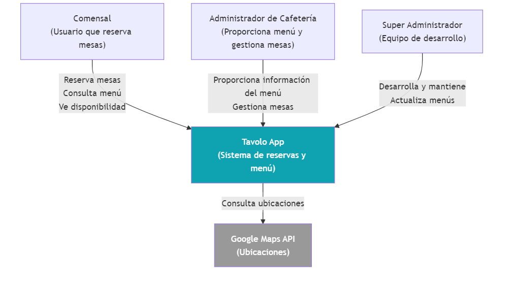
Este diagrama muestra que el sistema Tavolo (representado como una única entidad) interactúa con tres tipos de usuarios: Comensales que utilizan el sistema para encontrar cafeterías, ver menús y realizar reservas; Administradores de Cafeterías que actualizan la información de menús y mesas; y Super Administradores que gestionan el mantenimiento general del sistema. Tavolo también se comunica con dos sistemas externos: Google Maps para mostrar ubicaciones geográficas de cafeterías y un sistema de Sensores IoT que proporciona datos en tiempo real sobre la ocupación de mesas en los establecimientos.
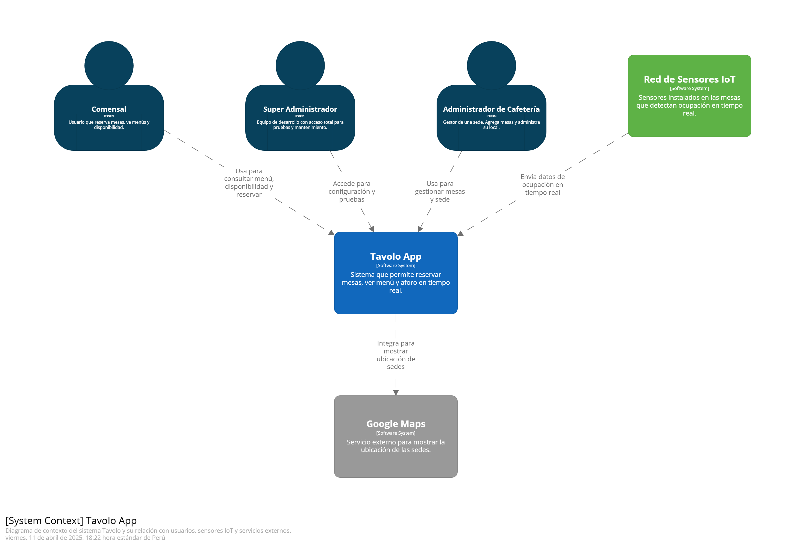
Este diagrama muestra que el sistema Tavolo está compuesto por cuatro contenedores principales: una aplicación web accesible desde navegadores, una aplicación móvil para dispositivos portátiles, una API que gestiona toda la lógica de negocio y una base de datos que almacena la información del sistema. Además, incluye un módulo de sensores encargado de procesar los datos provenientes de dispositivos Arduino ubicados en las mesas. Por último, la API también se conecta con Google Maps, una aplicación externa, permitiendo que el comensal acceda a un mapa interactivo con las ubicaciones de las distintas sedes de la cafetería.
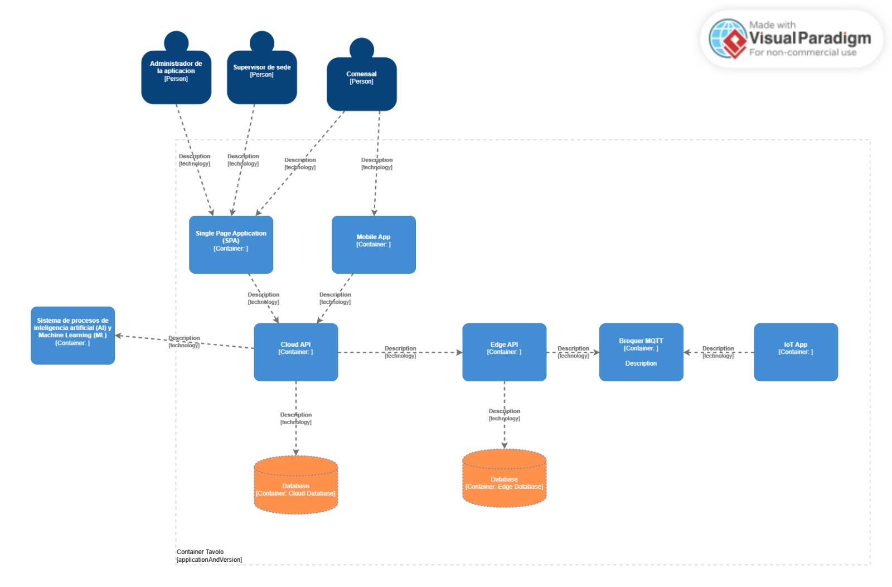
Este diagrama muestra que el sistema Tavolo se despliega en tres entornos principales: Microsoft Azure Cloud, Dispositivos Cliente y Cafeterías físicas. En Azure, el sistema utiliza App Service para alojar la aplicación web frontend (WebStorm), otro App Service para la API (Spring Boot/Java) con documentación Swagger, Azure Database for PostgreSQL para los datos, y Azure IoT Hub para gestionar comunicaciones con dispositivos IoT. Los usuarios acceden al sistema a través de navegadores web o dispositivos Android. En cada cafetería, se instalan sensores Arduino en las mesas que envían datos de ocupación a un Gateway Arduino local, el cual transmite esta información al IoT Hub en Azure. Todas las comunicaciones entre componentes utilizan protocolos seguros como HTTPS, MQTT/TLS o conexiones PostgreSQL.
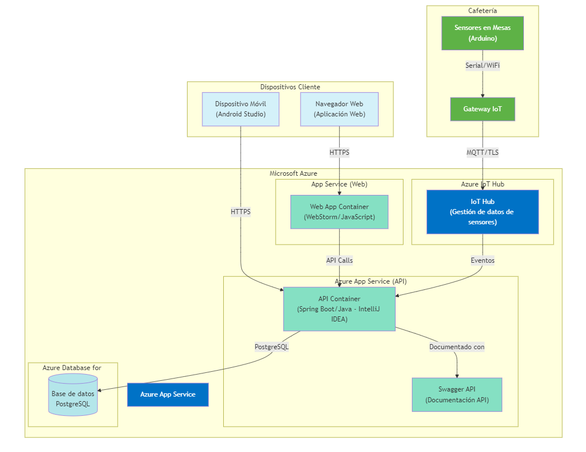
El IAM (Identity and Access Management) Bounded Context es responsable de gestionar la autenticación y la creación de usuarios en el sistema. Este contexto asegura que los usuarios puedan registrarse, iniciar sesión y gestionar sus credenciales de manera segura, cumpliendo con los estándares de seguridad y privacidad.
La Domain Layer del IAM Bounded Context encapsula la lógica de negocio relacionada con la autenticación y la gestión de usuarios. En esta capa, se definen los elementos principales del dominio, como agregados, entidades y objetos de valor, que representan los conceptos clave del sistema.
User), que encapsula la lógica de negocio relacionada con la autenticación y la gestión de roles.username: Identificador único del usuario, validado para cumplir con restricciones de longitud y unicidad.password: Contraseña del usuario, almacenada de forma segura.roles: Conjunto de roles asociados al usuario, representados como una relación ManyToMany con la entidad Role.addRole(Role role): Agrega un rol al usuario.addRoles(List<Role> roles): Agrega múltiples roles al usuario, validando que sean roles válidos.AuditableAbstractAggregateRoot, lo que permite auditar cambios en los usuarios.Role representa los roles que pueden ser asignados a los usuarios.id: Identificador único del rol.name: Nombre del rol, representado como un valor enumerado (Roles).getDefaultRole(): Devuelve el rol predeterminado (ROLE_USER).toRoleFromName(String name): Convierte un nombre de rol en una instancia de Role.validateRoleSet(List<Role> roles): Valida un conjunto de roles, asignando un rol predeterminado si el conjunto está vacío o es nulo.Roles es una enumeración que define los roles disponibles en el sistema.ROLE_ADMIN: Rol de administrador.ROLE_SUPERVISOR: Rol de supervisor.ROLE_USER: Rol de usuario estándar.En conjunto, estos elementos permiten modelar de manera robusta y segura la lógica de negocio relacionada con la autenticación y la gestión de usuarios, asegurando que las reglas del dominio se cumplan de manera consistente.
La Interface Layer del IAM Bounded Context expone los puntos de entrada al sistema a través de controladores REST. Estos controladores permiten la interacción con las entidades del dominio mediante solicitudes HTTP, facilitando la comunicación entre los clientes y el sistema. Además, esta capa incluye recursos y transformadores que aseguran una representación adecuada de los datos y su conversión entre las capas de la aplicación.
Los controladores son responsables de manejar las solicitudes HTTP y delegar la lógica de negocio a los servicios correspondientes. A continuación, se describen los principales controladores:
UsersController
GET /api/v1/users: Obtiene la lista de todos los usuarios.GET /api/v1/users/{userId}: Obtiene los detalles de un usuario específico por su ID.UserQueryService: Servicio encargado de manejar las consultas relacionadas con los usuarios.RolesController
GET /api/v1/roles: Obtiene la lista de todos los roles disponibles.RoleQueryService: Servicio encargado de manejar las consultas relacionadas con los roles.AuthenticationController
POST /api/v1/authentication/sign-up: Registra un nuevo usuario en el sistema.POST /api/v1/authentication/sign-in: Autentica a un usuario y genera un token de acceso.UserCommandService: Servicio encargado de manejar los comandos relacionados con los usuarios.Los recursos representan los datos que se exponen a través de la API REST. Estos recursos son utilizados para estructurar las respuestas de los controladores y asegurar una representación clara y consistente de los datos. A continuación, se describen los principales recursos:
UserResource
Representa un usuario en el sistema.
id: Identificador único del usuario.username: Nombre de usuario.roles: Lista de roles asociados al usuario.RoleResource
Representa un rol en el sistema.
id: Identificador único del rol.name: Nombre del rol.AuthenticatedUserResource
Representa un usuario autenticado junto con su token de acceso.
id: Identificador único del usuario.username: Nombre de usuario.token: Token de acceso generado.SignUpResource
Representa los datos necesarios para registrar un nuevo usuario.
username: Nombre de usuario.password: Contraseña.roles: Lista de roles asignados al usuario.SignInResource
Representa los datos necesarios para autenticar a un usuario.
username: Nombre de usuario.password: Contraseña.Los transformadores son responsables de convertir las entidades del dominio en recursos y viceversa. Esto asegura que los datos expuestos a través de la API REST sean consistentes y estén en el formato esperado. A continuación, se describen los principales transformadores:
UserResourceFromEntityAssembler
Convierte una entidad User en un recurso UserResource.
toResourceFromEntity(User entity): Transforma un usuario del dominio en un recurso.RoleResourceFromEntityAssembler
Convierte una entidad Role en un recurso RoleResource.
toResourceFromEntity(Role entity): Transforma un rol del dominio en un recurso.AuthenticatedUserResourceFromEntityAssembler
Convierte una entidad User y un token en un recurso AuthenticatedUserResource.
toResourceFromEntity(User entity, String token): Transforma un usuario autenticado en un recurso.SignUpCommandFromResourceAssembler
Convierte un recurso SignUpResource en un comando SignUpCommand.
toCommandFromResource(SignUpResource resource): Transforma los datos de registro en un comando.SignInCommandFromResourceAssembler
Convierte un recurso SignInResource en un comando SignInCommand.
toCommandFromResource(SignInResource resource): Transforma los datos de inicio de sesión en un comando.UserQueryService, RoleQueryService) y de comandos (UserCommandService) para delegar la lógica de negocio.Esta estructura asegura que la Interface Layer sea modular, reutilizable y fácil de mantener, facilitando la interacción entre los clientes y el sistema.
La Application Layer del IAM Bounded Context actúa como un intermediario entre la Domain Layer y las capas externas, como la Interface Layer y la Infrastructure Layer. Su propósito principal es coordinar las operaciones de negocio, manejar comandos y consultas, y orquestar la lógica de aplicación sin exponer directamente los detalles del dominio.
Los servicios de comandos son responsables de ejecutar operaciones que modifican el estado del sistema. A continuación, se describen los principales servicios de comandos:
RoleCommandServiceImpl
handle(SeedRolesCommand command): Verifica si los roles predefinidos existen en el sistema y los crea si no están presentes.RoleRepository: Interactúa con la base de datos para verificar y guardar roles.UserCommandServiceImpl
handle(SignUpCommand command): Registra un nuevo usuario en el sistema, asignándole roles y almacenando su contraseña de forma segura.handle(SignInCommand command): Autentica a un usuario verificando sus credenciales y generando un token de acceso.UserRepository: Interactúa con la base de datos para guardar y recuperar usuarios.HashingService: Codifica y verifica contraseñas.TokenService: Genera y valida tokens de acceso.RoleRepository: Recupera roles asignados a los usuarios.Los servicios de consultas son responsables de recuperar información del sistema sin modificar su estado. A continuación, se describen los principales servicios de consultas:
RoleQueryServiceImpl
handle(GetAllRolesQuery query): Recupera todos los roles disponibles en el sistema.handle(GetRoleByNameQuery query): Recupera un rol específico por su nombre.RoleRepository: Interactúa con la base de datos para recuperar roles.UserQueryServiceImpl
handle(GetAllUsersQuery query): Recupera todos los usuarios registrados en el sistema.handle(GetUserByIdQuery query): Recupera un usuario específico por su ID.handle(GetUserByUsernameQuery query): Recupera un usuario específico por su nombre de usuario.UserRepository: Interactúa con la base de datos para recuperar usuarios.Esta estructura asegura que la Application Layer sea modular, reutilizable y fácil de mantener, permitiendo una separación clara de responsabilidades y facilitando la evolución del sistema.
La Infrastructure Layer del IAM Bounded Context proporciona las implementaciones técnicas necesarias para soportar las operaciones del sistema. Esta capa incluye configuraciones de seguridad, servicios de hashing, manejo de tokens, repositorios para la persistencia de datos y componentes relacionados con la autorización y autenticación. Su objetivo principal es conectar la lógica de negocio con los recursos externos, como bases de datos, servicios de seguridad y APIs externas.
RoleRepository
findByName: Busca un rol por su nombre.existsByName: Verifica si un rol existe en la base de datos.UserRepository
findByUsername: Busca un usuario por su nombre de usuario.existsByUsername: Verifica si un usuario existe en la base de datos.RoleRepository, UserRepository) proporcionan acceso a los datos almacenados en la base de datos, permitiendo a las capas superiores interactuar con las entidades del dominio.Esta estructura asegura que la Infrastructure Layer sea modular, reutilizable y fácil de mantener, facilitando la integración con otros sistemas y servicios externos.
En esta sección se presenta el diagrama de componentes del IAM Bounded Context, el cual detalla los principales módulos y sus interacciones dentro del contexto delimitado. Este diagrama sigue el enfoque del C4 Model para representar los componentes clave, como servicios de aplicación, controladores, repositorios y servicios externos, junto con sus relaciones.
El propósito de este diagrama es proporcionar una visión clara y estructurada de cómo se organizan los componentes dentro del contexto, facilitando la comprensión de su arquitectura y permitiendo identificar puntos de integración y responsabilidades.
El IAM Bounded Context está compuesto por los siguientes módulos principales:
Application Layer:
Interface Layer:
Domain Layer:
Infrastructure Layer:
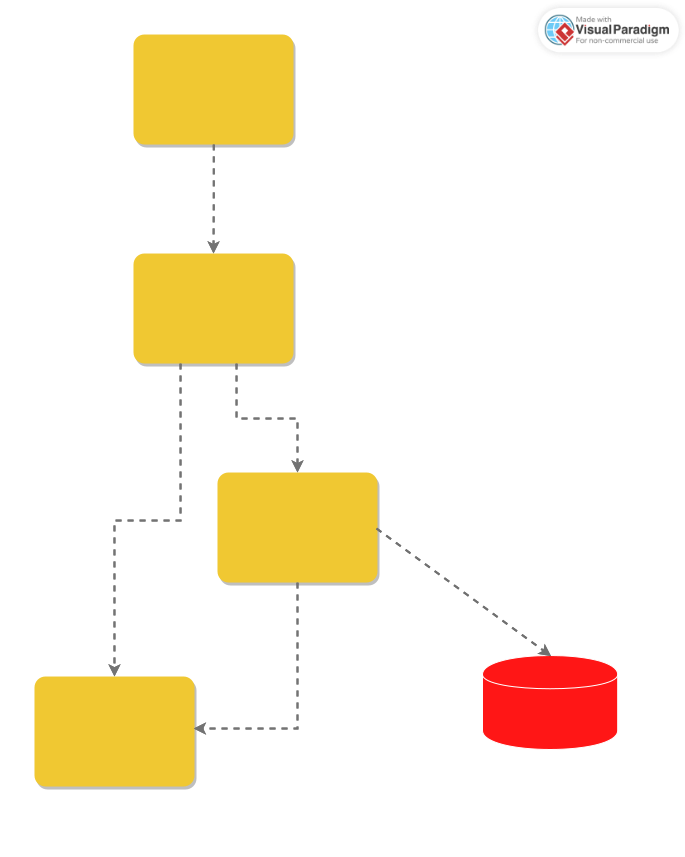
En este apartado se presentan los diagramas que ofrecen un mayor nivel de detalle sobre la implementación de los componentes del IAM Bounded Context. Estos diagramas están diseñados para ilustrar cómo se estructuran las clases, interfaces y relaciones dentro de las capas del contexto, proporcionando una visión técnica que facilita el desarrollo, mantenimiento y evolución del sistema.
El diagrama de clases correspondiente a la Domain Layer del IAM Bounded Context incluye las clases principales, como agregados, entidades y objetos de valor, así como las interfaces y enumeraciones que definen el comportamiento del dominio. También se destacan las relaciones entre estos elementos, como asociaciones, composiciones y dependencias.
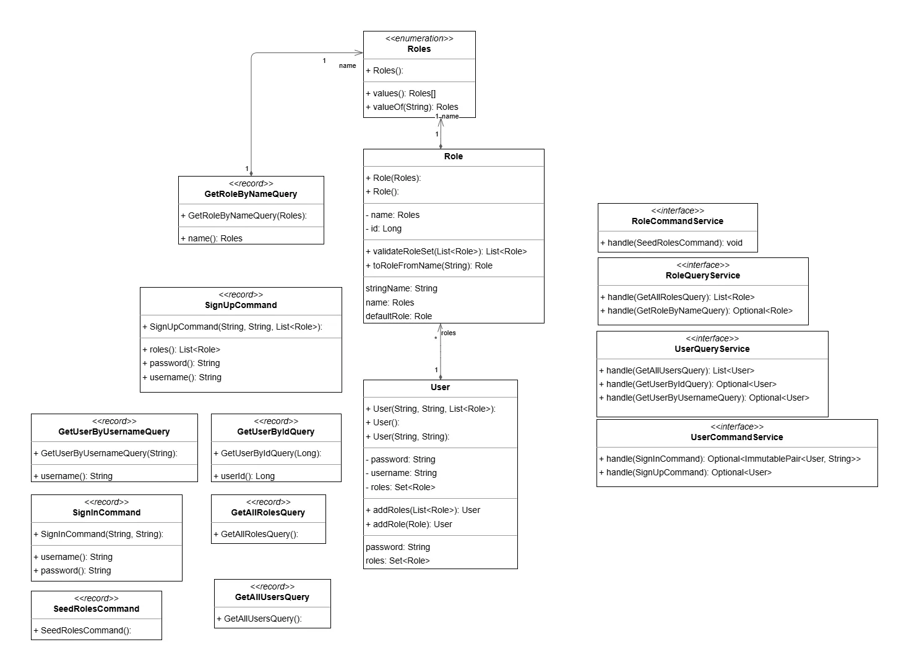
Elementos principales del diagrama:
Aggregates:
User: Agregado principal que encapsula la lógica de negocio relacionada con la autenticación y la gestión de usuarios. Incluye atributos como username, password y roles.
username: Identificador único del usuario.password: Contraseña almacenada de forma segura.roles: Lista de roles asignados al usuario.addRole(Role role): Agrega un rol al usuario.addRoles(List<Role> roles): Agrega múltiples roles al usuario, validando que sean válidos.Entities:
Role: Representa los roles que pueden ser asignados a los usuarios.
id: Identificador único del rol.name: Nombre del rol.getDefaultRole(): Devuelve el rol predeterminado (ROLE_USER).validateRoleSet(List<Role> roles): Valida un conjunto de roles asignados.Value Objects:
Roles: Enumeración que define los roles disponibles en el sistema (ROLE_ADMIN, ROLE_SUPERVISOR, ROLE_USER).Password: Representa la contraseña del usuario, asegurando que cumpla con las políticas de seguridad.Token: Representa un token de autenticación generado para un usuario.Relaciones destacadas:
User gestiona las relaciones con la entidad Role, asegurando que los usuarios tengan roles válidos asignados.Role define los permisos y responsabilidades que pueden ser asignados a los usuarios.El diseño de la base de datos para el IAM Bounded Context refleja la estructura del dominio, asegurando que las entidades y relaciones definidas en la Domain Layer se representen de manera eficiente en el modelo relacional.
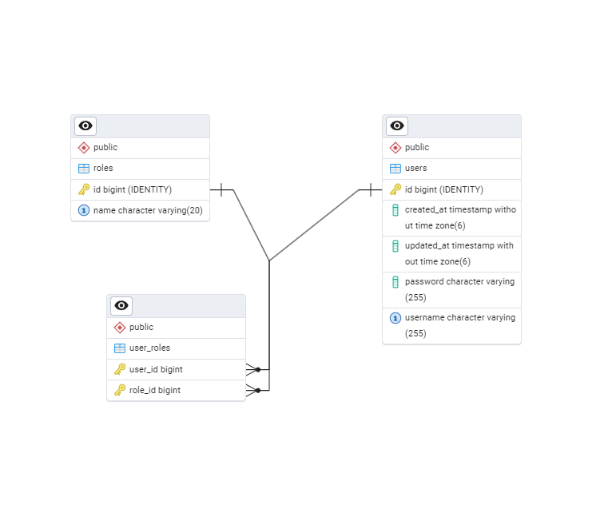
Este diseño incluye las siguientes tablas principales:
Users:
id: Identificador único del usuario.username: Nombre de usuario único.password: Contraseña almacenada de forma segura.created_at: Fecha de creación del usuario.Roles:
id: Identificador único del rol.name: Nombre del rol.UserRoles:
user_id: Identificador del usuario.role_id: Identificador del rol.Este diseño asegura que las operaciones relacionadas con la autenticación y la gestión de usuarios sean eficientes y consistentes, facilitando la integración con la lógica de negocio definida en la Domain Layer.
Voy a completar el análisis táctico de Domain-Driven Design para los bounded contexts faltantes: Table Management, Menu Management y IoT Monitoring. Desarrollaré cada sección siguiendo la estructura que ya tiene tu informe.
El Table Management Bounded Context es responsable de gestionar la información y el estado de las mesas en las cafeterías. Este contexto se encarga de registrar, actualizar y consultar el estado de las mesas, así como su capacidad, ubicación dentro de la sede y otros atributos relevantes. Es el núcleo central que permite la visualización en tiempo real del estado de ocupación de las mesas para los usuarios.
La Domain Layer del Table Management Bounded Context encapsula la lógica de negocio relacionada con la gestión de mesas. En esta capa, se definen los elementos principales del dominio, como agregados, entidades y objetos de valor, que representan los conceptos clave del sistema.
Table), que encapsula la lógica de negocio relacionada con la gestión de la mesa y su estado de ocupación.tableNumber: Número identificativo de la mesa, representado como un objeto de valor TableNumber.headquarterId: Identificador de la sede a la que pertenece la mesa, representado como un objeto de valor HeadquarterId.capacity: Capacidad de la mesa (número de sillas), representada como un objeto de valor Capacity.status: Estado actual de la mesa, representado como un objeto de valor TableStatus.location: Ubicación física de la mesa dentro de la sede, representada como un objeto de valor Location.updateStatus(TableStatus status): Actualiza el estado de la mesa.assignToHeadquarter(HeadquarterId headquarterId): Asigna la mesa a una sede específica.changeCapacity(Capacity capacity): Modifica la capacidad de la mesa.relocate(Location location): Actualiza la ubicación de la mesa dentro de la sede.AuditableAbstractAggregateRoot, lo que permite auditar cambios en las mesas.Chair representa cada silla asociada a una mesa, con su estado de ocupación.id: Identificador único de la silla.chairNumber: Número identificativo de la silla dentro de la mesa.status: Estado actual de la silla (ocupada o libre), representado como un objeto de valor ChairStatus.updateStatus(ChairStatus status): Actualiza el estado de la silla.isOccupied(): Verifica si la silla está ocupada.TableNumber
HeadquarterId
Capacity
TableStatus
AVAILABLE: La mesa está disponible para ser ocupada.OCCUPIED: La mesa está ocupada por comensales.RESERVED: La mesa está reservada para un futuro cercano.MAINTENANCE: La mesa está fuera de servicio temporalmente.ChairStatus
OCCUPIED: La silla está ocupada por un comensal.FREE: La silla está libre.Location
zone: Zona de la cafetería (interior, terraza, etc.).coordinates: Coordenadas relativas dentro del plano de la sede.CreateTableCommand
tableNumber: Número de la mesa.headquarterId: ID de la sede donde se ubicará la mesa.capacity: Capacidad de la mesa.location: Ubicación de la mesa dentro de la sede.UpdateTableStatusCommand
tableId: ID de la mesa a actualizar.status: Nuevo estado de la mesa.DeleteTableCommand
tableId: ID de la mesa a eliminar.headquarterId: ID de la sede a la que pertenece la mesa.GetTableByIdQuery
tableId: ID de la mesa a consultar.GetTablesByHeadquarterQuery
headquarterId: ID de la sede a consultar.GetTablesByStatusQuery
status: Estado de las mesas a consultar.headquarterId: ID de la sede a consultar.TableCreatedEvent
tableId: ID de la mesa creada.headquarterId: ID de la sede donde se ubicó la mesa.TableStatusChangedEvent
tableId: ID de la mesa.previousStatus: Estado anterior de la mesa.newStatus: Nuevo estado de la mesa.timestamp: Momento en que ocurrió el cambio.La Interface Layer del Table Management Bounded Context expone los puntos de entrada al sistema a través de controladores REST. Esta capa permite la interacción con las entidades del dominio mediante solicitudes HTTP, facilitando la comunicación entre los clientes y el sistema. Además, incluye recursos y transformadores que aseguran una representación adecuada de los datos y su conversión entre las capas de la aplicación.
getTableStatus(Long tableId): Devuelve el estado actual de una mesa.getTablesByStatus(Long headquarterId, String status): Devuelve las mesas de una sede con un estado específico.existsTable(Long tableId): Verifica si una mesa existe en el sistema.TableQueryService: Servicio encargado de manejar las consultas relacionadas con las mesas.Los controladores son responsables de manejar las solicitudes HTTP y delegar la lógica de negocio a los servicios correspondientes. A continuación, se describen los principales controladores:
POST /api/v1/tables: Crea una nueva mesa.GET /api/v1/tables/{tableId}: Obtiene los detalles de una mesa específica por su ID.GET /api/v1/tables: Obtiene la lista de todas las mesas, con opción a filtrar por sede.GET /api/v1/headquarters/{headquarterId}/tables: Obtiene las mesas de una sede específica.PUT /api/v1/tables/{tableId}/status: Actualiza el estado de una mesa.DELETE /api/v1/tables/{tableId}: Elimina una mesa existente.TableCommandService: Servicio encargado de manejar los comandos relacionados con las mesas.TableQueryService: Servicio encargado de manejar las consultas relacionadas con las mesas.Los recursos representan los datos que se exponen a través de la API REST. Estos recursos son utilizados para estructurar las respuestas de los controladores y asegurar una representación clara y consistente de los datos. A continuación, se describen los principales recursos:
CreateTableResource
tableNumber: Número de la mesa.headquarterId: ID de la sede donde se ubicará la mesa.capacity: Capacidad de la mesa.zone: Zona de la cafetería donde se ubicará la mesa.xPosition: Coordenada X de la mesa en el plano.yPosition: Coordenada Y de la mesa en el plano.TableResource
id: ID único de la mesa.tableNumber: Número de la mesa.headquarterId: ID de la sede donde está ubicada la mesa.capacity: Capacidad de la mesa.status: Estado actual de la mesa.zone: Zona de la cafetería donde está ubicada la mesa.position: Coordenadas de la mesa en el plano.UpdateTableStatusResource
status: Nuevo estado de la mesa.Los transformadores son responsables de convertir las entidades del dominio en recursos y viceversa. Esto asegura que los datos expuestos a través de la API REST sean consistentes y estén en el formato esperado. A continuación, se describen los principales transformadores:
CreateTableCommandFromResourceAssembler
CreateTableResource en un comando CreateTableCommand.toCommandFromResource(CreateTableResource resource): Transforma los datos de creación de una mesa en un comando.TableResourceFromEntityAssembler
Table en un recurso TableResource.toResourceFromEntity(Table entity): Transforma una mesa del dominio en un recurso.UpdateTableStatusCommandFromResourceAssembler
UpdateTableStatusResource en un comando UpdateTableStatusCommand.toCommandFromResource(UpdateTableStatusResource resource, Long tableId): Transforma los datos de actualización de estado en un comando.La Application Layer del Table Management Bounded Context actúa como un intermediario entre la Domain Layer y las capas externas, como la Interface Layer y la Infrastructure Layer. Su propósito principal es coordinar las operaciones de negocio, manejar comandos y consultas, y orquestar la lógica de aplicación sin exponer directamente los detalles del dominio.
Los servicios de comandos son responsables de ejecutar operaciones que modifican el estado del sistema. A continuación, se describen los principales servicios de comandos:
handle(CreateTableCommand command): Crea una nueva mesa validando que la sede exista y que no haya duplicados.handle(UpdateTableStatusCommand command): Actualiza el estado de una mesa existente.handle(DeleteTableCommand command): Elimina una mesa existente.ExternalHeadquarterService.TableRepository: Persistencia de mesas.ExternalHeadquarterService: Verifica la existencia de la sede.Los servicios de consultas son responsables de recuperar información del sistema sin modificar su estado. A continuación, se describen los principales servicios de consultas:
handle(GetTableByIdQuery query): Recupera una mesa específica por su ID.handle(GetTablesByHeadquarterQuery query): Recupera todas las mesas de una sede específica.handle(GetTablesByStatusQuery query): Recupera todas las mesas que tienen un estado específico en una sede determinada.TableRepository: Persistencia de mesas.Los manejadores de eventos son responsables de reaccionar a eventos específicos del sistema. A continuación, se describen los principales manejadores de eventos:
TableStatusChangedEvent, que se dispara cuando cambia el estado de una mesa.on(TableStatusChangedEvent event): Realiza acciones adicionales cuando cambia el estado de una mesa, como notificar a otros sistemas o actualizar estadísticas.NotificationService: Servicio para enviar notificaciones.StatisticsService: Servicio para actualizar estadísticas de uso de mesas.Los servicios externos proporcionan funcionalidades auxiliares que no forman parte del dominio principal. A continuación, se describen los principales servicios externos:
existsHeadquarter(Long headquarterId): Verifica si una sede existe en el sistema.La Infrastructure Layer del Table Management Bounded Context proporciona las implementaciones técnicas necesarias para soportar las operaciones del sistema relacionadas con la gestión de mesas. Esta capa incluye repositorios para la persistencia de datos y componentes que conectan la lógica de negocio con los recursos externos, como bases de datos. Su objetivo principal es garantizar que las operaciones de almacenamiento y recuperación de información sean eficientes, consistentes y seguras.
findByHeadquarterId(Long headquarterId): Recupera todas las mesas de una sede específica.findByHeadquarterIdAndStatus(Long headquarterId, TableStatus status): Recupera las mesas de una sede con un estado específico.existsByHeadquarterIdAndTableNumber(Long headquarterId, Integer tableNumber): Verifica si existe una mesa con un número específico en una sede.JpaRepository, lo que permite realizar operaciones CRUD sobre las entidades Table.TableRepository proporciona acceso a los datos almacenados en la base de datos, permitiendo a las capas superiores (como la Application Layer) interactuar con las entidades del dominio.TableRepository son utilizados para validar la existencia de mesas y recuperar información específica, asegurando la consistencia de los datos durante las operaciones de negocio.En esta sección se presenta el diagrama de componentes del Table Management Bounded Context, el cual detalla los principales módulos y sus interacciones dentro del contexto delimitado. Este diagrama sigue el enfoque del C4 Model para representar los componentes clave, como servicios de aplicación, controladores, repositorios y servicios externos, junto con sus relaciones.
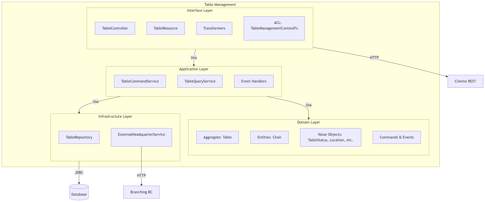
El Table Management Bounded Context está compuesto por los siguientes módulos principales:
Application Layer:
Interface Layer:
Domain Layer:
Infrastructure Layer:
El diagrama de clases correspondiente a la Domain Layer del Table Management Bounded Context incluye las clases principales, como agregados, entidades y objetos de valor, así como las interfaces y enumeraciones que definen el comportamiento del dominio.
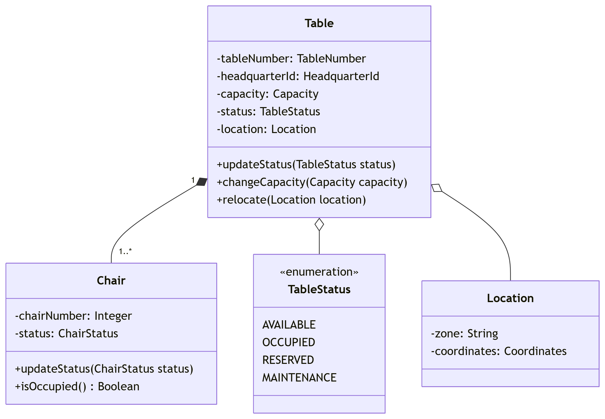
Elementos principales del diagrama:
Aggregates:
Table: Agregado principal que encapsula la lógica de negocio relacionada con la gestión de mesas.
tableNumber: Número identificativo de la mesa.headquarterId: ID de la sede a la que pertenece la mesa.capacity: Capacidad de la mesa.status: Estado actual de la mesa.location: Ubicación física de la mesa dentro de la sede.updateStatus(TableStatus status): Actualiza el estado de la mesa.assignToHeadquarter(HeadquarterId headquarterId): Asigna la mesa a una sede específica.changeCapacity(Capacity capacity): Modifica la capacidad de la mesa.Entities:
Chair: Entidad que representa cada silla asociada a una mesa.
chairNumber: Número identificativo de la silla dentro de la mesa.status: Estado actual de la silla.updateStatus(ChairStatus status): Actualiza el estado de la silla.isOccupied(): Verifica si la silla está ocupada.Value Objects:
TableNumber: Representa el número identificativo de una mesa.Capacity: Representa la capacidad de una mesa.TableStatus: Enumera los estados posibles de una mesa.ChairStatus: Enumera los estados posibles de una silla.Location: Representa la ubicación física de una mesa dentro de la sede.HeadquarterId: Representa el identificador único de una sede.El diseño de la base de datos para el Table Management Bounded Context refleja la estructura del dominio, asegurando que las entidades y relaciones definidas en la Domain Layer se representen de manera eficiente en el modelo relacional.
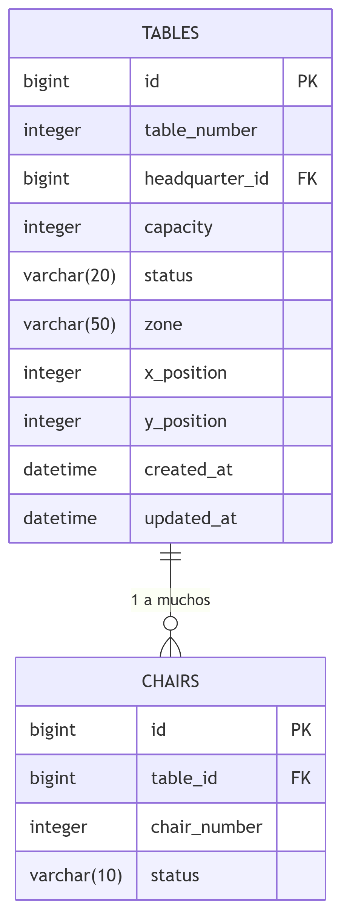
Este diseño incluye las siguientes tablas principales:
Tables:
id: Identificador único de la mesa.table_number: Número de la mesa dentro de la sede.headquarter_id: Identificador de la sede a la que pertenece la mesa.capacity: Capacidad de la mesa en términos de personas.status: Estado actual de la mesa (AVAILABLE, OCCUPIED, RESERVED, MAINTENANCE).zone: Zona de la cafetería donde está ubicada la mesa.x_position: Coordenada X de la mesa en el plano.y_position: Coordenada Y de la mesa en el plano.Chairs:
id: Identificador único de la silla.table_id: Identificador de la mesa a la que pertenece la silla.chair_number: Número de la silla dentro de la mesa.status: Estado actual de la silla (OCCUPIED, FREE).El Branching Bounded Context es responsable de gestionar la información de las sedes (headquarters) del sistema Tavolo. Este contexto asegura que las sedes puedan ser registradas, actualizadas y gestionadas de manera eficiente, incluyendo detalles como horarios de atención, ubicación geográfica, información de contacto y dirección. Este contexto es clave para garantizar que las operaciones relacionadas con las sedes sean consistentes y cumplan con los estándares de calidad y precisión requeridos.
La Domain Layer del Branching Bounded Context encapsula la lógica de negocio relacionada con la gestión de sedes. En esta capa, se definen los elementos principales del dominio, como agregados, entidades y objetos de valor, que representan los conceptos clave del sistema.
La Domain Layer del Branching Bounded Context encapsula la lógica de negocio relacionada con la gestión de sedes. En esta capa, se definen los elementos principales del dominio, como agregados, entidades y objetos de valor, que representan los conceptos clave del sistema.
Headquarter), que encapsula la lógica de negocio relacionada con la gestión de información de las sedes.name: Nombre de la sede, representado como un objeto de valor NameHeadquarter.contactNumbers: Números de contacto de la sede, representados como un objeto de valor ContactNumbers.coordinates: Coordenadas geográficas de la sede, representadas como un objeto de valor Coordinates.schedule: Horarios de atención de la sede, representados como una entidad Schedule.address: Dirección de la sede, representada como un objeto de valor StreetAddress.getOpeningTime(): Devuelve la hora de apertura de la sede.getClosingTime(): Devuelve la hora de cierre de la sede.getIntervalMinutes(): Devuelve el intervalo de tiempo en minutos entre reservas.AuditableAbstractAggregateRoot, lo que permite auditar cambios en las sedes.businessHours: Horarios de apertura y cierre, representados como un objeto de valor BusinessHours.intervalMinutes: Intervalo de tiempo en minutos entre reservas.BusinessHours
openingTime: Hora de apertura.closingTime: Hora de cierre.ContactNumbers
landlinePhone: Número de teléfono fijo.mobilePhone: Número de teléfono móvil.Coordinates
latitude: Latitud de la sede.longitude: Longitud de la sede.NameHeadquarter
name: Nombre de la sede.StreetAddress
street: Calle.number: Número de la dirección.city: Ciudad.postalCode: Código postal.country: País.street, city, postalCode y country no pueden ser nulos ni vacíos.Headquarter actúa como el núcleo del dominio, gestionando las relaciones con los objetos de valor (NameHeadquarter, ContactNumbers, Coordinates, StreetAddress) y la entidad Schedule.Schedule permite modelar horarios complejos, incluyendo intervalos de tiempo entre reservas.Esta estructura asegura que la lógica de negocio relacionada con la gestión de sedes sea robusta, consistente y fácil de mantener, cumpliendo con los requisitos del sistema.
La Interface Layer del Branching Bounded Context expone los puntos de entrada al sistema a través de controladores REST y una ACL (Access Control Layer). Esta capa permite la interacción con las entidades del dominio mediante solicitudes HTTP, facilitando la comunicación entre los clientes y el sistema. Además, incluye recursos y transformadores que aseguran una representación adecuada de los datos y su conversión entre las capas de la aplicación.
getOpeningTime(Long headquarterId): Devuelve la hora de apertura de una sede.getClosingTime(Long headquarterId): Devuelve la hora de cierre de una sede.getIntervalMinutes(Long headquarterId): Devuelve el intervalo de servicio en minutos de una sede.existsHeadquarter(Long headquarterId): Verifica si una sede existe en el sistema.HeadquarterQueryService: Servicio encargado de manejar las consultas relacionadas con las sedes.Los controladores son responsables de manejar las solicitudes HTTP y delegar la lógica de negocio a los servicios correspondientes. A continuación, se describen los principales controladores:
POST /api/v1/headquarters: Crea una nueva sede.GET /api/v1/headquarters/{headquarterId}: Obtiene los detalles de una sede específica por su ID.GET /api/v1/headquarters: Obtiene la lista de todas las sedes.HeadquarterCommandService: Servicio encargado de manejar los comandos relacionados con las sedes.HeadquarterQueryService: Servicio encargado de manejar las consultas relacionadas con las sedes.Los recursos representan los datos que se exponen a través de la API REST. Estos recursos son utilizados para estructurar las respuestas de los controladores y asegurar una representación clara y consistente de los datos. A continuación, se describen los principales recursos:
CreateHeadquarterResource
name: Nombre de la sede.landlinePhone: Número de teléfono fijo.mobilePhone: Número de teléfono móvil.latitude: Latitud de la sede.longitude: Longitud de la sede.street: Calle de la dirección.number: Número de la dirección.city: Ciudad.postalCode: Código postal.country: País.openingTime: Hora de apertura.closingTime: Hora de cierre.intervalMinutes: Intervalo de servicio en minutos.HeadquarterResource
id: Identificador único de la sede.name: Nombre de la sede.landlinePhone: Número de teléfono fijo.mobilePhone: Número de teléfono móvil.latitude: Latitud de la sede.longitude: Longitud de la sede.streetAddress: Dirección completa de la sede.openingTime: Hora de apertura.closingTime: Hora de cierre.intervalMinutes: Intervalo de servicio en minutos.Los transformadores son responsables de convertir las entidades del dominio en recursos y viceversa. Esto asegura que los datos expuestos a través de la API REST sean consistentes y estén en el formato esperado. A continuación, se describen los principales transformadores:
CreateHeadquarterCommandFromResourceAssembler
CreateHeadquarterResource en un comando CreateHeadquarterCommand.toCommandFromResource(CreateHeadquarterResource resource): Transforma los datos de creación de una sede en un comando.HeadquarterResourceFromEntityAssembler
Headquarter en un recurso HeadquarterResource.toResourceFromEntity(Headquarter entity): Transforma una sede del dominio en un recurso.HeadquarterCommandService) y consultas (HeadquarterQueryService) para delegar la lógica de negocio.Esta estructura asegura que la Interface Layer sea modular, reutilizable y fácil de mantener, facilitando la interacción entre los clientes y el sistema.
La Infrastructure Layer del Branching Bounded Context proporciona las implementaciones técnicas necesarias para soportar las operaciones del sistema relacionadas con la gestión de sedes. Esta capa incluye repositorios para la persistencia de datos y componentes que conectan la lógica de negocio con los recursos externos, como bases de datos. Su objetivo principal es garantizar que las operaciones de almacenamiento y recuperación de información sean eficientes, consistentes y seguras.
existsByName(NameHeadquarter name): Verifica si existe una sede con un nombre específico.existsByCoordinates(Coordinates coordinates): Verifica si existe una sede en una ubicación geográfica específica.JpaRepository, lo que permite realizar operaciones CRUD (Crear, Leer, Actualizar, Eliminar) sobre las entidades Headquarter.HeadquarterRepository proporciona acceso a los datos almacenados en la base de datos, permitiendo a las capas superiores (como la Application Layer) interactuar con las entidades del dominio.existsByName y existsByCoordinates son utilizados para validar la unicidad de las sedes durante las operaciones de creación o actualización, asegurando la consistencia de los datos.La Infrastructure Layer del Branching Bounded Context asegura que las operaciones relacionadas con la persistencia de datos sean robustas y confiables. Al proporcionar un repositorio especializado para las sedes, esta capa facilita la integración con la base de datos y garantiza que las reglas de negocio, como la unicidad de nombres y ubicaciones, se cumplan de manera eficiente. Esta estructura modular y reutilizable permite que el sistema sea escalable y fácil de mantener.
En esta sección se presenta el diagrama de componentes del Branching Bounded Context, el cual detalla los principales módulos y sus interacciones dentro del contexto delimitado. Este diagrama sigue el enfoque del C4 Model para representar los componentes clave, como servicios de aplicación, controladores, repositorios y servicios externos, junto con sus relaciones.
El propósito de este diagrama es proporcionar una visión clara y estructurada de cómo se organizan los componentes dentro del contexto, facilitando la comprensión de su arquitectura y permitiendo identificar puntos de integración y responsabilidades.
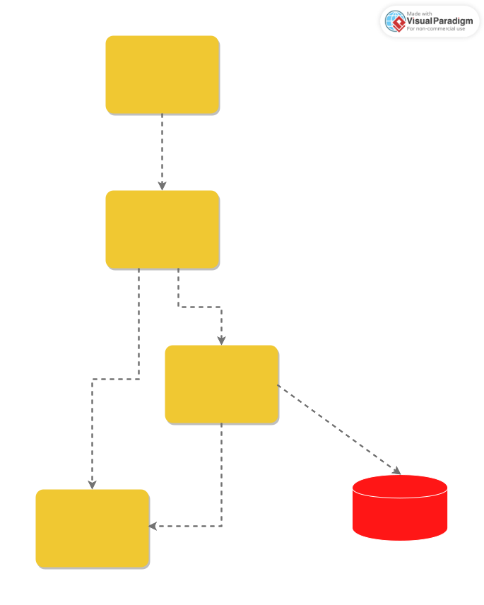
El Branching Bounded Context está compuesto por los siguientes módulos principales:
Application Layer:
Interface Layer:
Domain Layer:
Infrastructure Layer:
En este apartado se presentan los diagramas que ofrecen un mayor nivel de detalle sobre la implementación de los componentes del Branching Bounded Context. Estos diagramas están diseñados para ilustrar cómo se estructuran las clases, interfaces y relaciones dentro de las capas del contexto, proporcionando una visión técnica que facilita el desarrollo, mantenimiento y evolución del sistema.
El diagrama de clases correspondiente a la Domain Layer del Branching Bounded Context incluye las clases principales, como agregados, entidades y objetos de valor, así como las interfaces y enumeraciones que definen el comportamiento del dominio. También se destacan las relaciones entre estos elementos, como asociaciones, composiciones y dependencias.
El objetivo de este diagrama es proporcionar una representación detallada de la lógica de negocio encapsulada en la capa del dominio, asegurando que las reglas del negocio estén claramente definidas y alineadas con los requisitos del sistema.
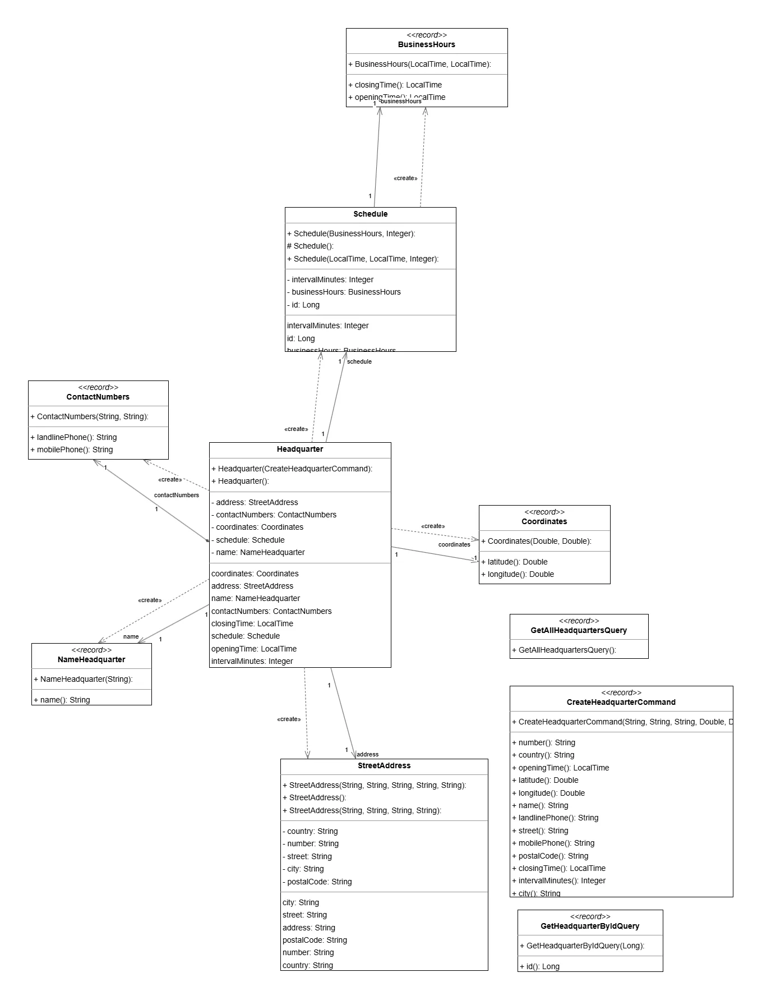
Elementos principales del diagrama:
Aggregates:
Headquarter: Agregado principal que encapsula la lógica de negocio relacionada con la gestión de sedes. Incluye atributos como name, contactNumbers, coordinates, schedule y address.Entities:
Schedule: Representa los horarios de atención de una sede, incluyendo atributos como businessHours e intervalMinutes.Value Objects:
NameHeadquarter: Representa el nombre de una sede.ContactNumbers: Representa los números de contacto de una sede.Coordinates: Representa las coordenadas geográficas de una sede.StreetAddress: Representa la dirección de una sede.BusinessHours: Representa los horarios de apertura y cierre de una sede.Relaciones destacadas:
Headquarter actúa como el núcleo del dominio, gestionando las relaciones con los objetos de valor (NameHeadquarter, ContactNumbers, Coordinates, StreetAddress) y la entidad Schedule.Schedule permite modelar horarios complejos, incluyendo intervalos de tiempo entre reservas.El diseño de la base de datos para el Branching Bounded Context refleja la estructura del dominio, asegurando que las entidades y relaciones definidas en la Domain Layer se representen de manera eficiente en el modelo relacional.
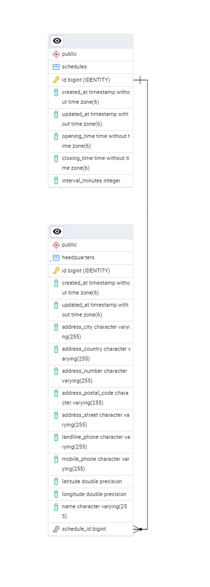
Este diseño incluye las siguientes tablas principales:
Headquarters
id: Identificador único de la sede.name: Nombre de la sede.landline_phone: Número de teléfono fijo de la sede.mobile_phone: Número de teléfono móvil de la sede.latitude: Latitud de la ubicación de la sede.longitude: Longitud de la ubicación de la sede.address_street: Calle de la dirección de la sede.address_number: Número de la dirección.address_city: Ciudad donde se encuentra la sede.address_postal_code: Código postal de la sede.address_country: País donde se encuentra la sede.schedule_id: Relación con la tabla Schedules.Schedules
id: Identificador único del horario.opening_time: Hora de apertura de la sede.closing_time: Hora de cierre de la sede.interval_minutes: Intervalo de tiempo en minutos entre reservas.Este diseño asegura que las operaciones relacionadas con la gestión de sedes sean eficientes y consistentes, facilitando la integración con la lógica de negocio definida en la Domain Layer.
El Booking Bounded Context es responsable de gestionar las reservas de mesas en el sistema Tavolo. Este contexto asegura que los usuarios puedan realizar reservas de manera eficiente, gestionando la disponibilidad de mesas, horarios y slots de tiempo. Además, permite a los administradores supervisar y gestionar las reservas activas, asegurando que las operaciones relacionadas con las reservas sean consistentes y cumplan con los estándares de calidad y precisión requeridos.
La Domain Layer del Booking Bounded Context encapsula la lógica de negocio relacionada con la gestión de reservas. En esta capa, se definen los elementos principales del dominio, como agregados, entidades, objetos de valor, comandos, consultas y eventos, que representan los conceptos clave del sistema.
Booking
userId: Identificador del cliente que realiza la reserva, representado como un objeto de valor UserId.tableId: Mesa reservada, representada como una referencia a la entidad Table.bookingDate: Fecha de la reserva.bookingSlots: Conjunto de intervalos de tiempo reservados, representados como una colección de entidades BookingSlot.AuditableAbstractAggregateRoot, lo que permite auditar cambios en las reservas.Table
tableDetails: Detalles de la mesa, como número de mesa y cantidad de asientos, representados como un objeto de valor TableDetails.headquarterId: Identificador de la sede a la que pertenece la mesa, representado como un objeto de valor HeadquarterId.status: Estado actual de la mesa (AVAILABLE, RESERVED, OCCUPIED), representado como un objeto de valor TableStatus.availabilitySlots: Conjunto de slots de disponibilidad generados para la mesa, representados como una colección de entidades AvailabilitySlot.AuditableAbstractAggregateRoot, lo que permite auditar cambios en las mesas.AvailabilitySlot
dateOfSlot: Fecha del slot.timeInterval: Intervalo de tiempo del slot, representado como un objeto de valor TimeSlot.status: Estado del slot (AVAILABLE, RESERVED), representado como un objeto de valor ScheduleSlotStatus.updateStatus(ScheduleSlotStatus status): Actualiza el estado del slot.BookingSlot
timeInterval: Intervalo de tiempo reservado, representado como un objeto de valor TimeSlot.UserId
HeadquarterId
TableDetails
TableStatus
AVAILABLE, RESERVED, OCCUPIED).TimeSlot
ScheduleSlotStatus
AVAILABLE, RESERVED).MaximumDuration
CreateBookingCommand
clientId: Identificador del cliente.tableId: Identificador de la mesa.bookingDate: Fecha de la reserva.slotIds: Lista de identificadores de slots reservados.CreateTableCommand
tableNumber: Número de la mesa.seats: Cantidad de asientos.headquartersId: Identificador de la sede.CreateTableScheduleCommand
tableId: Identificador de la mesa.GetAllBookingsQuery
GetAllTablesQuery
GetBookingByIdQuery
GetTableByIdQuery
GetTableScheduleByIdAndDateQuery
tableId: Identificador de la mesa.Booking actúa como el núcleo del dominio, gestionando las relaciones con las entidades BookingSlot y Table.Table gestiona la generación y actualización de los slots de disponibilidad (AvailabilitySlot).Esta estructura asegura que la lógica de negocio relacionada con la gestión de reservas sea robusta, consistente y fácil de mantener, cumpliendo con los requisitos del sistema.
La Interface Layer del Booking Bounded Context expone los puntos de entrada al sistema a través de controladores REST. Esta capa permite la interacción con las entidades del dominio mediante solicitudes HTTP, facilitando la comunicación entre los clientes y el sistema. Además, incluye recursos y transformadores que aseguran una representación adecuada de los datos y su conversión entre las capas de la aplicación.
Los controladores son responsables de manejar las solicitudes HTTP y delegar la lógica de negocio a los servicios correspondientes. A continuación, se describen los principales controladores:
BookingController
POST /api/v1/bookings: Crea una nueva reserva.GET /api/v1/bookings/{id}: Obtiene los detalles de una reserva específica por su ID.GET /api/v1/bookings: Obtiene la lista de todas las reservas.BookingCommandService: Servicio encargado de manejar los comandos relacionados con las reservas.BookingQueryService: Servicio encargado de manejar las consultas relacionadas con las reservas.TableController
POST /api/v1/tables: Crea una nueva mesa.GET /api/v1/tables/{tableId}: Obtiene los detalles de una mesa específica por su ID.GET /api/v1/tables: Obtiene la lista de todas las mesas.GET /api/v1/tables/{tableId}/schedule: Obtiene los slots de disponibilidad de una mesa para una fecha específica.TableCommandService: Servicio encargado de manejar los comandos relacionados con las mesas.TableQueryService: Servicio encargado de manejar las consultas relacionadas con las mesas.Los recursos representan los datos que se exponen a través de la API REST. Estos recursos son utilizados para estructurar las respuestas de los controladores y asegurar una representación clara y consistente de los datos. A continuación, se describen los principales recursos:
AvailabilitySlotResource
id: Identificador único del slot.date: Fecha del slot.startTime: Hora de inicio del slot.endTime: Hora de fin del slot.status: Estado del slot (AVAILABLE, RESERVED).BookingResource
id: Identificador único de la reserva.clientId: Identificador del cliente que realizó la reserva.tableId: Identificador de la mesa reservada.bookingDate: Fecha de la reserva.bookingSlots: Lista de slots reservados.BookingSlotResource
startTime: Hora de inicio del slot reservado.endTime: Hora de fin del slot reservado.CreateBookingResource
clientId: Identificador del cliente.tableId: Identificador de la mesa.bookingDate: Fecha de la reserva.slotIds: Lista de identificadores de slots reservados.CreateTableResource
headquarterId: Identificador de la sede a la que pertenece la mesa.tableNumber: Número de la mesa.seats: Cantidad de asientos.TableResource
id: Identificador único de la mesa.headquarterId: Identificador de la sede a la que pertenece la mesa.tableNumber: Número de la mesa.seats: Cantidad de asientos.status: Estado actual de la mesa (AVAILABLE, RESERVED, OCCUPIED).Los transformadores son responsables de convertir las entidades del dominio en recursos y viceversa. Esto asegura que los datos expuestos a través de la API REST sean consistentes y estén en el formato esperado. A continuación, se describen los principales transformadores:
AvailabilitySlotResourceFromEntityAssembler
AvailabilitySlot en un recurso AvailabilitySlotResource.toResourceFromEntity(AvailabilitySlot entity): Transforma un slot de disponibilidad en un recurso.toResourceListFromEntities(List<AvailabilitySlot> entities): Transforma una lista de slots de disponibilidad en una lista de recursos.BookingResourceFromEntityAssembler
Booking en un recurso BookingResource.toResourceFromEntity(Booking booking): Transforma una reserva en un recurso.CreateBookingCommandFromResourceAssembler
CreateBookingResource en un comando CreateBookingCommand.toCommandFromResource(CreateBookingResource resource): Transforma los datos de creación de una reserva en un comando.CreateTableCommandFromResourceAssembler
CreateTableResource en un comando CreateTableCommand.toCommandFromResource(CreateTableResource resource): Transforma los datos de creación de una mesa en un comando.TableResourceFromEntityAssembler
Table en un recurso TableResource.toResourceFromEntity(Table entity): Transforma una mesa en un recurso.BookingController, TableController) utilizan los servicios de comandos y consultas para delegar la lógica de negocio.Esta estructura asegura que la Interface Layer sea modular, reutilizable y fácil de mantener, facilitando la interacción entre los clientes y el sistema.
La Application Layer del Booking Bounded Context actúa como un intermediario entre la Domain Layer y las capas externas, como la Interface Layer y la Infrastructure Layer. Su propósito principal es coordinar las operaciones de negocio, manejar comandos y consultas, orquestar la lógica de aplicación y garantizar que las reglas del dominio se cumplan de manera consistente. Además, esta capa incluye manejadores de eventos y servicios externos (ACL) para interactuar con otros contextos delimitados.
Los servicios de comandos son responsables de ejecutar operaciones que modifican el estado del sistema. A continuación, se describen los principales servicios de comandos:
BookingCommandServiceImpl
handle(CreateBookingCommand command): Crea una nueva reserva, validando la disponibilidad de los slots y asegurando que las reglas de negocio, como la duración máxima de la reserva, se cumplan.ExternalUserService.BookingRepository: Persistencia de reservas.TableRepository: Gestión de mesas y sus slots de disponibilidad.ExternalUserService: Verifica la existencia del cliente.TableCommandServiceImpl
handle(CreateTableCommand command): Crea una nueva mesa en una sede específica, validando que la sede exista y que no haya duplicados.handle(CreateTableScheduleCommand command): Genera los slots de disponibilidad para una mesa, basándose en los horarios y el intervalo de la sede.ExternalHeadquarterService.TableRepository: Persistencia de mesas y sus slots de disponibilidad.ExternalHeadquarterService: Obtiene información de la sede, como horarios y intervalos.Los servicios de consultas son responsables de recuperar información del sistema sin modificar su estado. A continuación, se describen los principales servicios de consultas:
BookingQueryServiceImpl
handle(GetBookingByIdQuery query): Recupera una reserva específica por su ID.handle(GetAllBookingsQuery query): Recupera todas las reservas registradas en el sistema.BookingRepository: Persistencia de reservas.TableQueryServiceImpl
handle(GetTableByIdQuery query): Recupera una mesa específica por su ID.handle(GetAllTablesQuery query): Recupera todas las mesas registradas en el sistema.handle(GetTableScheduleByIdAndDateQuery query): Recupera los slots de disponibilidad de una mesa para una fecha específica.TableRepository: Persistencia de mesas y sus slots de disponibilidad.Los manejadores de eventos son responsables de reaccionar a eventos específicos del sistema. A continuación, se describe el principal manejador de eventos:
SingleTableAvailabilitySlotsGeneratedEvent, que se dispara cuando se generan los slots de disponibilidad para una mesa.on(SingleTableAvailabilitySlotsGeneratedEvent event): Genera los slots de disponibilidad para una mesa específica.TableCommandService: Servicio encargado de manejar los comandos relacionados con las mesas.Los servicios externos proporcionan funcionalidades auxiliares que no forman parte del dominio principal. A continuación, se describen los principales servicios externos:
ExternalHeadquarterService
getHeadquarterOpeningTime(Long headquarterId): Obtiene la hora de apertura de una sede.getHeadquarterClosingTime(Long headquarterId): Obtiene la hora de cierre de una sede.getHeadquarterIntervalMinutes(Long headquarterId): Obtiene el intervalo de servicio en minutos de una sede.existsHeadquarter(Long headquarterId): Verifica si una sede existe.ExternalUserService
existUserById(Long userId): Verifica si un usuario existe en el sistema.La Application Layer del Booking Bounded Context asegura que las operaciones relacionadas con la gestión de reservas y mesas sean robustas, consistentes y fáciles de mantener. Al coordinar la lógica de negocio, manejar eventos y facilitar la integración con otros contextos, esta capa garantiza que las reglas del dominio se cumplan de manera eficiente y que el sistema sea escalable y extensible.
La Infrastructure Layer del Booking Bounded Context proporciona las implementaciones técnicas necesarias para soportar las operaciones del sistema relacionadas con la gestión de reservas y mesas. Esta capa incluye repositorios para la persistencia de datos y componentes que conectan la lógica de negocio con los recursos externos, como bases de datos. Su objetivo principal es garantizar que las operaciones de almacenamiento y recuperación de información sean eficientes, consistentes y seguras.
BookingRepository
JpaRepository, lo que permite realizar operaciones CRUD (Crear, Leer, Actualizar, Eliminar) sobre las entidades Booking.TableRepository
existsByHeadquarterIdAndTableDetails_TableNumber(HeadquarterId headquarterId, Integer tableDetails_tableNumber): Verifica si existe una mesa con un número específico en una sede.findAvailabilitySlotsByTableIdAndDate(Long tableId, LocalDate date): Recupera los slots de disponibilidad de una mesa para una fecha específica.findByIdWithSlotsForUpdate(Long id): Recupera una mesa junto con sus slots de disponibilidad utilizando un bloqueo pesimista para evitar modificaciones concurrentes.JpaRepository, lo que permite realizar operaciones CRUD sobre las entidades Table.PESSIMISTIC_WRITE) para garantizar la consistencia de los datos durante las operaciones críticas, como la creación de reservas.BookingRepository y TableRepository proporcionan acceso a los datos almacenados en la base de datos, permitiendo a las capas superiores (como la Application Layer) interactuar con las entidades del dominio.TableRepository son utilizados para validar la existencia de mesas y recuperar información específica, como los slots de disponibilidad, asegurando la consistencia de los datos durante las operaciones de negocio.La Infrastructure Layer del Booking Bounded Context asegura que las operaciones relacionadas con la persistencia de datos sean robustas y confiables. Al proporcionar repositorios especializados para las reservas y mesas, esta capa facilita la integración con la base de datos y garantiza que las reglas de negocio, como la validación de slots de disponibilidad y la unicidad de mesas, se cumplan de manera eficiente. Esta estructura modular y reutilizable permite que el sistema sea escalable y fácil de mantener.
En esta sección se presenta el diagrama de componentes del Booking Bounded Context, el cual detalla los principales módulos y sus interacciones dentro del contexto delimitado. Este diagrama sigue el enfoque del C4 Model para representar los componentes clave, como servicios de aplicación, controladores, repositorios y servicios externos, junto con sus relaciones.
El propósito de este diagrama es proporcionar una visión clara y estructurada de cómo se organizan los componentes dentro del contexto, facilitando la comprensión de su arquitectura y permitiendo identificar puntos de integración y responsabilidades.
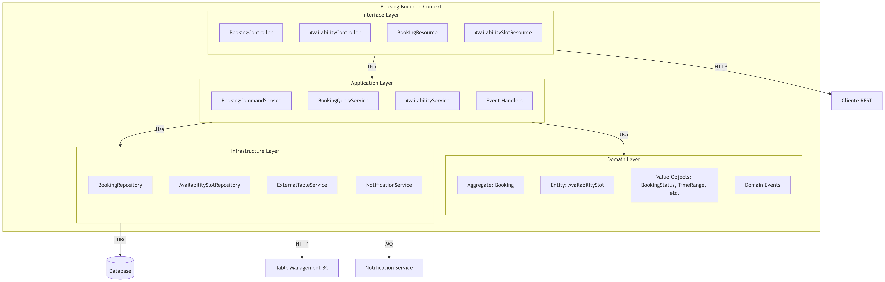
El Booking Bounded Context está compuesto por los siguientes módulos principales:
Application Layer:
Interface Layer:
Domain Layer:
Infrastructure Layer:
En este apartado se presentan los diagramas que ofrecen un mayor nivel de detalle sobre la implementación de los componentes del Booking Bounded Context. Estos diagramas están diseñados para ilustrar cómo se estructuran las clases, interfaces y relaciones dentro de las capas del contexto, proporcionando una visión técnica que facilita el desarrollo, mantenimiento y evolución del sistema.
El diagrama de clases correspondiente a la Domain Layer del Booking Bounded Context incluye las clases principales, como agregados, entidades y objetos de valor, así como las interfaces y enumeraciones que definen el comportamiento del dominio. También se destacan las relaciones entre estos elementos, como asociaciones, composiciones y dependencias.
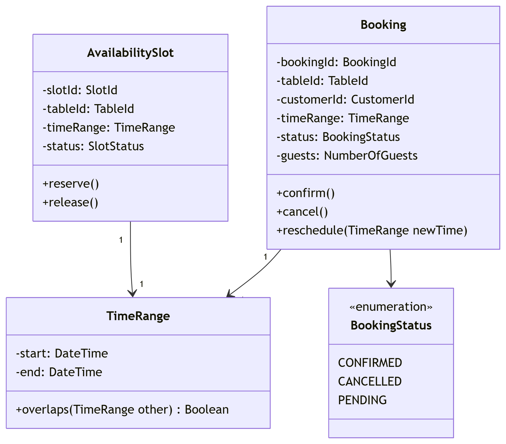
Elementos principales del diagrama:
Aggregates:
Booking: Agregado principal que encapsula la lógica de negocio relacionada con las reservas. Incluye atributos como userId, tableId, bookingDate y bookingSlots.Table: Agregado que representa una mesa en una sede específica, incluyendo su disponibilidad y detalles.Entities:
AvailabilitySlot: Representa un intervalo de tiempo disponible para una mesa en una fecha específica.BookingSlot: Representa un intervalo de tiempo reservado por un cliente.Value Objects:
UserId: Representa el identificador único de un cliente.HeadquarterId: Representa el identificador único de una sede.TableDetails: Representa los detalles de una mesa, como su número y cantidad de asientos.TimeSlot: Representa un intervalo de tiempo con una hora de inicio y una hora de fin.TableStatus: Enumera los estados posibles de una mesa (AVAILABLE, RESERVED, OCCUPIED).ScheduleSlotStatus: Enumera los estados posibles de un slot de disponibilidad (AVAILABLE, RESERVED).Relaciones destacadas:
Booking gestiona las relaciones con las entidades BookingSlot y Table.Table gestiona la generación y actualización de los slots de disponibilidad (AvailabilitySlot).El diseño de la base de datos para el Booking Bounded Context refleja la estructura del dominio, asegurando que las entidades y relaciones definidas en la Domain Layer se representen de manera eficiente en el modelo relacional.
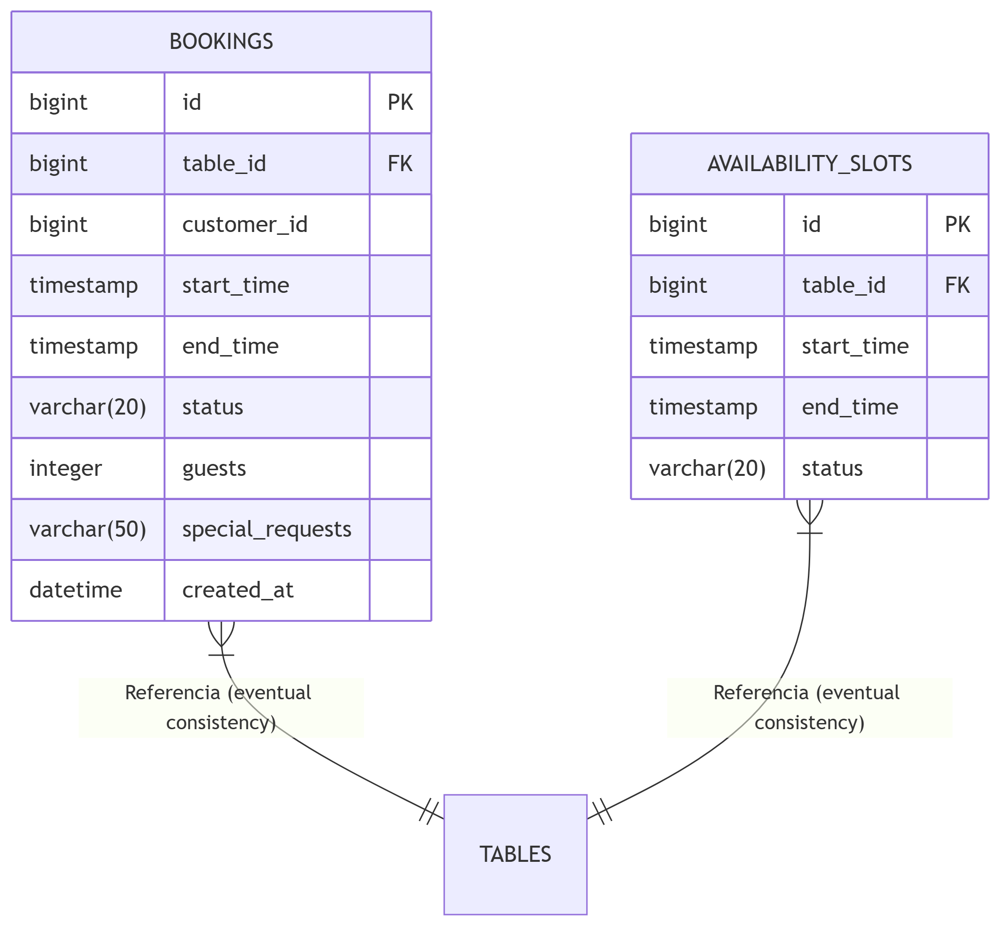
Este diseño incluye las siguientes tablas principales:
Bookings:
id: Identificador único de la reserva.user_id: Identificador del cliente que realizó la reserva.table_id: Identificador de la mesa reservada.booking_date: Fecha de la reserva.Tables:
id: Identificador único de la mesa.headquarter_id: Identificador de la sede a la que pertenece la mesa.table_number: Número de la mesa.seats: Cantidad de asientos.status: Estado actual de la mesa.AvailabilitySlots:
id: Identificador único del slot.table_id: Identificador de la mesa asociada.date_of_slot: Fecha del slot.start_time: Hora de inicio del slot.end_time: Hora de fin del slot.status: Estado del slot (AVAILABLE, RESERVED).BookingSlots:
id: Identificador único del slot reservado.booking_id: Identificador de la reserva asociada.start_time: Hora de inicio del slot reservado.end_time: Hora de fin del slot reservado.El Table Management Bounded Context es responsable de gestionar la información y el estado de las mesas en las cafeterías. Este contexto se encarga de registrar, actualizar y consultar el estado de las mesas, así como su capacidad, ubicación dentro de la sede y otros atributos relevantes. Es el núcleo central que permite la visualización en tiempo real del estado de ocupación de las mesas para los usuarios.
El Menu Management Bounded Context es responsable de gestionar la información de los menús disponibles en las cafeterías. Este contexto asegura que los productos, categorías y precios puedan ser registrados, actualizados y consultados de manera eficiente, permitiendo a los comensales visualizar el menú digital antes de acudir al establecimiento. Este contexto es clave para proporcionar una experiencia completa a los usuarios de la plataforma Tavolo.
La Domain Layer del Menu Management Bounded Context encapsula la lógica de negocio relacionada con la gestión de menús. En esta capa, se definen los elementos principales del dominio, como agregados, entidades y objetos de valor, que representan los conceptos clave del sistema.
Menu), que encapsula la lógica de negocio relacionada con la gestión de productos disponibles en una sede específica.headquarterId: Identificador de la sede a la que pertenece el menú, representado como un objeto de valor HeadquarterId.name: Nombre del menú, representado como un objeto de valor MenuName.description: Descripción del menú, representada como un objeto de valor MenuDescription.categories: Conjunto de categorías que componen el menú, representadas como una colección de entidades Category.addCategory(Category category): Agrega una nueva categoría al menú.removeCategory(CategoryId categoryId): Elimina una categoría del menú.updateName(MenuName name): Actualiza el nombre del menú.updateDescription(MenuDescription description): Actualiza la descripción del menú.AuditableAbstractAggregateRoot, lo que permite auditar cambios en los menús.Category
Category representa una categoría de productos dentro de un menú.id: Identificador único de la categoría, representado como un objeto de valor CategoryId.name: Nombre de la categoría, representado como un objeto de valor CategoryName.description: Descripción de la categoría, representada como un objeto de valor CategoryDescription.products: Conjunto de productos que pertenecen a la categoría, representados como una colección de entidades Product.addProduct(Product product): Agrega un nuevo producto a la categoría.removeProduct(ProductId productId): Elimina un producto de la categoría.updateName(CategoryName name): Actualiza el nombre de la categoría.updateDescription(CategoryDescription description): Actualiza la descripción de la categoría.Product
Product representa un producto dentro de una categoría del menú.id: Identificador único del producto, representado como un objeto de valor ProductId.name: Nombre del producto, representado como un objeto de valor ProductName.description: Descripción del producto, representada como un objeto de valor ProductDescription.price: Precio del producto, representado como un objeto de valor Money.imageUrl: URL de la imagen del producto, representada como un objeto de valor ImageUrl.availability: Disponibilidad del producto, representada como un objeto de valor Availability.updateName(ProductName name): Actualiza el nombre del producto.updateDescription(ProductDescription description): Actualiza la descripción del producto.updatePrice(Money price): Actualiza el precio del producto.updateImageUrl(ImageUrl imageUrl): Actualiza la URL de la imagen del producto.updateAvailability(Availability availability): Actualiza la disponibilidad del producto.HeadquarterId
MenuName
MenuDescription
CategoryId
CategoryName
CategoryDescription
ProductId
ProductName
ProductDescription
Money
amount: Importe.currency: Divisa.ImageUrl
Availability
AVAILABLE: El producto está disponible para ser ordenado.SOLD_OUT: El producto está agotado temporalmente.DISCONTINUED: El producto ha sido descontinuado.CreateMenuCommand
headquarterId: ID de la sede.name: Nombre del menú.description: Descripción del menú.AddCategoryCommand
menuId: ID del menú.name: Nombre de la categoría.description: Descripción de la categoría.AddProductCommand
categoryId: ID de la categoría.name: Nombre del producto.description: Descripción del producto.price: Precio del producto.imageUrl: URL de la imagen del producto.availability: Disponibilidad inicial del producto.GetMenuByIdQuery
menuId: ID del menú a consultar.GetMenuByHeadquarterQuery
headquarterId: ID de la sede a consultar.GetCategoryByIdQuery
categoryId: ID de la categoría a consultar.GetProductByIdQuery
productId: ID del producto a consultar.MenuCreatedEvent
menuId: ID del menú creado.headquarterId: ID de la sede asociada.CategoryAddedEvent
menuId: ID del menú.categoryId: ID de la categoría agregada.ProductAddedEvent
categoryId: ID de la categoría.productId: ID del producto agregado.Menu actúa como el núcleo del dominio, gestionando las relaciones con las entidades Category y, a través de ellas, con las entidades Product.Category y Product tienen sus propias identidades y ciclos de vida dentro del contexto.La Interface Layer del Menu Management Bounded Context expone los puntos de entrada al sistema a través de controladores REST. Esta capa permite la interacción con las entidades del dominio mediante solicitudes HTTP, facilitando la comunicación entre los clientes y el sistema. Además, incluye recursos y transformadores que aseguran una representación adecuada de los datos y su conversión entre las capas de la aplicación.
getMenuByHeadquarter(Long headquarterId): Obtiene el menú asociado a una sede específica.existsMenu(Long menuId): Verifica si un menú existe en el sistema.MenuQueryService: Servicio encargado de manejar las consultas relacionadas con los menús.Los controladores son responsables de manejar las solicitudes HTTP y delegar la lógica de negocio a los servicios correspondientes. A continuación, se describen los principales controladores:
MenuController
POST /api/v1/menus: Crea un nuevo menú.GET /api/v1/menus/{menuId}: Obtiene los detalles de un menú específico por su ID.GET /api/v1/headquarters/{headquarterId}/menu: Obtiene el menú asociado a una sede específica.MenuCommandService: Servicio encargado de manejar los comandos relacionados con los menús.MenuQueryService: Servicio encargado de manejar las consultas relacionadas con los menús.CategoryController
POST /api/v1/menus/{menuId}/categories: Agrega una nueva categoría a un menú existente.GET /api/v1/categories/{categoryId}: Obtiene los detalles de una categoría específica por su ID.CategoryCommandService: Servicio encargado de manejar los comandos relacionados con las categorías.CategoryQueryService: Servicio encargado de manejar las consultas relacionadas con las categorías.ProductController
POST /api/v1/categories/{categoryId}/products: Agrega un nuevo producto a una categoría existente.GET /api/v1/products/{productId}: Obtiene los detalles de un producto específico por su ID.PUT /api/v1/products/{productId}/availability: Actualiza la disponibilidad de un producto.ProductCommandService: Servicio encargado de manejar los comandos relacionados con los productos.ProductQueryService: Servicio encargado de manejar las consultas relacionadas con los productos.Los recursos representan los datos que se exponen a través de la API REST. Estos recursos son utilizados para estructurar las respuestas de los controladores y asegurar una representación clara y consistente de los datos. A continuación, se describen los principales recursos:
CreateMenuResource
headquarterId: ID de la sede asociada al menú.name: Nombre del menú.description: Descripción del menú.MenuResource
id: ID único del menú.headquarterId: ID de la sede asociada.name: Nombre del menú.description: Descripción del menú.categories: Lista de categorías del menú.CreateCategoryResource
name: Nombre de la categoría.description: Descripción de la categoría.CategoryResource
id: ID único de la categoría.name: Nombre de la categoría.description: Descripción de la categoría.products: Lista de productos de la categoría.CreateProductResource
name: Nombre del producto.description: Descripción del producto.price: Precio del producto.currency: Moneda del precio.imageUrl: URL de la imagen del producto.availability: Disponibilidad inicial del producto.ProductResource
id: ID único del producto.name: Nombre del producto.description: Descripción del producto.price: Precio del producto.currency: Moneda del precio.imageUrl: URL de la imagen del producto.availability: Disponibilidad actual del producto.Los transformadores son responsables de convertir las entidades del dominio en recursos y viceversa. Esto asegura que los datos expuestos a través de la API REST sean consistentes y estén en el formato esperado. A continuación, se describen los principales transformadores:
CreateMenuCommandFromResourceAssembler
CreateMenuResource en un comando CreateMenuCommand.toCommandFromResource(CreateMenuResource resource): Transforma los datos de creación de un menú en un comando.MenuResourceFromEntityAssembler
Menu en un recurso MenuResource.toResourceFromEntity(Menu entity): Transforma un menú del dominio en un recurso.CreateCategoryCommandFromResourceAssembler
CreateCategoryResource en un comando AddCategoryCommand.toCommandFromResource(CreateCategoryResource resource, Long menuId): Transforma los datos de creación de una categoría en un comando.CategoryResourceFromEntityAssembler
Category en un recurso CategoryResource.toResourceFromEntity(Category entity): Transforma una categoría del dominio en un recurso.CreateProductCommandFromResourceAssembler
CreateProductResource en un comando AddProductCommand.toCommandFromResource(CreateProductResource resource, Long categoryId): Transforma los datos de creación de un producto en un comando.ProductResourceFromEntityAssembler
Product en un recurso ProductResource.toResourceFromEntity(Product entity): Transforma un producto del dominio en un recurso.La Application Layer del Menu Management Bounded Context actúa como un intermediario entre la Domain Layer y las capas externas, como la Interface Layer y la Infrastructure Layer. Su propósito principal es coordinar las operaciones de negocio, manejar comandos y consultas, y orquestar la lógica de aplicación sin exponer directamente los detalles del dominio.
Los servicios de comandos son responsables de ejecutar operaciones que modifican el estado del sistema. A continuación, se describen los principales servicios de comandos:
MenuCommandServiceImpl
handle(CreateMenuCommand command): Crea un nuevo menú para una sede específica.ExternalHeadquarterService.MenuRepository: Persistencia de menús.ExternalHeadquarterService: Verifica la existencia de la sede.CategoryCommandServiceImpl
handle(AddCategoryCommand command): Agrega una nueva categoría a un menú existente.MenuRepository: Persistencia de menús.CategoryRepository: Persistencia de categorías.ProductCommandServiceImpl
handle(AddProductCommand command): Agrega un nuevo producto a una categoría existente.handle(UpdateProductAvailabilityCommand command): Actualiza la disponibilidad de un producto existente.CategoryRepository: Persistencia de categorías.ProductRepository: Persistencia de productos.Los servicios de consultas son responsables de recuperar información del sistema sin modificar su estado. A continuación, se describen los principales servicios de consultas:
MenuQueryServiceImpl
handle(GetMenuByIdQuery query): Recupera un menú específico por su ID.handle(GetMenuByHeadquarterQuery query): Recupera el menú asociado a una sede específica.MenuRepository: Persistencia de menús.CategoryQueryServiceImpl
handle(GetCategoryByIdQuery query): Recupera una categoría específica por su ID.CategoryRepository: Persistencia de categorías.ProductQueryServiceImpl
handle(GetProductByIdQuery query): Recupera un producto específico por su ID.ProductRepository: Persistencia de productos.Los manejadores de eventos son responsables de reaccionar a eventos específicos del sistema. A continuación, se describen los principales manejadores de eventos:
MenuCreatedEvent, que se dispara cuando se crea un nuevo menú.on(MenuCreatedEvent event): Realiza acciones adicionales cuando se crea un menú, como notificar a otros sistemas.NotificationService: Servicio para enviar notificaciones.Los servicios externos proporcionan funcionalidades auxiliares que no forman parte del dominio principal. A continuación, se describen los principales servicios externos:
existsHeadquarter(Long headquarterId): Verifica si una sede existe en el sistema.La Infrastructure Layer del Menu Management Bounded Context proporciona las implementaciones técnicas necesarias para soportar las operaciones del sistema relacionadas con la gestión de menús, categorías y productos. Esta capa incluye repositorios para la persistencia de datos y componentes que conectan la lógica de negocio con los recursos externos, como bases de datos. Su objetivo principal es garantizar que las operaciones de almacenamiento y recuperación de información sean eficientes, consistentes y seguras.
MenuRepository
findByHeadquarterId(HeadquarterId headquarterId): Recupera el menú asociado a una sede específica.existsByHeadquarterId(HeadquarterId headquarterId): Verifica si existe un menú para una sede específica.JpaRepository, lo que permite realizar operaciones CRUD sobre las entidades Menu.CategoryRepository
findByMenuIdAndName(Long menuId, CategoryName name): Recupera una categoría específica por su menú y nombre.existsByMenuIdAndName(Long menuId, CategoryName name): Verifica si existe una categoría con un nombre específico en un menú.JpaRepository, lo que permite realizar operaciones CRUD sobre las entidades Category.ProductRepository
findByCategoryIdAndName(Long categoryId, ProductName name): Recupera un producto específico por su categoría y nombre.existsByCategoryIdAndName(Long categoryId, ProductName name): Verifica si existe un producto con un nombre específico en una categoría.JpaRepository, lo que permite realizar operaciones CRUD sobre las entidades Product.MenuRepository, CategoryRepository y ProductRepository proporcionan acceso a los datos almacenados en la base de datos, permitiendo a las capas superiores (como la Application Layer) interactuar con las entidades del dominio.En esta sección se presenta el diagrama de componentes del Menu Management Bounded Context, el cual detalla los principales módulos y sus interacciones dentro del contexto delimitado. Este diagrama sigue el enfoque del C4 Model para representar los componentes clave, como servicios de aplicación, controladores, repositorios y servicios externos, junto con sus relaciones.
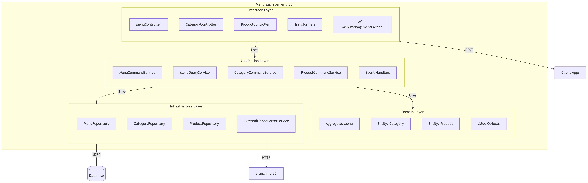
El Menu Management Bounded Context está compuesto por los siguientes módulos principales:
Application Layer:
Interface Layer:
Domain Layer:
Infrastructure Layer:
El diagrama de clases correspondiente a la Domain Layer del Menu Management Bounded Context incluye las clases principales, como agregados, entidades y objetos de valor, así como las interfaces y enumeraciones que definen el comportamiento del dominio.
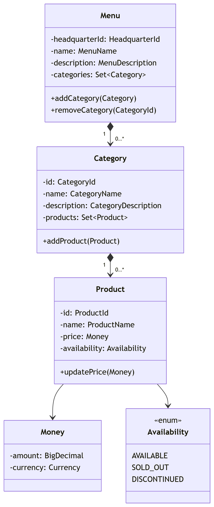
Elementos principales del diagrama:
Aggregates:
Menu: Agregado principal que encapsula la lógica de negocio relacionada con la gestión de menús.
headquarterId: ID de la sede a la que pertenece el menú.name: Nombre del menú.description: Descripción del menú.categories: Conjunto de categorías que componen el menú.addCategory(Category category): Agrega una nueva categoría al menú.removeCategory(CategoryId categoryId): Elimina una categoría del menú.updateName(MenuName name): Actualiza el nombre del menú.updateDescription(MenuDescription description): Actualiza la descripción del menú.Entities:
Category: Entidad que representa una categoría de productos dentro de un menú.
id: ID único de la categoría.name: Nombre de la categoría.description: Descripción de la categoría.products: Conjunto de productos que pertenecen a la categoría.addProduct(Product product): Agrega un nuevo producto a la categoría.removeProduct(ProductId productId): Elimina un producto de la categoría.updateName(CategoryName name): Actualiza el nombre de la categoría.updateDescription(CategoryDescription description): Actualiza la descripción de la categoría.Product: Entidad que representa un producto dentro de una categoría del menú.
id: ID único del producto.name: Nombre del producto.description: Descripción del producto.price: Precio del producto.imageUrl: URL de la imagen del producto.availability: Disponibilidad del producto.updateName(ProductName name): Actualiza el nombre del producto.updateDescription(ProductDescription description): Actualiza la descripción del producto.updatePrice(Money price): Actualiza el precio del producto.updateImageUrl(ImageUrl imageUrl): Actualiza la URL de la imagen del producto.updateAvailability(Availability availability): Actualiza la disponibilidad del producto.Value Objects:
HeadquarterId: Representa el identificador único de una sede.MenuName: Representa el nombre de un menú.MenuDescription: Representa la descripción de un menú.CategoryId: Representa el identificador único de una categoría.CategoryName: Representa el nombre de una categoría.CategoryDescription: Representa la descripción de una categoría.ProductId: Representa el identificador único de un producto.ProductName: Representa el nombre de un producto.ProductDescription: Representa la descripción de un producto.Money: Representa un importe monetario con una divisa.ImageUrl: Representa la URL de una imagen.Availability: Enumera los estados posibles de disponibilidad de un producto.El diseño de la base de datos para el Menu Management Bounded Context refleja la estructura del dominio, asegurando que las entidades y relaciones definidas en la Domain Layer se representen de manera eficiente en el modelo relacional.
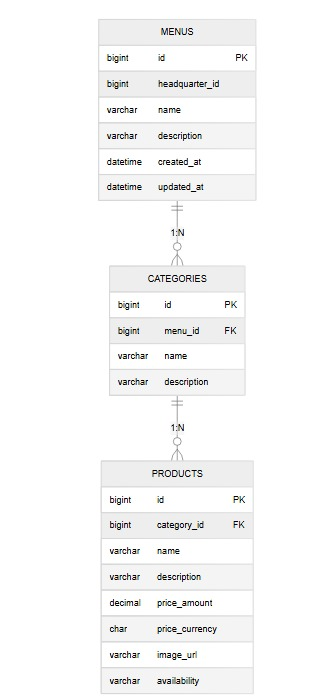
Este diseño incluye las siguientes tablas principales:
Menus:
id: Identificador único del menú.headquarter_id: Identificador de la sede a la que pertenece el menú.name: Nombre del menú.description: Descripción del menú.Categories:
id: Identificador único de la categoría.menu_id: Identificador del menú al que pertenece la categoría.name: Nombre de la categoría.description: Descripción de la categoría.Products:
id: Identificador único del producto.category_id: Identificador de la categoría a la que pertenece el producto.name: Nombre del producto.description: Descripción del producto.price_amount: Importe del precio del producto.price_currency: Divisa del precio del producto.image_url: URL de la imagen del producto.availability: Disponibilidad del producto (AVAILABLE, SOLD_OUT, DISCONTINUED).El IoT Monitoring Bounded Context es responsable de gestionar la interacción con los dispositivos IoT instalados en las cafeterías, como los sensores de peso en las sillas. Este contexto se encarga de recopilar, procesar e interpretar los datos enviados por estos dispositivos para determinar el estado de ocupación de las mesas en tiempo real. Además, proporciona mecanismos para la configuración y monitoreo de los dispositivos, asegurando su correcto funcionamiento y la precisión de los datos recopilados.
En esta sección definimos los principios visuales y de interacción que rigen toda la experiencia Tavolo, asegurando coherencia entre plataformas. Establecemos una identidad visual clara mediante el uso de paleta de colores, tipografía, iconografía, espaciado y tono comunicacional unificado.

Diseñamos interfaces web centradas en la claridad y eficiencia, priorizando la experiencia del usuario en pantallas grandes. Aplicamos estructuras responsivas, patrones de navegación consistentes y un uso óptimo del grid para garantizar accesibilidad y fluidez en entornos de escritorio.

Adaptamos la experiencia Tavolo a dispositivos móviles optimizando la usabilidad táctil, la jerarquía visual y la agilidad en la navegación. Nos enfocamos en gestos intuitivos, tiempos de carga mínimos y transiciones suaves entre pantallas, respetando las limitaciones y ventajas del entorno móvil.

Extendemos nuestros lineamientos a dispositivos IoT garantizando interfaces funcionales y simples. Diseñamos visuales claras y compactas, con códigos de color efectivos y elementos visuales que facilitan la comprensión.

Para Tavolo, hemos implementado sistemas de organización que facilitan la navegación y acceso a la información tanto para comensales como para administradores. Estos sistemas están diseñados para proporcionar una experiencia de usuario intuitiva y eficiente.

Organizamos la información en Tavolo siguiendo una estructura jerárquica clara:
Para comensales:
El proceso comienza en la Landing Page, donde los usuarios son redirigidos a la aplicación web o móvil según su preferencia. Una vez allí, los comensales pueden registrarse o iniciar sesión con sus credenciales, accediendo a un panel principal que les muestra información relevante como reservas activas, sedes disponibles y menús de productos, incluyendo opciones de café y sandwiches. Para realizar una reserva, los comensales seleccionan una sede, visualizan las mesas disponibles y completan un formulario con los detalles de su reserva, como fecha, hora y número de personas. Además, pueden ubicar la sede en un mapa integrado para mayor comodidad.
Para administradores:
Por otro lado, los administradores acceden a un panel de gestión después de iniciar sesión. Desde allí, pueden administrar las mesas de las sedes, agregando nuevas o eliminando las existentes mediante un formulario sencillo. También tienen acceso a información detallada de las sedes y pueden visualizar las reservas de diferentes maneras: por mesa, por persona o en una lista completa. Esto les permite mantener un control eficiente sobre las operaciones del establecimiento.
También implementamos una organización secuencial para procesos específicos:
Proceso de reserva:
Proceso de gestión de mesas:
Antes de implementar las etiquetas en nuestra plataforma, determinamos qué requisitos necesitamos cumplir. Las etiquetas nos permiten agregar información contextual a diferentes elementos de la plataforma Tavolo. A continuación, se detalla el sistema de etiquetado implementado:
| Etiqueta | Descripción |
|---|---|
| [DISPONIBLE] | Mesa que puede ser reservada en este momento |
| [OCUPADA] | Mesa actualmente en uso por comensales |
| Etiqueta | Descripción |
|---|---|
| [ACTIVA] | Reserva en curso (dentro del rango horario seleccionado) |
| Etiqueta | Descripción |
|---|---|
| [CAFÉ] | Bebidas de café |
| [REPOSTERÍA] | Pasteles, galletas y postres |
| [SANDWICH] | Opciones de sándwiches y bocadillos |
| Etiqueta | Descripción |
|---|---|
| [ÉXITO] | Confirmación de operación completada exitosamente |
| [ERROR] | Problema durante una operación |
Este sistema de etiquetas proporciona contexto visual inmediato y mejora la comprensión de la información presentada tanto para comensales como para administradores.
La implementación adecuada de etiquetas SEO es crucial para mejorar la visibilidad de Tavolo en los motores de búsqueda. A continuación, detallamos las principales etiquetas implementadas:
Indica el tema de la página, debe ser corto y descriptivo, manteniéndose entre 55-60 caracteres.
<title>Tavolo - Sistema de Gestión de Reservas y Ocupación para Cafeterías</title>
Breve descripción del propósito de la plataforma.
<meta name="description" content="Tavolo optimiza la experiencia en cafeterías con tecnología IoT, visualización en tiempo real de mesas disponibles y reservas digitales. ¡Mejora la experiencia de tus clientes!"/>
Indican a los motores de búsqueda qué hacer con la página.
<meta name="robots" content="index, follow">
Útil para que los motores de búsqueda identifiquen el idioma de la página.
<meta http-equiv="Content-Type" content="text/html; charset=UTF-8">
<meta http-equiv="Content-Language" content="es">
Crucial para asegurar que el contenido se vea bien en dispositivos móviles.
<meta name="viewport" content="width=device-width, initial-scale=1.0">
Para mejorar la apariencia cuando se comparte en redes sociales.
<meta property="og:title" content="Tavolo - Gestión Inteligente para Cafeterías">
<meta property="og:description" content="Sistema IoT para optimizar la ocupación de mesas en cafeterías">
<meta property="og:image" content="https://tavolo.com/images/tavolo-preview.jpg">
<meta property="og:url" content="https://tavolo.com">
<meta property="og:type" content="website">
Aunque tienen menor importancia actualmente, aún pueden ser útiles.
<meta name="keywords" content="reservas cafeterías, mesas disponibles, IoT cafeterías, gestión restaurantes, sistema reservas tiempo real, ocupación mesas">
El sistema de búsqueda propuesto para Tavolo permitirá a los usuarios encontrar fácilmente información relevante según sus necesidades específicas. Este sistema está diseñado para facilitar tanto a comensales como a administradores la localización de sedes, reservas y disponibilidad de mesas.
| Nombre del filtro | Descripción |
|---|---|
| Ubicación | El usuario podrá filtrar cafeterías por distrito o zona de la ciudad |
| Disponibilidad inmediata | Muestra sólo las cafeterías con mesas disponibles en el momento actual |
| Capacidad | Permite filtrar por mesas disponibles con capacidad específica (2, 4, 6 personas) |
| Horario de atención | Filtra por cafeterías abiertas en un rango horario específico |
| Distancia | Ordena los resultados desde la ubicación actual del usuario |
| Nombre del filtro | Descripción |
|---|---|
| Búsqueda por número de mesa | Permite encontrar rápidamente información de una mesa específica |
| Búsqueda por nombre de cliente | Localiza reservas realizadas por un cliente específico |
| Historial de reservas | Busca en el histórico de reservas completadas |
Este sistema de búsqueda está diseñado para ser intuitivo y proporcionar resultados precisos, mejorando así la experiencia del usuario y la eficiencia operativa de la plataforma Tavolo.
El sistema de navegación de la plataforma Tavolo guiará a los usuarios a través de las distintas secciones y pantallas, proporcionándoles acceso intuitivo a todas las funcionalidades. A continuación, se detallan los elementos que facilitan la navegación de los usuarios:
| Nombre | Descripción |
|---|---|
| Inicio | Página principal que muestra un resumen de la información relevante según el tipo de usuario |
| Perfil | Permite al usuario gestionar su información personal y preferencias |
| Nombre | Descripción |
|---|---|
| Explorar sedes | Muestra todas las cafeterías disponibles con información sobre su ubicación y disponibilidad |
| Mis reservas | Permite al usuario ver sus reservas activas y su historial de reservas anteriores |
| Ver menú | Acceso a los menús digitales de las diferentes cafeterías |
| Mapa | Visualización geográfica de las sedes en un mapa interactivo |
| Nombre | Descripción |
|---|---|
| Dashboard | Panel principal con indicadores clave sobre la operación de la sede |
| Gestión de mesas | Interfaz para agregar, eliminar o modificar mesas en la sede asignada |
| Reservas | Visualización y gestión de las reservas actuales y futuras |
Este sistema de navegación está diseñado para ser consistente, intuitivo y adaptable a diferentes dispositivos, asegurando que los usuarios puedan encontrar rápidamente la información o funcionalidad que necesitan sin esfuerzo excesivo.
En esta sección representamos una estructura funcional preliminar que organiza los principales bloques de contenido sin detalles visuales. Su objetivo es definir la jerarquía informativa y el flujo de navegación del usuario. Este diseño inicial se enfoca en la lógica y disposición del contenido, sin aplicar aún colores, imágenes o estilos gráficos.

Por otro lado, el mockup de la landing page de Tavolo muestra una versión visual refinada y casi final del diseño. Siguiendo el General Style Guidelines, respetamos la paleta de colores, la tipografía, etc. El contenido está organizado de manera clara y atractiva, destacando el valor principal de Tavolo: permitir a los usuarios monitorear el aforo en tiempo real y reservar su lugar en cafeterías de forma inteligente. Las secciones explican detalladamente cómo funciona la aplicación, sus beneficios para los usuarios y cafeterías, e incluyen botones de llamado a la acción, un tour virtual y un formulario de contacto. Este mockup transmite una experiencia profesional, acogedora y tecnológica.

Esta sección presenta los wireframes de la aplicación web y móvil de Tavolo, diseñados para los dos perfiles de usuario: Clientes de establecimiento y propietarios de cafeterías. Cada wireframe representa la estructura y jerarquía de los elementos antes de aplicar estilo visual o contenido final.
Los primeros wireframes son compartidos por ambos usuarios ya que nos referimos al inicio de sesión y registro, estos representan las pantallas de acceso al sistema, con formularios simples y enfocados en la usabilidad. Se prioriza una navegación rápida y accesible para usuarios recurrentes y nuevos:


Clientes
Muestra un resumen de reservas activas del cliente y acceso directo al menú del establecimiento. Está diseñada para brindar información clave de forma inmediata.


Organizado por categorías. La estructura está pensada para facilitar la exploración y eventual selección en el pedido.


Incluye selector de sede, visualización de mesas disponibles, horarios, y acceso a un mapa con la ubicación exacta de la cafetería. Se destaca la usabilidad móvil responsive y la claridad en la disponibilidad visual.


Propietarios
Resume información clave de cada sede: mesas activas y reservas por horario.


Visualiza todas las mesas registradas por sede, permite su eliminación o la adición de nuevas con datos como zona, capacidad e identificador único.


Incluye filtros para buscar reservas por mesa o por cliente, optimizando la gestión diaria del flujo de comensales.


Los diagramas de Wireflow desarrollados para Tavolo permiten visualizar de manera gráfica la transición entre pantallas dentro de la aplicación, integrando el diseño de la interfaz con el flujo de navegación esperado. Estos flujos representan acciones comunes tanto para el cliente como para el propietario, facilitando el análisis de usabilidad y asegurando la coherencia del diseño:


Versión Web
La pantalla de inicio de sesión y registro son similares para ambos segmentos, allí el cliente o propietario ingresa sus credenciales para acceder al sistema o por el otro lado, puede llenar un formulario de creación de cuenta para nuevos usuarios, con campos de correo y contraseña.


Cliente


Propietario


Versión Móvil
La pantalla de inicio de sesión y registro son similares para ambos segmentos, allí el cliente o propietario ingresa sus credenciales para acceder al sistema o por el otro lado, puede llenar un formulario de creación de cuenta para nuevos usuarios, con campos de correo y contraseña.


Cliente


Propietario


Los diagramas de flujo de usuario permiten entender cómo los usuarios interactúan con la aplicación desde una perspectiva lógica, no visual. Estos diagramas incluyen decisiones condicionales, caminos alternativos y respuestas del sistema según la acción realizada por el usuario.


Web application prototyping

Video explicación:
https://drive.google.com/file/d/1FppOgE1BkcIITFJZ26mgpkJoDlqalVaq/view?usp=sharing

Video explicación:
https://drive.google.com/file/d/1kcd_FJJk4l8dhdRntgm0UZbYrUqKcuO6/view?usp=drive_link
Mobile application prototyping
Video explicación:
https://drive.google.com/file/d/1H52_e9udVbAItnnXDAsrhZpsWwABIuJw/view?usp=drive_link
Project Management:


Requirements Management:


Product UX/UI Design:


Software Development:


Software Documentation:

Para garantizar la eficiencia y evitar conflictos en el desarrollo de soluciones, los proyectos de Tavolo se gestionaron en una organización de GitHub. Dentro de esta organización, se encuentran los repositorios correspondientes a cada proyecto. Aquí están los enlaces a los repositorios:
Landing page: https://github.com/upc-pre-202510-1asi0572-2952-tavolo/tavolo-landing-page
Report: https://github.com/upc-pre-202510-1asi0572-2952-tavolo/tavolo-report
Web: https://github.com/upc-pre-202510-1asi0572-2952-tavolo/tavolo-web
Backend: https://github.com/upc-pre-202510-1asi0572-2952-tavolo/tavolo-backend
En cuanto al manejo del Gitflow, fue de la siguiente forma:
En el desarrollo de Tavolo, cada cambio que se realizó en los archivos se marcó con un mensaje con el formato “Conventional Commits”. Esta práctica facilitó la identificación de los cambios realizados en cada commit, permitió un seguimiento más eficiente del proyecto. Además, este modelo incluye la rama develop y main, que contuvo las versiones finales y estables del proyecto. Para mantener una organización clara del proyecto, se creó una rama específica para cada integrante del equipo. Esto permitió un seguimiento más detallado y una mejor organización del código.
Nuestro equipo adoptó las siguientes convenciones y guías de estilo para garantizar un código fuente coherente, legible y mantenible en los diferentes lenguajes y tecnologías utilizados en nuestra solución
HTML:
Para el lenguaje HTML, nos planteamos utilizar las convenciones descritas en la guía “HTML Style Guide and Coding Conventions”:
CSS:
Para el lenguaje CSS, utilizaremos las siguientes prácticas para alcanzar un código coherente, sostenible y ordenado:
JavaScript:
Para el lenguaje JavaScript, seguimos las siguientes prácticas para escribir un código legible, eficiente y mantenible:
Vue.js:
En el desarrollo frontend con Vue.js, seguimos las recomendaciones oficiales del Vue Style Guide:
Java:
En la capa backend desarrollada con Java, seguimos las convenciones propuestas por la Guía oficial de estilo de Java de Oracle:
El despliegue del sistema Tavolo se realizará utilizando Microsoft Azure, una plataforma en la nube confiable y escalable que permite alojar tanto la aplicación web como la base de datos de forma segura y eficiente. A continuación, se detallan los pasos principales del proceso de despliegue:
En esta sección se documenta el proceso completo de implementación, validación y despliegue de las diversas soluciones tecnológicas que conforman Tavolo. Partiendo del Product Backlog establecido, cada sprint representa una iteración enfocada en entregar incrementos funcionales del producto, demostrando así el avance progresivo en el desarrollo de la solución.
La implementación de Tavolo comprende múltiples componentes interconectados:
El desarrollo incremental se estructuró en sprints, cada uno con objetivos específicos y entregables definidos. Para cada sprint se documentan las siguientes etapas:
A lo largo de este capítulo, se presenta una visión transparente del proceso iterativo que llevó a la materialización de Tavolo como una solución funcional.
| Sprint #1 | Sprint 1 |
|---|---|
| Sprint Planning Background | |
| Date | 9/5/2025 |
| Time | 11:00 am |
| Location | REunion virtual vía Discord |
| Prepared By | Jimena Cama |
| Attendees (to planning meeting) | - Baldeon Fabian, Aldo Alberto - Cama Salvatierra, Jimena Tamara - Castillo Castillo, Jair Alexander - La Torre Valle, Franz Jair - Quezada Portalatino, Barbara Susana |
| Sprint Goal & User Stories | |
| Sprint 1 Goal | En este sprint la meta a cumplir fue desarrollar el backend de la plataforma, la aplicación web funcional y la landing page. |
| Sprint 1 Velocity | 17 |
| Sum of Story Points | 81 |
Para lograr una implementación eficiente del Sprint 1, se estableció una estructura clara de liderazgo y colaboración entre los miembros del equipo. Se identificaron cinco aspectos principales que abarcaron el alcance completo del sprint: Frontend Web Cliente, Frontend Web Administrador, Backend API, Testing & Documentación, y Landing Page. Esta organización permitió asegurar que cada área tuviera un responsable directo y colaboradores que apoyaron en tareas específicas.
La matriz de liderazgo y colaboración (LACX) detalla cómo se distribuyeron las responsabilidades para cada aspecto del sprint:
| Team Member (Last Name, First Name) |
GitHub Username | Frontend Web Cliente Leader (L) / Collaborator (C) |
Frontend Web Administrador Leader (L) / Collaborator (C) |
Backend API Leader (L) / Collaborator (C) |
Testing & Documentación Leader (L) / Collaborator (C) |
Landing Page Leader (L) / Collaborator (C) |
|---|---|---|---|---|---|---|
| Baldeon Fabian, Aldo Alberto | CodAress | L | C | C | ||
| Cama Salvatierra, Jimena Tamara | aksonie | L | C | C | ||
| Castillo Castillo, Jair Alexander | U202211390 | C | C | L | ||
| La Torre Valle, Franz Jair | FranzJairLTV | C | C | L | ||
| Quezada Portalatino, Barbara Susana | BarbaraQP15 | C | L | C |
Responsabilidades por aspecto:
Frontend Web Cliente:
Frontend Web Administrador:
Backend API:
Testing & Documentación:
Landing Page:
Esta organización permitió una clara asignación de responsabilidades, facilitó la comunicación entre subequipos y aseguró que todas las áreas del sprint contaran con el enfoque adecuado. Los líderes de cada aspecto coordinaron con sus colaboradores para definir tareas específicas y garantizar el cumplimiento de los criterios de aceptación de cada historia de usuario asignada.
| Sprint # | Sprint 1 | ||||||
|---|---|---|---|---|---|---|---|
| User Story | Work-Item/Task | ||||||
| Id | Title | Id | Title | Description | Estimation (Hours) | Assigned To | Status |
| US001 | Ver sección "¿Qué es Tavolo?" | TA1 | Crear componente informativo | Diseñar y codificar el componente de la sección “¿Qué es Tavolo?” | 1 | Quezada Portalatino, Barbara Susana | Done |
| TA2 | Integrar contenido e imágenes | Subir textos e imágenes proporcionados al frontend | 1 | Quezada Portalatino, Barbara Susana | Done | ||
| US002 | Ver sección "Características clave" | TA1 | Crear layout de características | Maquetar y estilizar la sección de características | 1 | Quezada Portalatino, Barbara Susana | Done |
| TA2 | Implementar íconos e interactividad | Asociar íconos representativos a cada característica con animaciones | 1 | Quezada Portalatino, Barbara Susana | Done | ||
| US003 | Ver la galería virtual | TA1 | Crear carrusel de imágenes | Implementar galería interactiva con carrusel | 1 | Cama Salvatierra, Jimena Tamara | Done |
| TA2 | Integrar imágenes reales de sedes | Subir imágenes y validar visualización responsive | 1 | Cama Salvatierra, Jimena Tamara | Done | ||
| US004 | Usar el formulario de contacto | TA1 | Diseñar formulario | Maquetar campos necesarios y validaciones | 1 | Quezada Portalatino, Barbara Susana | Done |
| TA2 | Configurar envío de datos | Configurar envío POST con mensajes de confirmación | 2 | Quezada Portalatino, Barbara Susana | Done | ||
| US005 | Ver menú digital de una sede | TA1 | Crear vista para menú por sede | Diseñar vista filtrada por sede seleccionada | 2 | La Torre Valle, Franz Jair | Done |
| TA2 | Mostrar platos con categorías | Agregar cards por categoría con imagen, nombre y precio | 2 | La Torre Valle, Franz Jair | Done | ||
| US006 | Visualizar reserva activa | TA1 | Crear vista de reservas activas | Mostrar reserva activa del usuario al iniciar sesión | 2 | La Torre Valle, Franz Jair | Done |
| TA2 | Agregar detalles de la reserva | Visualizar sede, horario, cantidad de personas y estado | 2 | La Torre Valle, Franz Jair | Done | ||
| US007 | Ver disponibilidad de mesas en tiempo real | TA1 | Integrar disponibilidad con backend | Mostrar mesas libres en tiempo real según sede y horario | 4 | Baldeon Fabian, Aldo Alberto | Done |
| TA2 | Mostrar visualmente mesas ocupadas/libres | Agregar colores o íconos para representar disponibilidad | 1 | Baldeon Fabian, Aldo Alberto | Done | ||
| US008 | Reservar una mesa | TA1 | Crear formulario de reserva | Formulario con sede, fecha, hora y cantidad de personas | 1 | Quezada Portalatino, Barbara Susana | Done |
| TA2 | Enviar reserva al backend | Conexión con API para guardar reserva y mostrar confirmación | 1/2 | Quezada Portalatino, Barbara Susana | Done | ||
| US010 | Registro de cuenta de comensal | TA1 | Maquetar formulario de registro | Campos: nombre, correo, contraseña | 1 | Baldeon Fabian, Aldo Alberto | Done |
| TA2 | Validar datos e integrarlo con backend | Validar datos y enviar a API para crear cuenta | 1 | Baldeon Fabian, Aldo Alberto | Done | ||
| US011 | Inicio de sesión de cuenta de comensal | TA1 | Diseñar pantalla de login | Formulario de ingreso con validación | 2 | Baldeon Fabian, Aldo Alberto | Done |
| TA2 | Manejo de sesión y redirección | Guardar token en localStorage y redirigir según rol | 2 | Baldeon Fabian, Aldo Alberto | Done | ||
| US012 | Agregar nuevas mesas | TA1 | Diseñar formulario de creación | Formulario para admins para añadir mesas | 2 | Castillo Castillo, Jair Alexander | Done |
| TA2 | Enviar datos a backend | Validar y enviar datos de la nueva mesa al servidor | 2 | Castillo Castillo, Jair Alexander | Done | ||
| US013 | Visualizar reservas realizadas | TA1 | Listar reservas del comensal | Mostrar historial con fechas y estados | 2 | Cama Salvatierra, Jimena Tamara | Done |
| TA2 | Agregar opciones de filtro por fecha/estado | Filtros por mes o estado (activa, cancelada, completada) | 1 | Cama Salvatierra, Jimena Tamara | Done | ||
| US014 | Ver la sede asignada | TA1 | Mostrar sede asignada en perfil | Mostrar sede que administra el usuario (admin) | 1/2 | Cama Salvatierra, Jimena Tamara | Done |
| TA2 | Obtener sede desde el backend | Lógica para obtener sede del usuario y mostrarla | 1/2 | Cama Salvatierra, Jimena Tamara | Done | ||
| US015 | Eliminar mesas | TA1 | Crear botón de eliminación | Agregar ícono de papelera para eliminar mesa | 1 | Castillo Castillo, Jair Alexander | Done |
| TA2 | Confirmar y eliminar en backend | Confirmación con modal y eliminación en API | 1 | Castillo Castillo, Jair Alexander | Done | ||
| US016 | Inicio de sesión de administrador | TA1 | Crear vista de login para admins | Vista distinta a la de comensales, con validación | 2 | Baldeon Fabian, Aldo Alberto | Done |
| TA2 | Asignar token y redirigir a dashboard | Lógica de inicio de sesión y navegación hacia panel | 1 | Baldeon Fabian, Aldo Alberto | Done | ||
| US017 | Registro de cuenta de administrador | TA1 | Crear formulario con rol "admin" | Campos de registro con rol predefinido como admin | 1 | Baldeon Fabian, Aldo Alberto | Done |
| TA2 | Validar correo corporativo | Validación de correo institucional para asegurar rol | 2 | Baldeon Fabian, Aldo Alberto | Done | ||
| US018 | Acceder a todos los módulos del sistema | TA1 | Mostrar menú de navegación | Menú para navegación entre módulos: reservas, mesas, reportes | 2 | La Torre Valle, Franz Jair | Done |
| TA2 | Proteger rutas con roles | Validar acceso solo para administradores | 2 | La Torre Valle, Franz Jair | Done |
En este primer sprint, el equipo ha logrado importantes avances en la implementación de los componentes esenciales de Tavolo. Se ha desarrollado con éxito la landing page, el frontend web para comensales y administradores, así como el backend API que soporta las funcionalidades principales del sistema.
Entre los logros destacables se encuentran:
A continuación, se presenta una tabla detallada de los commits más relevantes realizados en los diferentes repositorios durante el Sprint 1:
| Repository | Branch | Commit Id | Commit Message | Commit Message Body | Commited on (Date) |
|---|---|---|---|---|---|
| https://github.com/upc-pre-202510-1asi0572-2952-tavolo/tavolo-landing-page | main | a72e3b4 | feat: add landing page | Creación de estructura HTML base y estilos CSS para la landing page con las secciones principales | 10/05/2025 |
| https://github.com/upc-pre-202510-1asi0572-2952-tavolo/tavolo-web | feature/auth | e23a9c1 | feat: sistema de autenticación | Implementación del login y registro para usuarios comensales y administradores con manejo de tokens y sesiones | 10/05/2025 |
| https://github.com/upc-pre-202510-1asi0572-2952-tavolo/tavolo-web | feature/client-dashboard | f84b6d2 | feat: dashboard de comensal | Creación del panel principal para comensales con visualización de disponibilidad de mesas y menú | 12/05/2025 |
| https://github.com/upc-pre-202510-1asi0572-2952-tavolo/tavolo-web | feature/booking-system | g59c7e3 | feat: sistema de reservas | Implementación del formulario de reserva y visualización de reservas activas para comensales | 13/05/2025 |
| https://github.com/upc-pre-202510-1asi0572-2952-tavolo/tavolo-web | feature/admin-panel | h31d8f4 | feat: panel de administrador | Desarrollo del dashboard para administradores con funcionalidades de gestión de mesas y visualización de sede asignada | 14/05/2025 |
| https://github.com/upc-pre-202510-1asi0572-2952-tavolo/tavolo-web | feature/table-management | i76e2a9 | feat: gestión de mesas | Implementación de funcionalidades para agregar y eliminar mesas desde el panel de administrador | 15/05/2025 |
| https://github.com/upc-pre-202510-1asi0572-2952-tavolo/tavolo-backend | feature/api-base | j42f1e5 | feat: estructura base de la API | Configuración inicial del proyecto Spring Boot con dependencias y estructura de paquetes | 10/05/2025 |
| https://github.com/upc-pre-202510-1asi0572-2952-tavolo/tavolo-backend | feature/auth-endpoints | k93g7h2 | feat: endpoints de autenticación | Implementación de servicios REST para registro e inicio de sesión con roles diferenciados | 11/05/2025 |
| https://github.com/upc-pre-202510-1asi0572-2952-tavolo/tavolo-backend | feature/table-endpoints | l28j5k6 | feat: endpoints para gestión de mesas | Desarrollo de servicios REST para crear, eliminar y consultar estado de mesas | 13/05/2025 |
| https://github.com/upc-pre-202510-1asi0572-2952-tavolo/tavolo-backend | feature/booking-endpoints | m67n4p9 | feat: endpoints para reservas | Implementación de servicios REST para realizar reservas y consultar reservas activas | 14/05/2025 |
| https://github.com/upc-pre-202510-1asi0572-2952-tavolo/tavolo-backend | feature/sede-endpoints | o15r3s8 | feat: endpoints para sedes | Desarrollo de servicios REST para consultar información de sedes y asignación a administradores | 15/05/2025 |
En esta sección se presenta el conjunto de Unit Tests, Integration Tests y Acceptance Tests automatizados para los Web Services relacionados con los User Stories especificados en el Sprint.
| Repository | Branch | Commit Id | Commit Message | Commit Message Body | Committed on (Date) |
|---|---|---|---|---|---|
| tavolo-backend | feature/unit-tests | abc123 | Add unit tests for reservation service | Implemented tests for create, update and delete methods | 2023-10-15 |
| tavolo-backend | feature/integration-tests | def456 | Add integration tests for reservation API | Testing the complete flow of reservation endpoints | 2023-10-16 |
| tavolo-backend | feature/bdd-tests | ghi789 | Add BDD tests for reservation feature | Added Cucumber tests with Gherkin scenarios for reservation management | 2023-10-18 |
Esta clase contiene pruebas unitarias para validar el comportamiento del servicio TableCommandService, responsable de gestionar las operaciones relacionadas con la creación de mesas en el sistema.
Este test unitario valida:
Esta clase de prueba integra los distintos componentes del sistema para validar el flujo completo de creación de mesas:
Esta prueba de integración verifica:
Feature: Autenticación de usuarios
Scenario: Registro exitoso de un nuevo usuario
Given el usuario proporciona datos válidos para registro
When se envía la solicitud de registro
Then el sistema crea el usuario y devuelve un estado 201
Scenario: Fallo en el registro por datos inválidos
Given el usuario proporciona datos inválidos
When se envía la solicitud de registro
Then el sistema devuelve un error de validación
En este primer sprint, el equipo Tavolo ha logrado implementar con éxito los componentes fundamentales del sistema, creando una base sólida para el desarrollo futuro del proyecto. Se han completado todas las historias de usuario planificadas de la parte web, alcanzando las principales funcionalidades tanto para comensales como para administradores.


El video muestra el flujo completo desde la landing page hasta las funcionalidades de reserva para comensales y gestión para administradores, demostrando la integración exitosa de todos los componentes desarrollados durante este sprint.
Video Demostración Sprint 1 - Tavolo
El equipo ha completado el 100% de las historias de usuario planificadas para este sprint, cumpliendo con los criterios de aceptación establecidos. La aplicación es funcional en su estado actual y proporciona las funcionalidades básicas necesarias para la gestión de mesas y reservas. En los próximos sprints se agregarán características adicionales como notificaciones, reportes estadísticos y la integración completa con los sensores IoT físicos.
Durante el Sprint 1, el equipo ha logrado documentar completamente los endpoints de la API de Tavolo utilizando Swagger. Esta documentación proporciona una referencia clara y accesible para desarrolladores frontend, facilitando la integración con los servicios backend.
| Categoría | Endpoint | Método HTTP | Descripción |
|---|---|---|---|
| Autenticación | /api/v1/authentication/sign-up |
POST | Registrar nuevo usuario |
| Autenticación | /api/v1/authentication/sign-in |
POST | Iniciar sesión de usuario |
| Reservas | /api/v1/bookings |
GET | Listar todas las reservas |
| Reservas | /api/v1/bookings |
POST | Crear nueva reserva |
| Reservas | /api/v1/bookings/{id} |
GET | Obtener detalles de reserva específica |
| Reservas | /api/v1/bookings/client/{clientId} |
GET | Obtener reservas de un cliente específico |
| Sedes | /api/v1/headquarters |
GET | Listar todas las sedes |
| Sedes | /api/v1/headquarters |
POST | Crear nueva sede |
| Sedes | /api/v1/headquarters/{headquarterId} |
GET | Obtener detalles de sede específica |
| Roles | /api/v1/roles |
GET | Listar todos los roles |
| Usuarios | /api/v1/users |
GET | Listar todos los usuarios |
| Usuarios | /api/v1/users/{userId} |
GET | Obtener detalles de usuario específico |
| Mesas | /api/v1/tables |
GET | Listar todas las mesas |
| Mesas | /api/v1/tables |
POST | Crear nueva mesa |
| Mesas | /api/v1/tables/{tableId} |
GET | Obtener detalles de mesa específica |
| Mesas | /api/v1/tables/{tableId}/schedule |
GET | Obtener horario de una mesa específica |
Para verificar la funcionalidad de la API, se realizaron pruebas exhaustivas utilizando la interfaz Swagger. A continuación se muestran algunos ejemplos de estas pruebas:
Ejecución exitosa de la autenticación de un administrador
Resultado de la creacion de sedes
Resultado exitoso de la creación de una mesa
Repositorio: https://github.com/upc-pre-202510-1asi0572-2952-tavolo/tavolo-backend
| Commit ID | Descripción | Autor | Fecha |
|---|---|---|---|
| c739042 | feat(booking): implementar endpoint para consultar reservas por ID | Baldeon Fabian, Aldo Alberto | 07/05/2025 |
| l28j5k6 | feat(iam): implement user authentication and registration system | Castillo Castillo, Jair Alexander | 11/05/2025 |
| m67n4p9 | feat: feat(booking,branching): implement reservation system with branch management | Baldeon Fabian, Aldo Alberto | 11/05/2025 |
| o15r3s8 | feature(iam): add bounded context iam | Castillo Castillo, Jair Alexander | 12/05/2025 |
| p45t7u9 | feature(shared): add add bounded context shared | Castillo Castillo, Jair Alexander | 12/05/2025 |
Durante este primer sprint, el equipo Tavolo ha implementado una estrategia de despliegue completa para asegurar que todos los componentes del sistema estén disponibles en entornos de producción. Se ha desplegado exitosamente la landing page, el backend API y la aplicación web frontend, utilizando servicios en la nube para garantizar disponibilidad, escalabilidad y seguridad.
La landing page de Tavolo fue desplegada utilizando GitHub Pages, aprovechando la integración directa con nuestro repositorio para un flujo de trabajo simplificado y automático.
URL: https://upc-pre-202510-1asi0572-2952-tavolo.github.io/tavolo-landing-page/


La API de Tavolo fue desplegada por ahora de manera local, se ha probado todas las funcionalidades de la plataforma de manera existosa.


La aplicación web de Tavolo se preparó para ser desplegada en Firebase Hosting, que ofrece una plataforma eficiente para aplicaciones React con rápidos tiempos de carga y distribución global. Sin embargo, por ahora se maneja de manera local


Durante el Sprint 1, el equipo Tavolo demostró una colaboración efectiva y coordinada, permitiendo el cumplimiento exitoso de todas las historias de usuario planificadas. A continuación, se detallan los aspectos clave de la dinámica colaborativa del equipo:
El análisis de las contribuciones muestra una distribución equilibrada de responsabilidades:
| Miembro del equipo | Áreas principales | Contribuciones clave | Pull requests | Issues closed |
|---|---|---|---|---|
| Baldeon Fabian, Aldo | Backend API, Frontend (Cliente), Testing | Sistema de autenticación, visualización de disponibilidad de mesas, endpoints de reservas | 8 | 7 |
| Cama Salvatierra, Jimena | Frontend (Administrador), Frontend (Cliente) | Panel administrativo, visualización de sede asignada, visualización de reservas | 6 | 6 |
| Castillo Castillo, Jair | Backend API, Testing | Endpoints de mesas y autenticación, pruebas unitarias, documentación API | 7 | 6 |
| La Torre Valle, Franz | Frontend (Cliente), Frontend (Administrador) | Menú digital, reserva activa, módulos de navegación, protección de rutas | 6 | 5 |
| Quezada Portalatino, Barbara | Frontend (Cliente), Landing Page | Sistema de reservas, landing page completa, formulario de contacto | 7 | 6 |
El equipo adoptó un enfoque ágil con las siguientes prácticas:
Desafío: Integración entre frontend y backend en desarrollo paralelo.
Solución: Definición temprana de contratos de API con Swagger y uso de datos mockeados para pruebas.
Desafío: Coordinación del trabajo entre múltiples colaboradores en los componentes frontend.
Solución: División clara de responsabilidades y uso de ramas de características específicas.
Este Sprint 1 ha establecido una base sólida para la colaboración continua del equipo Tavolo. La distribución equilibrada del trabajo, el liderazgo compartido y el enfoque en la calidad han permitido entregar todas las funcionalidades planificadas cumpliendo con los criterios de aceptación establecidos.
| Sprint #2 | Sprint 2 |
|---|---|
| Sprint Planning Background | |
| Date | 10/6/2025 |
| Time | 5:00 pm |
| Location | Reunión virtual vía Discord |
| Prepared By | Jimena Cama |
| Attendees (to planning meeting) | - Baldeon Fabian, Aldo Alberto - Cama Salvatierra, Jimena Tamara - Castillo Castillo, Jair Alexander - La Torre Valle, Franz Jair - Quezada Portalatino, Barbara Susana |
| Sprint Goal & User Stories | |
| Sprint 2 Goal | En este sprint la meta a cumplir fue desarrollar el backend de la plataforma, la aplicación web funcional y la landing page. |
| Sprint 2 Velocity | 15 |
| Sum of Story Points |
Para lograr una implementación eficiente del Sprint 2, se estableció una estructura clara de liderazgo y colaboración entre los miembros del equipo. Se identificaron cinco aspectos principales que abarcaron el alcance completo del sprint: Frontend Web Superadministrador, Frontend Movil Cliente, Embedded aplication y el Edge. Esta organización permitió asegurar que cada área tuviera un responsable directo y colaboradores que apoyaron en tareas específicas.
La matriz de liderazgo y colaboración (LACX) detalla cómo se distribuyeron las responsabilidades para cada aspecto del sprint:
| Team Member | GitHub Username | Frontend Web Superadministrador Leader (L) / Collaborator (C) |
Frontend Móvil Cliente Leader (L) / Collaborator (C) |
Embedded Application Leader (L) / Collaborator (C) |
Edge Leader (L) / Collaborator (C) |
|---|---|---|---|---|---|
| Baldeon Fabian, Aldo Alberto | CodAress | C | L | L | |
| Cama Salvatierra, Jimena Tamara | aksonie | L | C | C | C |
| Castillo Castillo, Jair Alexander | U202211390 | C | C | C | |
| La Torre Valle, Franz Jair | FranzJairLTV | C | C | C | |
| Quezada Portalatino, Barbara Susana | BarbaraQP15 | L | C | C |
Responsabilidades por aspecto:
Líder: Cama Salvatierra, Jimena Tamara
Enfoque: Desarrollo del dashboard para la gestión y administración del sistema desde el perfil superadministrador.
Tareas principales: Implementación de interfaces para la supervisión general, manejo de usuarios y configuraciones avanzadas.
Líder: Baldeon Fabian, Aldo Alberto
Enfoque: Implementación de la app móvil para clientes, incluyendo filtros de mesas, reservas, formularios de reserva y menús.
Tareas principales: Desarrollo de pantallas para búsqueda de mesas, detalle de sedes, formulario de reservas y navegación en la app.
Colaboradores: Cama Salvatierra, Jimena Tamara; Castillo Castillo, Jair Alexander; La Torre Valle, Franz Jair; Quezada Portalatino, Barbara Susana.
Líder: Baldeon Fabian, Aldo Alberto
Enfoque: Desarrollo del sistema embebido que interactúa con el entorno físico y la aplicación móvil/web.
Tareas principales: Implementación de lógica para dispositivos integrados, comunicación con backend y manejo de eventos en tiempo real.
Colaboradores: Cama Salvatierra, Jimena Tamara; Castillo Castillo, Jair Alexander; La Torre Valle, Franz Jair; Quezada Portalatino, Barbara Susana.
Líder: Baldeon Fabian, Aldo Alberto
Enfoque: Soporte y tareas específicas relacionadas con el procesamiento en borde (edge computing) para optimización y rapidez.
Tareas principales: Implementación de funcionalidades de procesamiento local y sincronización con la nube.
Colaboradores: Cama Salvatierra, Jimena Tamara; Castillo Castillo, Jair Alexander; La Torre Valle, Franz Jair; Quezada Portalatino, Barbara Susana.
| Sprint # | Sprint 2 | ||||||
| User Story | Work-Item / Task | ||||||
| Id | Title | Id | Title | Description | Estimation (Hours) | Assigned to | Status (To do / In process / To review / Done) |
| US001 | Ver sección "¿Qué es Tavolo?" | TA1 | Crear componente móvil informativo | Mostrar texto informativo desde app Flutter | 2 | Quezada Portalatino, Barbara | Done |
| TA2 | Cargar contenido desde API | Conectar con backend para cargar descripción | 2 | Quezada Portalatino, Barbara | Done | ||
| US002 | Ver sección "Características clave" | TA1 | Mostrar características en app | Lista con íconos y descripciones desde backend | 3 | Quezada Portalatino, Barbara | Done |
| TA2 | Agregar navegación a cada módulo | Botones que redirigen a pantallas relevantes | 2 | Quezada Portalatino, Barbara | Done | ||
| US003 | Ver la galería virtual | TA1 | Implementar galería en Flutter | Carrusel de imágenes de sedes desde API | 3 | Cama Salvatierra, Jimena | Done |
| TA2 | Optimizar carga desde backend | Endpoint optimizado para envío de imágenes | 2 | Baldeon Fabian, Aldo | Done | ||
| US005 | Ver menú digital de una sede | TA1 | Diseñar pantalla mobile del menú | Mostrar platos por categoría en Flutter | 2 | La Torre Valle, Franz | Done |
| TA2 | Optimizar endpoint de menú | Agregar filtros por sede y categoría | 2 | Baldeon Fabian, Aldo | Done | ||
| US006 | Visualizar reserva activa | TA1 | Mostrar reserva al iniciar en app | Leer reserva desde backend y mostrar detalles | 3 | La Torre Valle, Franz | Done |
| TA2 | Conexión en tiempo real (polling) | Verificar estado activo periódicamente | 2 | Baldeon Fabian, Aldo | Done | ||
| US007 | Ver disponibilidad de mesas en tiempo real | TA1 | Integración con microcontrolador | Recepción en backend de estados vía MQTT | 4 | Castillo Castillo, Jair | Done |
| TA2 | Visualización embebida en app Flutter | Mostrar íconos de disponibilidad en pantalla | 3 | Castillo Castillo, Jair | Done | ||
| US008 | Reservar una mesa | TA1 | Diseñar formulario en Flutter | Interfaz para elegir sede, fecha y personas | 2 | Quezada Portalatino, Barbara | Done |
| TA2 | Conectar con backend para crear reserva | POST a API y confirmación visual | 2 | La Torre Valle, Franz | Done | ||
| US009 | Visualizar más sedes en un mapa | TA1 | Crear vista de sedes en app móvil | Mostrar lista de sedes disponibles con nombre y dirección | 3 | Quezada Portalatino, Barbara | Done |
| TA2 | Implementar mapa interactivo | Al presionar "Ver en mapa", abrir modal con ubicación vía API de mapas | 3 | Quezada Portalatino, Barbara | Done | ||
| TA3 | Conectar con backend para obtener sedes | Endpoint que devuelva lista actualizada de sedes activas | 2 | Baldeon Fabian, Aldo | Done | ||
| US010 | Registro de cuenta de comensal | TA1 | Vista de registro en app móvil | Campos y validaciones en Flutter | 2 | Baldeon Fabian, Aldo | Done |
| TA2 | Validar datos desde backend | Evitar duplicidad y errores comunes | 2 | Castillo Castillo, Jair | Done | ||
| US011 | Inicio de sesión de cuenta de comensal | TA1 | Implementar login móvil | Lógica y guardado de token local | 3 | Castillo Castillo, Jair | Done |
| TA2 | Validar credenciales en backend | Envío seguro de usuario y password | 3 | Baldeon Fabian, Aldo | Done | ||
| US013 | Visualizar reservas realizadas | TA1 | Lista de historial de reservas | Mostrar reservas pasadas en app | 3 | Cama Salvatierra, Jimena | Done |
| TA2 | Agregar filtros por estado y fecha | Dropdowns y chips para filtrar | 2 | Cama Salvatierra, Jimena | Done | ||
| US014 | Ver la sede asignada | TA1 | Mostrar sede en perfil móvil | Vista en Flutter para administradores | 2 | Cama Salvatierra, Jimena | Done |
| TA2 | Obtener sede desde backend | Consulta protegida según token | 2 | Cama Salvatierra, Jimena | Done | ||
| US018 | Acceder a todos los módulos del sistema | TA1 | Menú de navegación en app móvil | Drawer o barra inferior para navegar entre módulos | 2 | La Torre Valle, Franz | Done |
| TA2 | Control de accesos desde backend | Middleware según roles y permisos | 3 | La Torre Valle, Franz | Done | ||
En este segundo sprint, el equipo ha logrado importantes avances en la implementación de los componentes esenciales de Tavolo. Se ha desarrollado con éxito la landing page, el frontend web para comensales, el mobile app y administradores, así como el backend API que soporta las funcionalidades principales del sistema.
Entre los logros destacables se encuentran:
A continuación, se presenta una tabla detallada de los commits más relevantes realizados en los diferentes repositorios durante el Sprint 2:
| Repository | Branch | Commit Id | Commit Message | Commit Message Body | Commited on (Date) |
|---|---|---|---|---|---|
| https://github.com/upc-pre-202510-1asi0572-2952-tavolo/tavolo-landing-page | main | a72e3b4 | feat: add landing page | Creación de estructura HTML base y estilos CSS para la landing page con las secciones principales | 10/05/2025 |
| https://github.com/upc-pre-202510-1asi0572-2952-tavolo/tavolo-web | feature/auth | e23a9c1 | feat: sistema de autenticación | Implementación del login y registro para usuarios comensales y administradores con manejo de tokens y sesiones | 10/05/2025 |
| https://github.com/upc-pre-202510-1asi0572-2952-tavolo/tavolo-web | feature/client-dashboard | f84b6d2 | feat: dashboard de comensal | Creación del panel principal para comensales con visualización de disponibilidad de mesas y menú | 12/05/2025 |
| https://github.com/upc-pre-202510-1asi0572-2952-tavolo/tavolo-web | feature/booking-system | g59c7e3 | feat: sistema de reservas | Implementación del formulario de reserva y visualización de reservas activas para comensales | 13/05/2025 |
| https://github.com/upc-pre-202510-1asi0572-2952-tavolo/tavolo-web | feature/admin-panel | h31d8f4 | feat: panel de administrador | Desarrollo del dashboard para administradores con funcionalidades de gestión de mesas y visualización de sede asignada | 14/05/2025 |
| https://github.com/upc-pre-202510-1asi0572-2952-tavolo/tavolo-web | feature/table-management | i76e2a9 | feat: gestión de mesas | Implementación de funcionalidades para agregar y eliminar mesas desde el panel de administrador | 15/05/2025 |
| https://github.com/upc-pre-202510-1asi0572-2952-tavolo/tavolo-backend | feature/api-base | j42f1e5 | feat: estructura base de la API | Configuración inicial del proyecto Spring Boot con dependencias y estructura de paquetes | 10/05/2025 |
| https://github.com/upc-pre-202510-1asi0572-2952-tavolo/tavolo-backend | feature/auth-endpoints | k93g7h2 | feat: endpoints de autenticación | Implementación de servicios REST para registro e inicio de sesión con roles diferenciados | 11/05/2025 |
| https://github.com/upc-pre-202510-1asi0572-2952-tavolo/tavolo-backend | feature/table-endpoints | l28j5k6 | feat: endpoints para gestión de mesas | Desarrollo de servicios REST para crear, eliminar y consultar estado de mesas | 13/05/2025 |
| https://github.com/upc-pre-202510-1asi0572-2952-tavolo/tavolo-backend | feature/booking-endpoints | m67n4p9 | feat: endpoints para reservas | Implementación de servicios REST para realizar reservas y consultar reservas activas | 14/05/2025 |
| https://github.com/upc-pre-202510-1asi0572-2952-tavolo/tavolo-backend | feature/sede-endpoints | o15r3s8 | feat: endpoints para sedes | Desarrollo de servicios REST para consultar información de sedes y asignación a administradores | 15/05/2025 |
En esta sección se presenta el conjunto de Unit Tests, Integration Tests y Acceptance Tests automatizados para los Web Services relacionados con los User Stories especificados en el Sprint.
| Repository | Branch | Commit Id | Commit Message | Commit Message Body | Committed on (Date) |
|---|---|---|---|---|---|
| tavolo-backend | feature/unit-tests | abc123 | Add unit tests for reservation service | Implemented tests for create, update and delete methods | 2023-10-15 |
| tavolo-backend | feature/integration-tests | def456 | Add integration tests for reservation API | Testing the complete flow of reservation endpoints | 2023-10-16 |
| tavolo-backend | feature/bdd-tests | ghi789 | Add BDD tests for reservation feature | Added Cucumber tests with Gherkin scenarios for reservation management | 2023-10-18 |
Esta clase contiene pruebas unitarias para validar el comportamiento del servicio TableCommandService, responsable de gestionar las operaciones relacionadas con la creación de mesas en el sistema.
Este test unitario valida:
Esta clase de prueba integra los distintos componentes del sistema para validar el flujo completo de creación de mesas:
Esta prueba de integración verifica:
Feature: Autenticación de usuarios
Scenario: Registro exitoso de un nuevo usuario
Given el usuario proporciona datos válidos para registro
When se envía la solicitud de registro
Then el sistema crea el usuario y devuelve un estado 201
Scenario: Fallo en el registro por datos inválidos
Given el usuario proporciona datos inválidos
When se envía la solicitud de registro
Then el sistema devuelve un error de validación
En este segundo sprint, el equipo Tavolo ha logrado implementar con éxito los componentes fundamentales del sistema, creando una base sólida para el desarrollo futuro del proyecto. Se han completado todas las historias de usuario planificadas de la parte web, alcanzando las principales funcionalidades tanto para comensales como para administradores.
El video muestra el flujo completo desde la landing page hasta las funcionalidades de reserva para comensales y gestión para administradores, demostrando la integración exitosa de todos los componentes desarrollados durante este sprint.
Video Demostración Sprint 2 - Tavolo
El equipo ha completado el 100% de las historias de usuario planificadas para este sprint, cumpliendo con los criterios de aceptación establecidos. La aplicación es funcional en su estado actual y proporciona las funcionalidades básicas necesarias para la gestión de mesas y reservas. En los próximos sprints se agregarán características adicionales como notificaciones, reportes estadísticos y la integración completa con los sensores IoT físicos.
Durante el Sprint 2, el equipo ha logrado documentar completamente los endpoints de la API de Tavolo utilizando Swagger. Esta documentación proporciona una referencia clara y accesible para desarrolladores frontend, facilitando la integración con los servicios backend.
| Categoría | Endpoint | Método HTTP | Descripción |
|---|---|---|---|
| Autenticación | /api/v1/authentication/sign-up |
POST | Registrar nuevo usuario |
| Autenticación | /api/v1/authentication/sign-in |
POST | Iniciar sesión de usuario |
| Reservas | /api/v1/bookings |
GET | Listar todas las reservas |
| Reservas | /api/v1/bookings |
POST | Crear nueva reserva |
| Reservas | /api/v1/bookings/{id} |
GET | Obtener detalles de reserva específica |
| Reservas | /api/v1/bookings/client/{clientId} |
GET | Obtener reservas de un cliente específico |
| Sedes | /api/v1/headquarters |
GET | Listar todas las sedes |
| Sedes | /api/v1/headquarters |
POST | Crear nueva sede |
| Sedes | /api/v1/headquarters/{headquarterId} |
GET | Obtener detalles de sede específica |
| Roles | /api/v1/roles |
GET | Listar todos los roles |
| Usuarios | /api/v1/users |
GET | Listar todos los usuarios |
| Usuarios | /api/v1/users/{userId} |
GET | Obtener detalles de usuario específico |
| Mesas | /api/v1/tables |
GET | Listar todas las mesas |
| Mesas | /api/v1/tables |
POST | Crear nueva mesa |
| Mesas | /api/v1/tables/{tableId} |
GET | Obtener detalles de mesa específica |
| Mesas | /api/v1/tables/{tableId}/schedule |
GET | Obtener horario de una mesa específica |
Para verificar la funcionalidad de la API, se realizaron pruebas exhaustivas utilizando la interfaz Swagger. A continuación se muestran algunos ejemplos de estas pruebas:
Ejecución exitosa de la autenticación de un administrador
Resultado de la creacion de sedes
Resultado exitoso de la creación de una mesa
Repositorio: https://github.com/upc-pre-202510-1asi0572-2952-tavolo/tavolo-backend
| Commit ID | Descripción | Autor | Fecha |
|---|---|---|---|
| c739042 | feat(booking): implementar endpoint para consultar reservas por ID | Baldeon Fabian, Aldo Alberto | 07/05/2025 |
| l28j5k6 | feat(iam): implement user authentication and registration system | Castillo Castillo, Jair Alexander | 11/05/2025 |
| m67n4p9 | feat: feat(booking,branching): implement reservation system with branch management | Baldeon Fabian, Aldo Alberto | 11/05/2025 |
| o15r3s8 | feature(iam): add bounded context iam | Castillo Castillo, Jair Alexander | 12/05/2025 |
| p45t7u9 | feature(shared): add add bounded context shared | Castillo Castillo, Jair Alexander | 12/05/2025 |
Durante este segundo sprint, el equipo Tavolo ha implementado una estrategia de despliegue completa para asegurar que todos los componentes del sistema estén disponibles en entornos de producción. Se ha desplegado exitosamente la landing page, el backend API y la aplicación web frontend, utilizando servicios en la nube para garantizar disponibilidad, escalabilidad y seguridad.
La landing page de Tavolo fue desplegada utilizando GitHub Pages, aprovechando la integración directa con nuestro repositorio para un flujo de trabajo simplificado y automático.
URL: https://upc-pre-202510-1asi0572-2952-tavolo.github.io/tavolo-landing-page/
La API de Tavolo fue desplegada en render, se ha probado todas las funcionalidades de la plataforma de manera existosa.
URL: https://tavolo-backend.onrender.com/swagger-ui/index.html


La aplicación web de Tavolo se preparó para ser desplegada en Render, que ofrece una plataforma eficiente para aplicaciones Vuejs con rápidos tiempos de carga y distribución global.
URL: https://tavolo-web-develop.onrender.com


El API Edge desplegada en Azure sirve como punto de entrada a las integraciones con nuestro sistema embedded, gestionando y enroutando solicitudes externas de forma segura y eficiente
URL: https://tavolo-edge.canadacentral.cloudapp.azure.com/api/docs/

Durante el Sprint 2, el equipo Tavolo demostró una colaboración efectiva y coordinada, permitiendo el cumplimiento exitoso de todas las historias de usuario planificadas. A continuación, se detallan los aspectos clave de la dinámica colaborativa del equipo:
El análisis de las contribuciones muestra una distribución equilibrada de responsabilidades:
| Miembro del equipo | Áreas principales | Contribuciones clave | Pull requests | Issues closed |
|---|---|---|---|---|
| Baldeon Fabian, Aldo | Backend API, Frontend (Cliente), Testing | Sistema de autenticación, visualización de disponibilidad de mesas, endpoints de reservas | 8 | 7 |
| Cama Salvatierra, Jimena | Frontend (Administrador), Frontend (Cliente) | Panel administrativo, visualización de sede asignada, visualización de reservas | 6 | 6 |
| Castillo Castillo, Jair | Backend API, Testing | Endpoints de mesas y autenticación, pruebas unitarias, documentación API | 7 | 6 |
| La Torre Valle, Franz | Frontend (Cliente), Frontend (Administrador) | Menú digital, reserva activa, módulos de navegación, protección de rutas | 6 | 5 |
| Quezada Portalatino, Barbara | Frontend (Cliente), Landing Page | Sistema de reservas, landing page completa, formulario de contacto | 7 | 6 |
El equipo adoptó un enfoque ágil con las siguientes prácticas:
Desafío: Integración entre frontend y backend en desarrollo paralelo.
Solución: Definición temprana de contratos de API con Swagger y uso de datos mockeados para pruebas.
Desafío: Coordinación del trabajo entre múltiples colaboradores en los componentes frontend.
Solución: División clara de responsabilidades y uso de ramas de características específicas.
Este Sprint 2 ha establecido una base sólida para la colaboración continua del equipo Tavolo. La distribución equilibrada del trabajo, el liderazgo compartido y el enfoque en la calidad han permitido entregar todas las funcionalidades planificadas cumpliendo con los criterios de aceptación establecidos.
| Sprint #3 | Sprint 3 |
|---|---|
| Sprint Planning Background | |
| Date | 15/6/2025 |
| Time | 6:00 pm |
| Location | Reunión virtual vía Discord |
| Prepared By | Aldo Baldeon |
| Attendees (to planning meeting) | - Baldeon Fabian, Aldo Alberto - Cama Salvatierra, Jimena Tamara - Castillo Castillo, Jair Alexander - La Torre Valle, Franz Jair - Quezada Portalatino, Barbara Susana |
| Sprint Goal & User Stories | |
| Sprint 3 Goal | En este sprint la meta fue implementar el dispositivo IoT físico basado en ESP32 para detección de ocupación de mesas en tiempo real, integrándolo completamente con el sistema backend y las aplicaciones frontend. |
| Sprint 3 Velocity | 18 |
| Sum of Story Points | 18 |
Para el Sprint 3, el equipo se organizó en torno a la implementación del dispositivo IoT físico y su integración completa con el ecosistema Tavolo. Se estableció una estructura colaborativa donde todos los miembros participaron activamente en el montaje del dispositivo físico, mientras que se asignaron líderes específicos para cada aspecto técnico del proyecto.
La matriz de liderazgo y colaboración (LACX) para este sprint se enfocó en la implementación del hardware y la integración IoT:
| Team Member | GitHub Username | IoT Device Hardware Leader (L) / Collaborator (C) |
Embedded Software Leader (L) / Collaborator (C) |
API Integration Leader (L) / Collaborator (C) |
Hardware Assembly Leader (L) / Collaborator (C) |
|---|---|---|---|---|---|
| Baldeon Fabian, Aldo Alberto | CodAress | L | L | L | C |
| Cama Salvatierra, Jimena Tamara | aksonie | C | C | C | C |
| Castillo Castillo, Jair Alexander | U202211390 | C | C | L | C |
| La Torre Valle, Franz Jair | FranzJairLTV | C | C | C | C |
| Quezada Portalatino, Barbara Susana | BarbaraQP15 | C | C | C | C |
Responsabilidades por aspecto:
IoT Device Hardware:
Embedded Software:
API Integration:
Hardware Assembly:
| Sprint | User Story | Work-Item / Task | Id | Title | Description | Estimation (Hours) | Assigned To | Status |
|---|---|---|---|---|---|---|---|---|
| Sprint 3 | Como administrador quiero recibir datos de ocupación en tiempo real desde sensores IoT para monitorear el estado de las mesas automáticamente | Task | T01 | Implementar circuito físico ESP32 | Montar el dispositivo físico con ESP32, LEDs y botones siguiendo el modelo de Wokwi | 12 | Todo el equipo | Done |
| Task | T02 | Desarrollar firmware ESP32 | Programar el microcontrolador para detectar ocupación y comunicarse con el backend | 16 | Aldo Baldeon | Done | ||
| Task | T03 | Integrar API IoT con backend | Modificar backend para recibir y procesar datos del dispositivo IoT | 14 | Jair Castillo | Done | ||
| Task | T04 | Pruebas de integración IoT | Validar comunicación completa entre dispositivo, backend y frontend | 10 | Todo el equipo | Done | ||
| Sprint 3 | Como comensal quiero ver el estado actualizado de las mesas en tiempo real para tomar decisiones informadas sobre mi reserva | Task | T05 | Actualizar frontend para datos en tiempo real | Modificar interfaces para mostrar datos actualizados desde los sensores IoT | 8 | Franz La Torre | Done |
| Task | T06 | Implementar notificaciones push | Sistema de notificaciones cuando cambia el estado de las mesas | 6 | Barbara Quezada | Done | ||
| Task | T07 | Optimizar app móvil para IoT | Actualizar la aplicación móvil para recibir datos en tiempo real | 8 | Jimena Cama | Done |
En este tercer sprint, el equipo Tavolo logró un hito fundamental: la implementación exitosa del dispositivo IoT físico que convierte nuestro sistema en una solución integral de gestión de cafeterías con detección automática de ocupación. Este sprint representó la materialización de la visión IoT del proyecto, donde todos los componentes digitales desarrollados en sprints anteriores se integran con hardware real.
Logros destacables del Sprint 3:
El dispositivo se basó en el modelo de simulación Wokwi desarrollado previamente y incluye:
Componentes del circuito:
Funcionalidades implementadas:
Durante el Sprint 3, se implementó una suite de pruebas especializada para validar la funcionalidad del dispositivo IoT y su integración con el sistema completo. Las pruebas se realizaron físicamente con el dispositivo, abarcando desde el nivel de hardware hasta la integración end-to-end, ejecutándose directamente en las ramas de desarrollo correspondientes.
| Repository | Branch | Commit Id | Commit Message | Commit Message Body | Committed on (Date) |
|---|---|---|---|---|---|
| tavolo-embedded | main | abc123 | Add hardware validation tests | Implementación de pruebas para validación física del circuito y componentes | 2025-06-20 |
| tavolo-embedded | feature/http-client | ghi789 | Add end-to-end IoT communication tests | Pruebas completas de comunicación dispositivo físico-backend-frontend | 2025-06-22 |
En este tercer sprint, el equipo Tavolo ha logrado la implementación exitosa del componente IoT físico, completando así la visión integral del sistema de gestión de cafeterías. El dispositivo embebido desarrollado permite la detección automática de ocupación de mesas en tiempo real, integrándose perfectamente con las aplicaciones web y móvil desarrolladas en sprints anteriores.
Funcionalidades implementadas en el Sprint 3:

Dispositivo ESP32 completamente montado con LEDs indicadores y botones de control

LEDs indicadores mostrando diferentes estados: libre (verde), ocupada (rojo), reservada (azul)
Todos los endpoints existentes de los sprints anteriores se mantuvieron completamente funcionales, incluyendo autenticación, gestión de mesas, reservas, sedes, roles y usuarios.
| Categoría | Endpoint | Método HTTP | Nuevas Funcionalidades |
|---|---|---|---|
| Mesas | /api/v1/tables/{tableId} |
GET | Incluye datos de sensor IoT asociado |
| Reservas | /api/v1/bookings |
GET | Filtra por estado real de ocupación IoT |
| Sedes | /api/v1/headquarters/{headquarterId}/tables |
GET | Muestra estado IoT de todas las mesas |
La documentación completa de la API IoT está disponible en:
URL Swagger: https://tavolo-backend.onrender.com/swagger-ui/index.html#/IoT
Durante el Sprint 3, se completó el despliegue integral del ecosistema Tavolo, incluyendo la configuración de la infraestructura para soportar los dispositivos IoT y la comunicación en tiempo real. Este sprint representó la culminación de la arquitectura distribuida con componentes físicos y digitales funcionando en conjunto.
El sistema Tavolo ahora opera con la siguiente infraestructura desplegada:
URL: https://upc-pre-202510-1asi0572-2952-tavolo.github.io/tavolo-landing-page/
URL: https://tavolo-backend.onrender.com
URL: https://tavolo-web-develop.onrender.com
URL: https://tavolo-edge.canadacentral.cloudapp.azure.com
Durante el Sprint 3, el equipo Tavolo experimentó su mayor desafío colaborativo al integrar componentes físicos con el ecosistema digital desarrollado. Este sprint requirió una coordinación excepcional entre todos los miembros, ya que el montaje del dispositivo IoT físico demandó la participación activa de todo el equipo, mientras que las tareas de desarrollo se distribuían según las especialidades de cada miembro.
| Miembro del equipo | Áreas principales | Contribuciones clave | Pull requests | Issues closed | Participación hardware |
|---|---|---|---|---|---|
| Baldeon Fabian, Aldo | IoT Hardware Leader, Embedded Software | Diseño del circuito, firmware ESP32, integración con backend | 12 | 10 | Líder en montaje |
| Cama Salvatierra, Jimena | Hardware Assembly | Notificaciones push móviles, optimización para datos IoT | 8 | 7 | Colaboradora activa |
| Castillo Castillo, Jair | Backend IoT API, Hardware Assembly | Endpoints IoT, WebSocket real-time, documentación API | 10 | 9 | Colaboradora activa |
| La Torre Valle, Franz | Hardware Assembly | Dashboard tiempo real, visualización datos sensores | 7 | 6 | Colaboradora activa |
| Quezada Portalatino, Barbara | Hardware Assembly | Sistema notificaciones web, UX para datos IoT | 6 | 5 | Colaboradora activa |
Para las entrevistas de validación del Sprint 3, se diseñaron preguntas específicas que evalúan tanto las funcionalidades existentes como las nuevas implementaciones del sistema IoT y las mejoras realizadas en este sprint.
Segmento clientes
Navegación y Usabilidad General:
Funcionalidades IoT y Tiempo Real:
Aplicación Móvil Mejorada:
Segmento administradores
Gestión de Mesas y Operaciones:
Sistema IoT y Monitoreo en Tiempo Real:
Dashboard y Reportes:
Eficiencia Operativa:
Entrevista #1
Entrevistado:
Duración:
Link:
Entrevista #2
Entrevistado:
Duración:
Link:
Entrevista #1
Entrevistado:
Duración:
Link:
Entrevista #2
Entrevistado:
Duración:
Link:
En este video demostrativo presentamos Tavolo, nuestra plataforma integral para gestión de cafeterías. El contenido muestra:

Enlace:
Video About The Product de Tavolo
El video demuestra cómo estas tres interfaces interactúan en tiempo real para optimizar la operación de las cafeterías, desde que un cliente realiza una reserva hasta que se refleja en los reportes de gestión de reservas de un supervisor.
Video de Exposicion TB1: https://drive.google.com/drive/u/0/folders/1YN0UBGC28osxHvRTsBrLSjwX2CAVLHlt
Repositorio del Proyecto en GitHub: https://github.com/orgs/upc-pre-202510-1asi0572-2952-tavolo/repositories
Organización del Proyecto en GitHub: https://github.com/upc-pre-202510-1asi0572-2952-tavolo
Informe del Proyecto: https://github.com/upc-pre-202510-1asi0572-2952-tavolo/tavolo-report
Backend del Proyecto: https://github.com/upc-pre-202510-1asi0572-2952-tavolo/tavolo-backend
Landing Page del Proyecto: https://github.com/upc-pre-202510-1asi0572-2952-tavolo/tavolo-landing-page
Frontend Web del Proyecto: https://github.com/upc-pre-202510-1asi0572-2952-tavolo/tavolo-web
Frontend Movil del Proyecto: https://github.com/upc-pre-202510-1asi0572-2952-tavolo/tavolo-mobile
Registro de Entrevista #1 (Propietarios/Cliente - Diego Morales/Elias Yauri Paucar): https://drive.google.com/file/d/1CVDQx8Ue15xk7yt8oukkN1S87bAc7TeB/view?usp=sharing
Registro de Entrevista #2 (Propietarios - Jenna Vasquez): https://drive.google.com/file/d/1WTxiDxw4vaabZhFvibL8mHLINcrJR0_9/view?usp=sharing
Registro de Entrevista #2 (Clientes - Aleshka Fernández): https://youtu.be/QGSisj7iF-k
Video prototyping web cliente: https://drive.google.com/file/d/1FppOgE1BkcIITFJZ26mgpkJoDlqalVaq/view?usp=sharing
Video prototyping web administrador:https://drive.google.com/file/d/1kcd_FJJk4l8dhdRntgm0UZbYrUqKcuO6/view?usp=drive_link
Video prototyping mobile cliente:https://drive.google.com/file/d/1H52_e9udVbAItnnXDAsrhZpsWwABIuJw/view?usp=drive_link
Diagrama de Organization System:https://drive.google.com/file/d/1OKUWtDfdjzkCRD_nNvbWuFwYXwBbUShL/view?usp=sharing
Diagrama de C4https://drive.google.com/file/d/1C4Bcv6pZgL29nQ34p1o3DiLyqJqWyyxY/view?usp=sharing
Registro de Entrevista de Validación #1 (Propietarios - Franchesko Montesinos): https://drive.google.com/file/d/1BakcVds5atZrFJ7rZIf7gbyW3izZaHkM/view
Registro de Entrevista de Validación #1 (Clientes - Jenna Portalatino): https://drive.google.com/file/d/1BRU-wJSo4vY4o1B6tNWp8De5KIxhHKAv/view
Registro de Entrevista de Validación #2 (Propietarios - Diego Salinas): https://drive.google.com/file/d/1Q9JL3E64J4BqAubMJNZ6rc8pWE4OEuIU/view